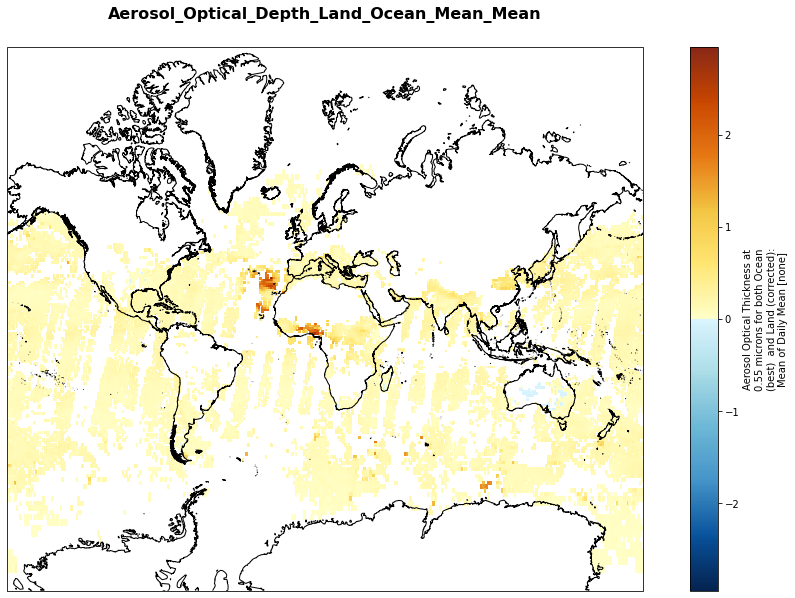

Read MODIS Terra/Aqua netcdf as xarray
Contents
Read MODIS Terra/Aqua netcdf as xarray#
HDF4 MODIS was converted to netCDF using nccopy
import xarray as xr
import s3fs
from datetime import datetime
import matplotlib
import matplotlib.pyplot as plt
import cartopy.crs as ccrs
import cmaps
xr.set_options(display_style='html')
%matplotlib inline
---------------------------------------------------------------------------
RuntimeError Traceback (most recent call last)
RuntimeError: module compiled against API version 0x10 but this version of numpy is 0xe
---------------------------------------------------------------------------
ImportError Traceback (most recent call last)
Cell In [1], line 4
2 import s3fs
3 from datetime import datetime
----> 4 import matplotlib
5 import matplotlib.pyplot as plt
6 import cartopy.crs as ccrs
File ~/micromamba-root/envs/clivar/lib/python3.10/site-packages/matplotlib/__init__.py:107
103 import warnings
105 # cbook must import matplotlib only within function
106 # definitions, so it is safe to import from it here.
--> 107 from . import _api, cbook, docstring, rcsetup
108 from matplotlib.cbook import MatplotlibDeprecationWarning, sanitize_sequence
109 from matplotlib.cbook import mplDeprecation # deprecated
File ~/micromamba-root/envs/clivar/lib/python3.10/site-packages/matplotlib/rcsetup.py:26
24 from matplotlib import _api, animation, cbook
25 from matplotlib.cbook import ls_mapper
---> 26 from matplotlib.colors import Colormap, is_color_like
27 from matplotlib.fontconfig_pattern import parse_fontconfig_pattern
28 from matplotlib._enums import JoinStyle, CapStyle
File ~/micromamba-root/envs/clivar/lib/python3.10/site-packages/matplotlib/colors.py:82
80 import matplotlib as mpl
81 import numpy as np
---> 82 from matplotlib import _api, cbook, scale
83 from ._color_data import BASE_COLORS, TABLEAU_COLORS, CSS4_COLORS, XKCD_COLORS
86 class _ColorMapping(dict):
File ~/micromamba-root/envs/clivar/lib/python3.10/site-packages/matplotlib/scale.py:18
16 import matplotlib as mpl
17 from matplotlib import _api, docstring
---> 18 from matplotlib.ticker import (
19 NullFormatter, ScalarFormatter, LogFormatterSciNotation, LogitFormatter,
20 NullLocator, LogLocator, AutoLocator, AutoMinorLocator,
21 SymmetricalLogLocator, LogitLocator)
22 from matplotlib.transforms import Transform, IdentityTransform
25 class ScaleBase:
File ~/micromamba-root/envs/clivar/lib/python3.10/site-packages/matplotlib/ticker.py:179
177 import matplotlib as mpl
178 from matplotlib import _api, cbook
--> 179 from matplotlib import transforms as mtransforms
181 _log = logging.getLogger(__name__)
183 __all__ = ('TickHelper', 'Formatter', 'FixedFormatter',
184 'NullFormatter', 'FuncFormatter', 'FormatStrFormatter',
185 'StrMethodFormatter', 'ScalarFormatter', 'LogFormatter',
(...)
192 'MultipleLocator', 'MaxNLocator', 'AutoMinorLocator',
193 'SymmetricalLogLocator', 'LogitLocator', 'OldAutoLocator')
File ~/micromamba-root/envs/clivar/lib/python3.10/site-packages/matplotlib/transforms.py:46
43 from numpy.linalg import inv
45 from matplotlib import _api
---> 46 from matplotlib._path import (
47 affine_transform, count_bboxes_overlapping_bbox, update_path_extents)
48 from .path import Path
50 DEBUG = False
ImportError: numpy.core.multiarray failed to import
Connect to bucket (anonymous login for public data only)#
fs = s3fs.S3FileSystem(anon=True,
client_kwargs={
'endpoint_url': 'https://forces2021.uiogeo-apps.sigma2.no/'
})
remote_files = fs.ls('data/MODIS/MODIS-SUB-XYD')
remote_files[:10]
['data/MODIS/MODIS-SUB-XYD/MOD08_M3.A2000032.061.2017276183309.nc',
'data/MODIS/MODIS-SUB-XYD/MOD08_M3.A2000061.061.2017272215822.nc',
'data/MODIS/MODIS-SUB-XYD/MOD08_M3.A2000092.061.2017276174940.nc',
'data/MODIS/MODIS-SUB-XYD/MOD08_M3.A2000122.061.2017275191641.nc',
'data/MODIS/MODIS-SUB-XYD/MOD08_M3.A2000153.061.2017276072839.nc',
'data/MODIS/MODIS-SUB-XYD/MOD08_M3.A2000183.061.2017276075622.nc',
'data/MODIS/MODIS-SUB-XYD/MOD08_M3.A2000214.061.2017276050502.nc',
'data/MODIS/MODIS-SUB-XYD/MOD08_M3.A2000245.061.2017276075932.nc',
'data/MODIS/MODIS-SUB-XYD/MOD08_M3.A2000275.061.2017276173030.nc',
'data/MODIS/MODIS-SUB-XYD/MOD08_M3.A2000306.061.2017276190346.nc']
# Iterate through remote_files to create a fileset
fileset = [fs.open(file) for file in remote_files]
Create time index from filename to concatenate netCDF files along time dimension#
def paths_to_datetimeindex(paths):
return [datetime.strptime(date.split('.A')[-1].split('.')[0], '%Y%j') for date in paths]
# Create variable used for time axis
time_var = xr.Variable('time', paths_to_datetimeindex(remote_files))
time_var
<xarray.Variable (time: 260)>
array(['2000-02-01T00:00:00.000000000', '2000-03-01T00:00:00.000000000',
'2000-04-01T00:00:00.000000000', '2000-05-01T00:00:00.000000000',
'2000-06-01T00:00:00.000000000', '2000-07-01T00:00:00.000000000',
'2000-08-01T00:00:00.000000000', '2000-09-01T00:00:00.000000000',
'2000-10-01T00:00:00.000000000', '2000-11-01T00:00:00.000000000',
'2000-12-01T00:00:00.000000000', '2001-01-01T00:00:00.000000000',
'2001-02-01T00:00:00.000000000', '2001-03-01T00:00:00.000000000',
'2001-04-01T00:00:00.000000000', '2001-05-01T00:00:00.000000000',
'2001-06-01T00:00:00.000000000', '2001-07-01T00:00:00.000000000',
'2001-08-01T00:00:00.000000000', '2001-09-01T00:00:00.000000000',
'2001-10-01T00:00:00.000000000', '2001-11-01T00:00:00.000000000',
'2001-12-01T00:00:00.000000000', '2002-01-01T00:00:00.000000000',
'2002-02-01T00:00:00.000000000', '2002-03-01T00:00:00.000000000',
'2002-04-01T00:00:00.000000000', '2002-05-01T00:00:00.000000000',
'2002-06-01T00:00:00.000000000', '2002-07-01T00:00:00.000000000',
'2002-08-01T00:00:00.000000000', '2002-09-01T00:00:00.000000000',
'2002-10-01T00:00:00.000000000', '2002-11-01T00:00:00.000000000',
'2002-12-01T00:00:00.000000000', '2003-01-01T00:00:00.000000000',
'2003-02-01T00:00:00.000000000', '2003-03-01T00:00:00.000000000',
'2003-04-01T00:00:00.000000000', '2003-05-01T00:00:00.000000000',
...
'2018-08-01T00:00:00.000000000', '2018-09-01T00:00:00.000000000',
'2018-10-01T00:00:00.000000000', '2018-11-01T00:00:00.000000000',
'2018-12-01T00:00:00.000000000', '2019-01-01T00:00:00.000000000',
'2019-02-01T00:00:00.000000000', '2019-03-01T00:00:00.000000000',
'2019-04-01T00:00:00.000000000', '2019-05-01T00:00:00.000000000',
'2019-06-01T00:00:00.000000000', '2019-07-01T00:00:00.000000000',
'2019-08-01T00:00:00.000000000', '2019-09-01T00:00:00.000000000',
'2019-10-01T00:00:00.000000000', '2019-11-01T00:00:00.000000000',
'2019-12-01T00:00:00.000000000', '2020-01-01T00:00:00.000000000',
'2020-02-01T00:00:00.000000000', '2020-03-01T00:00:00.000000000',
'2020-04-01T00:00:00.000000000', '2020-05-01T00:00:00.000000000',
'2020-06-01T00:00:00.000000000', '2020-07-01T00:00:00.000000000',
'2020-08-01T00:00:00.000000000', '2020-09-01T00:00:00.000000000',
'2020-10-01T00:00:00.000000000', '2020-11-01T00:00:00.000000000',
'2020-12-01T00:00:00.000000000', '2021-01-01T00:00:00.000000000',
'2021-02-01T00:00:00.000000000', '2021-03-01T00:00:00.000000000',
'2021-04-01T00:00:00.000000000', '2021-05-01T00:00:00.000000000',
'2021-06-01T00:00:00.000000000', '2021-07-01T00:00:00.000000000',
'2021-08-01T00:00:00.000000000', '2021-09-01T00:00:00.000000000'],
dtype='datetime64[ns]')xarray.Variable
- time: 260
- 2000-02-01 2000-03-01 2000-04-01 ... 2021-07-01 2021-08-01 2021-09-01
array(['2000-02-01T00:00:00.000000000', '2000-03-01T00:00:00.000000000', '2000-04-01T00:00:00.000000000', '2000-05-01T00:00:00.000000000', '2000-06-01T00:00:00.000000000', '2000-07-01T00:00:00.000000000', '2000-08-01T00:00:00.000000000', '2000-09-01T00:00:00.000000000', '2000-10-01T00:00:00.000000000', '2000-11-01T00:00:00.000000000', '2000-12-01T00:00:00.000000000', '2001-01-01T00:00:00.000000000', '2001-02-01T00:00:00.000000000', '2001-03-01T00:00:00.000000000', '2001-04-01T00:00:00.000000000', '2001-05-01T00:00:00.000000000', '2001-06-01T00:00:00.000000000', '2001-07-01T00:00:00.000000000', '2001-08-01T00:00:00.000000000', '2001-09-01T00:00:00.000000000', '2001-10-01T00:00:00.000000000', '2001-11-01T00:00:00.000000000', '2001-12-01T00:00:00.000000000', '2002-01-01T00:00:00.000000000', '2002-02-01T00:00:00.000000000', '2002-03-01T00:00:00.000000000', '2002-04-01T00:00:00.000000000', '2002-05-01T00:00:00.000000000', '2002-06-01T00:00:00.000000000', '2002-07-01T00:00:00.000000000', '2002-08-01T00:00:00.000000000', '2002-09-01T00:00:00.000000000', '2002-10-01T00:00:00.000000000', '2002-11-01T00:00:00.000000000', '2002-12-01T00:00:00.000000000', '2003-01-01T00:00:00.000000000', '2003-02-01T00:00:00.000000000', '2003-03-01T00:00:00.000000000', '2003-04-01T00:00:00.000000000', '2003-05-01T00:00:00.000000000', ... '2018-08-01T00:00:00.000000000', '2018-09-01T00:00:00.000000000', '2018-10-01T00:00:00.000000000', '2018-11-01T00:00:00.000000000', '2018-12-01T00:00:00.000000000', '2019-01-01T00:00:00.000000000', '2019-02-01T00:00:00.000000000', '2019-03-01T00:00:00.000000000', '2019-04-01T00:00:00.000000000', '2019-05-01T00:00:00.000000000', '2019-06-01T00:00:00.000000000', '2019-07-01T00:00:00.000000000', '2019-08-01T00:00:00.000000000', '2019-09-01T00:00:00.000000000', '2019-10-01T00:00:00.000000000', '2019-11-01T00:00:00.000000000', '2019-12-01T00:00:00.000000000', '2020-01-01T00:00:00.000000000', '2020-02-01T00:00:00.000000000', '2020-03-01T00:00:00.000000000', '2020-04-01T00:00:00.000000000', '2020-05-01T00:00:00.000000000', '2020-06-01T00:00:00.000000000', '2020-07-01T00:00:00.000000000', '2020-08-01T00:00:00.000000000', '2020-09-01T00:00:00.000000000', '2020-10-01T00:00:00.000000000', '2020-11-01T00:00:00.000000000', '2020-12-01T00:00:00.000000000', '2021-01-01T00:00:00.000000000', '2021-02-01T00:00:00.000000000', '2021-03-01T00:00:00.000000000', '2021-04-01T00:00:00.000000000', '2021-05-01T00:00:00.000000000', '2021-06-01T00:00:00.000000000', '2021-07-01T00:00:00.000000000', '2021-08-01T00:00:00.000000000', '2021-09-01T00:00:00.000000000'], dtype='datetime64[ns]')
Concatenate all files#
# Load in and concatenate all individual GeoTIFFs
dset = xr.concat([xr.open_mfdataset([i],) for i in fileset],
dim=time_var)
dset = dset.rename_dims({'YDim:mod08': 'latitude', 'XDim:mod08':'longitude', 'Effective_Optical_Depth_Average_Ocean_Micron_Levels:mod08':'levels'})
dset = dset.rename_vars({'YDim':'latitude', 'XDim':'longitude', 'Effective_Optical_Depth_Average_Ocean_Micron_Levels': 'levels'})
x = dset.isel(time=0).longitude.squeeze().reset_coords(drop=True)
y = dset.isel(time=0).latitude.squeeze().reset_coords(drop=True)
z = dset.isel(time=0).levels.squeeze().reset_coords(drop=True)
dset = dset.assign_coords({"longitude": x, "latitude": y, 'levels': z})
dset
<xarray.Dataset>
Dimensions: (latitude: 180, levels: 7, longitude: 360, time: 260)
Coordinates:
* levels (levels) float32 0.47 ....
* longitude (longitude) float32 -17...
* latitude (latitude) float32 89.5...
* time (time) datetime64[ns] 2...
Data variables:
Aerosol_Optical_Depth_Land_Ocean_Mean_Mean (time, latitude, longitude) float32 dask.array<chunksize=(1, 180, 360), meta=np.ndarray>
AOD_550_Dark_Target_Deep_Blue_Combined_Mean_Mean (time, latitude, longitude) float32 dask.array<chunksize=(1, 180, 360), meta=np.ndarray>
Aerosol_Optical_Depth_Average_Ocean_Mean_Mean (time, levels, latitude, longitude) float32 dask.array<chunksize=(1, 7, 180, 360), meta=np.ndarray>
Cloud_Top_Temperature_Mean_Mean (time, latitude, longitude) float32 dask.array<chunksize=(1, 180, 360), meta=np.ndarray>
Cloud_Effective_Emissivity_Mean_Mean (time, latitude, longitude) float32 dask.array<chunksize=(1, 180, 360), meta=np.ndarray>
Cloud_Fraction_Mean_Mean (time, latitude, longitude) float32 dask.array<chunksize=(1, 180, 360), meta=np.ndarray>
Cloud_Optical_Thickness_Liquid_Mean_Mean (time, latitude, longitude) float32 dask.array<chunksize=(1, 180, 360), meta=np.ndarray>
Cloud_Effective_Radius_Liquid_Mean_Mean (time, latitude, longitude) float32 dask.array<chunksize=(1, 180, 360), meta=np.ndarray>
Cloud_Water_Path_Liquid_Mean_Mean (time, latitude, longitude) float32 dask.array<chunksize=(1, 180, 360), meta=np.ndarray>
Cloud_Water_Path_Ice_Mean_Mean (time, latitude, longitude) float32 dask.array<chunksize=(1, 180, 360), meta=np.ndarray>
Attributes:
HDFEOSVersion: HDFEOS_V2.19
StructMetadata.0: GROUP=SwathStructure\nEND_GROUP=SwathS...
StructMetadata.1: Min"\n\t\t\t\tDataType=DFNT_INT16\n\t\...
StructMetadata.2: BJECT=DataField_295\n\t\t\tOBJECT=Data...
StructMetadata.3: NT16\n\t\t\t\tDimList=("YDim","XDim")\...
StructMetadata.4: \t\tDataFieldName="Cloud_Retrieval_Fra...
StructMetadata.5: List=("YDim","XDim")\n\t\t\tEND_OBJECT...
StructMetadata.6: CT=DataField_1037\n\t\t\t\tDataFieldNa...
CoreMetadata.0: \nGROUP = INVENTORYME...
ArchiveMetadata.0: \nGROUP = ARCHIVEDMET...
identifier_product_doi: 10.5067/MODIS/MOD08_M3.061
identifier_product_doi_authority: http://dx.doi.orgxarray.Dataset
- latitude: 180
- levels: 7
- longitude: 360
- time: 260
- levels(levels)float320.47 0.55 0.66 0.87 1.24 1.64 2.13
array([0.47, 0.55, 0.66, 0.87, 1.24, 1.64, 2.13], dtype=float32)
- longitude(longitude)float32-179.5 -178.5 ... 178.5 179.5
array([-179.5, -178.5, -177.5, ..., 177.5, 178.5, 179.5], dtype=float32)
- latitude(latitude)float3289.5 88.5 87.5 ... -88.5 -89.5
array([ 89.5, 88.5, 87.5, 86.5, 85.5, 84.5, 83.5, 82.5, 81.5, 80.5, 79.5, 78.5, 77.5, 76.5, 75.5, 74.5, 73.5, 72.5, 71.5, 70.5, 69.5, 68.5, 67.5, 66.5, 65.5, 64.5, 63.5, 62.5, 61.5, 60.5, 59.5, 58.5, 57.5, 56.5, 55.5, 54.5, 53.5, 52.5, 51.5, 50.5, 49.5, 48.5, 47.5, 46.5, 45.5, 44.5, 43.5, 42.5, 41.5, 40.5, 39.5, 38.5, 37.5, 36.5, 35.5, 34.5, 33.5, 32.5, 31.5, 30.5, 29.5, 28.5, 27.5, 26.5, 25.5, 24.5, 23.5, 22.5, 21.5, 20.5, 19.5, 18.5, 17.5, 16.5, 15.5, 14.5, 13.5, 12.5, 11.5, 10.5, 9.5, 8.5, 7.5, 6.5, 5.5, 4.5, 3.5, 2.5, 1.5, 0.5, -0.5, -1.5, -2.5, -3.5, -4.5, -5.5, -6.5, -7.5, -8.5, -9.5, -10.5, -11.5, -12.5, -13.5, -14.5, -15.5, -16.5, -17.5, -18.5, -19.5, -20.5, -21.5, -22.5, -23.5, -24.5, -25.5, -26.5, -27.5, -28.5, -29.5, -30.5, -31.5, -32.5, -33.5, -34.5, -35.5, -36.5, -37.5, -38.5, -39.5, -40.5, -41.5, -42.5, -43.5, -44.5, -45.5, -46.5, -47.5, -48.5, -49.5, -50.5, -51.5, -52.5, -53.5, -54.5, -55.5, -56.5, -57.5, -58.5, -59.5, -60.5, -61.5, -62.5, -63.5, -64.5, -65.5, -66.5, -67.5, -68.5, -69.5, -70.5, -71.5, -72.5, -73.5, -74.5, -75.5, -76.5, -77.5, -78.5, -79.5, -80.5, -81.5, -82.5, -83.5, -84.5, -85.5, -86.5, -87.5, -88.5, -89.5], dtype=float32) - time(time)datetime64[ns]2000-02-01 ... 2021-09-01
array(['2000-02-01T00:00:00.000000000', '2000-03-01T00:00:00.000000000', '2000-04-01T00:00:00.000000000', ..., '2021-07-01T00:00:00.000000000', '2021-08-01T00:00:00.000000000', '2021-09-01T00:00:00.000000000'], dtype='datetime64[ns]')
- Aerosol_Optical_Depth_Land_Ocean_Mean_Mean(time, latitude, longitude)float32dask.array<chunksize=(1, 180, 360), meta=np.ndarray>
- valid_range :
- [-100 5000]
- long_name :
- Aerosol Optical Thickness at 0.55 microns for both Ocean (best) and Land (corrected): Mean of Daily Mean
- units :
- none
- Level_2_Pixel_Values_Read_As :
- Real
- Included_Level_2_Nighttime_Data :
- False
- Quality_Assurance_Data_Set :
- No_QA
- Statistic_Type :
- Simple_MND
- Aggregation_Data_Set :
- None
- Derived_From_Level_3_Daily_Data_Set :
- Aerosol_Optical_Depth_Land_Ocean_Mean
- Weighting :
- MinNumDays
Array Chunk Bytes 67.39 MB 259.20 kB Shape (260, 180, 360) (1, 180, 360) Count 1040 Tasks 260 Chunks Type float32 numpy.ndarray - AOD_550_Dark_Target_Deep_Blue_Combined_Mean_Mean(time, latitude, longitude)float32dask.array<chunksize=(1, 180, 360), meta=np.ndarray>
- valid_range :
- [ 0 5000]
- long_name :
- Combined Dark Target and Deep Blue AOD at 0.55 micron for land and ocean: Mean of Daily Mean
- units :
- none
- Level_2_Pixel_Values_Read_As :
- Real
- Included_Level_2_Nighttime_Data :
- False
- Quality_Assurance_Data_Set :
- Quality_Assurance_Land
- Statistic_Type :
- Simple_MND
- QA_Byte :
- [5]
- QA_Useful_Flag_Bit :
- [0]
- QA_Value_Start_Bit :
- [1]
- QA_Value_Num_Bits :
- [2]
- Aggregation_Data_Set :
- None
- Derived_From_Level_3_Daily_Data_Set :
- AOD_550_Dark_Target_Deep_Blue_Combined_Mean
- Weighting :
- MinNumDays
Array Chunk Bytes 67.39 MB 259.20 kB Shape (260, 180, 360) (1, 180, 360) Count 1040 Tasks 260 Chunks Type float32 numpy.ndarray - Aerosol_Optical_Depth_Average_Ocean_Mean_Mean(time, levels, latitude, longitude)float32dask.array<chunksize=(1, 7, 180, 360), meta=np.ndarray>
- valid_range :
- [-100 5000]
- long_name :
- Average aerosol optical thickness at seven bands for average solution: Mean of Daily Mean
- units :
- none
- Level_2_Pixel_Values_Read_As :
- Real
- Included_Level_2_Nighttime_Data :
- False
- Quality_Assurance_Data_Set :
- Quality_Assurance_Ocean
- Statistic_Type :
- Simple_MND
- QA_Byte :
- [0]
- QA_Useful_Flag_Bit :
- [4]
- QA_Value_Start_Bit :
- [5]
- QA_Value_Num_Bits :
- [3]
- Aggregation_Data_Set :
- None
- Derived_From_Level_3_Daily_Data_Set :
- Aerosol_Optical_Depth_Average_Ocean_Mean
- Weighting :
- MinNumDays
Array Chunk Bytes 471.74 MB 1.81 MB Shape (260, 7, 180, 360) (1, 7, 180, 360) Count 1040 Tasks 260 Chunks Type float32 numpy.ndarray - Cloud_Top_Temperature_Mean_Mean(time, latitude, longitude)float32dask.array<chunksize=(1, 180, 360), meta=np.ndarray>
- valid_range :
- [ 0 20000]
- long_name :
- Cloud Top Temperature: Mean of Daily Mean
- units :
- Degrees Kelvin
- Level_2_Pixel_Values_Read_As :
- Real
- Included_Level_2_Nighttime_Data :
- True
- Quality_Assurance_Data_Set :
- No_QA
- Statistic_Type :
- Simple
- Aggregation_Data_Set :
- None
- Derived_From_Level_3_Daily_Data_Set :
- Cloud_Top_Temperature_Mean
- Weighting :
- Unweighted
Array Chunk Bytes 67.39 MB 259.20 kB Shape (260, 180, 360) (1, 180, 360) Count 1040 Tasks 260 Chunks Type float32 numpy.ndarray - Cloud_Effective_Emissivity_Mean_Mean(time, latitude, longitude)float32dask.array<chunksize=(1, 180, 360), meta=np.ndarray>
- valid_range :
- [ 0 100]
- long_name :
- Cloud Effective Emissivity: Mean of Daily Mean
- units :
- none
- Level_2_Pixel_Values_Read_As :
- Real
- Included_Level_2_Nighttime_Data :
- True
- Quality_Assurance_Data_Set :
- No_QA
- Statistic_Type :
- Simple
- Aggregation_Data_Set :
- None
- Derived_From_Level_3_Daily_Data_Set :
- Cloud_Effective_Emissivity_Mean
- Weighting :
- Unweighted
Array Chunk Bytes 67.39 MB 259.20 kB Shape (260, 180, 360) (1, 180, 360) Count 1040 Tasks 260 Chunks Type float32 numpy.ndarray - Cloud_Fraction_Mean_Mean(time, latitude, longitude)float32dask.array<chunksize=(1, 180, 360), meta=np.ndarray>
- valid_range :
- [ 0 10000]
- long_name :
- Cloud Fraction from Cloud Mask (count of lowest 2 clear sky confidence levels, cloudy & probably cloudy / total count): Mean of Daily Mean
- units :
- none
- Level_2_Pixel_Values_Read_As :
- Real
- Included_Level_2_Nighttime_Data :
- True
- Quality_Assurance_Data_Set :
- No_QA
- Statistic_Type :
- Simple
- Aggregation_Data_Set :
- None
- Derived_From_Level_3_Daily_Data_Set :
- Cloud_Fraction_Mean
- Weighting :
- Unweighted
Array Chunk Bytes 67.39 MB 259.20 kB Shape (260, 180, 360) (1, 180, 360) Count 1040 Tasks 260 Chunks Type float32 numpy.ndarray - Cloud_Optical_Thickness_Liquid_Mean_Mean(time, latitude, longitude)float32dask.array<chunksize=(1, 180, 360), meta=np.ndarray>
- valid_range :
- [ 0 15000]
- long_name :
- Liquid Water Cloud Optical Thickness: Mean of Daily Mean
- units :
- none
- Level_2_Pixel_Values_Read_As :
- Real
- Included_Level_2_Nighttime_Data :
- False
- Quality_Assurance_Data_Set :
- Quality_Assurance_1km
- Statistic_Type :
- Simple
- QA_Byte :
- [0]
- QA_Useful_Flag_Bit :
- [0]
- QA_Value_Start_Bit :
- [1]
- QA_Value_Num_Bits :
- [2]
- Aggregation_Data_Set :
- Quality_Assurance_1km
- Aggregation_Byte :
- [2]
- Aggregation_Value_Start_Bit :
- [0]
- Aggregation_Value_Num_Bits :
- [3]
- Aggregation_Category_Values :
- [2]
- Aggregation_Valid_Category_Values :
- [1 2 3 4]
- Derived_From_Level_3_Daily_Data_Set :
- Cloud_Optical_Thickness_Liquid_Mean
- Weighting :
- Pixel_Weighted
- Weighted_Parameter_Data_Set :
- Cloud_Retrieval_Fraction_Liquid_Pixel_Counts
Array Chunk Bytes 67.39 MB 259.20 kB Shape (260, 180, 360) (1, 180, 360) Count 1040 Tasks 260 Chunks Type float32 numpy.ndarray - Cloud_Effective_Radius_Liquid_Mean_Mean(time, latitude, longitude)float32dask.array<chunksize=(1, 180, 360), meta=np.ndarray>
- valid_range :
- [ 400 3000]
- long_name :
- Liquid Water Cloud Effective Particle Radius: Mean of Daily Mean
- units :
- microns
- Level_2_Pixel_Values_Read_As :
- Real
- Included_Level_2_Nighttime_Data :
- False
- Quality_Assurance_Data_Set :
- Quality_Assurance_1km
- Statistic_Type :
- Simple
- QA_Byte :
- [0]
- QA_Useful_Flag_Bit :
- [5]
- QA_Value_Start_Bit :
- [6]
- QA_Value_Num_Bits :
- [2]
- Aggregation_Data_Set :
- Quality_Assurance_1km
- Aggregation_Byte :
- [2]
- Aggregation_Value_Start_Bit :
- [0]
- Aggregation_Value_Num_Bits :
- [3]
- Aggregation_Category_Values :
- [2]
- Aggregation_Valid_Category_Values :
- [1 2 3 4]
- Derived_From_Level_3_Daily_Data_Set :
- Cloud_Effective_Radius_Liquid_Mean
- Weighting :
- Pixel_Weighted
- Weighted_Parameter_Data_Set :
- Cloud_Retrieval_Fraction_Liquid_Pixel_Counts
Array Chunk Bytes 67.39 MB 259.20 kB Shape (260, 180, 360) (1, 180, 360) Count 1040 Tasks 260 Chunks Type float32 numpy.ndarray - Cloud_Water_Path_Liquid_Mean_Mean(time, latitude, longitude)float32dask.array<chunksize=(1, 180, 360), meta=np.ndarray>
- valid_range :
- [ 0 3000]
- long_name :
- Liquid Water Cloud Water Path: Mean of Daily Mean
- units :
- g/m^2
- Level_2_Pixel_Values_Read_As :
- Real
- Included_Level_2_Nighttime_Data :
- False
- Quality_Assurance_Data_Set :
- Quality_Assurance_1km
- Statistic_Type :
- Simple
- QA_Byte :
- [2]
- QA_Useful_Flag_Bit :
- [3]
- QA_Value_Start_Bit :
- [0]
- QA_Value_Num_Bits :
- [2]
- Aggregation_Data_Set :
- Quality_Assurance_1km
- Aggregation_Byte :
- [2]
- Aggregation_Value_Start_Bit :
- [0]
- Aggregation_Value_Num_Bits :
- [3]
- Aggregation_Category_Values :
- [2]
- Aggregation_Valid_Category_Values :
- [1 2 3 4]
- Derived_From_Level_3_Daily_Data_Set :
- Cloud_Water_Path_Liquid_Mean
- Weighting :
- Pixel_Weighted
- Weighted_Parameter_Data_Set :
- Cloud_Retrieval_Fraction_Liquid_Pixel_Counts
Array Chunk Bytes 67.39 MB 259.20 kB Shape (260, 180, 360) (1, 180, 360) Count 1040 Tasks 260 Chunks Type float32 numpy.ndarray - Cloud_Water_Path_Ice_Mean_Mean(time, latitude, longitude)float32dask.array<chunksize=(1, 180, 360), meta=np.ndarray>
- valid_range :
- [ 0 6000]
- long_name :
- Ice Cloud Water Path: Mean of Daily Mean
- units :
- g/m^2
- Level_2_Pixel_Values_Read_As :
- Real
- Included_Level_2_Nighttime_Data :
- False
- Quality_Assurance_Data_Set :
- Quality_Assurance_1km
- Statistic_Type :
- Simple
- QA_Byte :
- [2]
- QA_Useful_Flag_Bit :
- [3]
- QA_Value_Start_Bit :
- [0]
- QA_Value_Num_Bits :
- [2]
- Aggregation_Data_Set :
- Quality_Assurance_1km
- Aggregation_Byte :
- [2]
- Aggregation_Value_Start_Bit :
- [0]
- Aggregation_Value_Num_Bits :
- [3]
- Aggregation_Category_Values :
- [3]
- Aggregation_Valid_Category_Values :
- [1 2 3 4]
- Derived_From_Level_3_Daily_Data_Set :
- Cloud_Water_Path_Ice_Mean
- Weighting :
- Pixel_Weighted
- Weighted_Parameter_Data_Set :
- Cloud_Retrieval_Fraction_Ice_Pixel_Counts
Array Chunk Bytes 67.39 MB 259.20 kB Shape (260, 180, 360) (1, 180, 360) Count 1040 Tasks 260 Chunks Type float32 numpy.ndarray
- HDFEOSVersion :
- HDFEOS_V2.19
- StructMetadata.0 :
- GROUP=SwathStructure END_GROUP=SwathStructure GROUP=GridStructure GROUP=GRID_1 GridName="mod08" XDim=360 YDim=180 UpperLeftPointMtrs=(-180000000.000000,90000000.000000) LowerRightMtrs=(180000000.000000,-90000000.000000) Projection=GCTP_GEO GridOrigin=HDFE_GD_UL GROUP=Dimension OBJECT=Dimension_1 DimensionName="Quality_Assurance_Categories" Size=4 END_OBJECT=Dimension_1 OBJECT=Dimension_2 DimensionName="Scattering_Angle_Histo_Intervals" Size=10 END_OBJECT=Dimension_2 OBJECT=Dimension_3 DimensionName="AOD_Histo_Intervals" Size=17 END_OBJECT=Dimension_3 OBJECT=Dimension_4 DimensionName="Corrected_Optical_Depth_Land_Micron_Levels" Size=3 END_OBJECT=Dimension_4 OBJECT=Dimension_5 DimensionName="Corrected_Optical_Depth_Land_Histo_Intervals" Size=5 END_OBJECT=Dimension_5 OBJECT=Dimension_6 DimensionName="Number_Pixels_Used_Histo_Intervals" Size=10 END_OBJECT=Dimension_6 OBJECT=Dimension_7 DimensionName="Number_Pixels_Used_Land_Micron_Levels" Size=10 END_OBJECT=Dimension_7 OBJECT=Dimension_8 DimensionName="Deep_Blue_Aerosol_Optical_Depth_Land_Micron_Levels" Size=3 END_OBJECT=Dimension_8 OBJECT=Dimension_9 DimensionName="Deep_Blue_Aerosol_Optical_Depth_Land_Histo_Intervals" Size=5 END_OBJECT=Dimension_9 OBJECT=Dimension_10 DimensionName="Deep_Blue_Angstrom_Exponent_Land_Histo_Intervals" Size=5 END_OBJECT=Dimension_10 OBJECT=Dimension_11 DimensionName="Deep_Blue_Single_Scattering_Albedo_Land_Histo_Intervals" Size=7 END_OBJECT=Dimension_11 OBJECT=Dimension_12 DimensionName="Effective_Optical_Depth_Average_Ocean_Micron_Levels" Size=7 END_OBJECT=Dimension_12 OBJECT=Dimension_13 DimensionName="Effective_Optical_Depth_Average_Ocean_Histo_Intervals" Size=5 END_OBJECT=Dimension_13 OBJECT=Dimension_14 DimensionName="Aerosol_PSML003_Ocean_Histo_Intervals" Size=12 END_OBJECT=Dimension_14 OBJECT=Dimension_15 DimensionName="Optical_Depth_by_models_ocean_Index" Size=9 END_OBJECT=Dimension_15 OBJECT=Dimension_16 DimensionName="Number_Pixels_Used_Ocean_Micron_Levels" Size=10 END_OBJECT=Dimension_16 OBJECT=Dimension_17 DimensionName="EOD_0p55um_Ocean_JHisto_Intervals" Size=9 END_OBJECT=Dimension_17 OBJECT=Dimension_18 DimensionName="AE1_Ocean_JHisto_Intervals" Size=8 END_OBJECT=Dimension_18 OBJECT=Dimension_19 DimensionName="AE2_Ocean_JHisto_Intervals" Size=8 END_OBJECT=Dimension_19 OBJECT=Dimension_20 DimensionName="ODRS_Ocean_JHisto_Intervals" Size=5 END_OBJECT=Dimension_20 OBJECT=Dimension_21 DimensionName="Water_Vapor_Near_Infrared_Clear_Histo_Intervals" Size=45 END_OBJECT=Dimension_21 OBJECT=Dimension_22 DimensionName="Water_Vapor_Near_Infrared_Cloud_Histo_Intervals" Size=35 END_OBJECT=Dimension_22 OBJECT=Dimension_23 DimensionName="Cirrus_Reflectance_Histo_Intervals" Size=30 END_OBJECT=Dimension_23 OBJECT=Dimension_24 DimensionName="Cloud_Top_Temperature_Histo_Intervals" Size=17 END_OBJECT=Dimension_24 OBJECT=Dimension_25 DimensionName="Cloud_Top_Pressure_Histo_Intervals" Size=11 END_OBJECT=Dimension_25 OBJECT=Dimension_26 DimensionName="Cloud_Top_Pressure_JHisto_Intervals" Size=3 END_OBJECT=Dimension_26 OBJECT=Dimension_27 DimensionName="CTP_Histo_Intervals" Size=27 END_OBJECT=Dimension_27 OBJECT=Dimension_28 DimensionName="CTP_JHisto_Intervals" Size=3 END_OBJECT=Dimension_28 OBJECT=Dimension_29 DimensionName="CTP_New_JHisto_Intervals" Size=10 END_OBJECT=Dimension_29 OBJECT=Dimension_30 DimensionName="CEE_JHisto_Intervals" Size=6 END_OBJECT=Dimension_30 OBJECT=Dimension_31 DimensionName="CEE2_JHisto_Intervals" Size=20 END_OBJECT=Dimension_31 OBJECT=Dimension_32 DimensionName="CEE_New_JHisto_Intervals" Size=11 END_OBJECT=Dimension_32 OBJECT=Dimension_33 DimensionName="CTP2_JHisto_Intervals" Size=14 END_OBJECT=Dimension_33 OBJECT=Dimension_34 DimensionName="CTH_JHisto_Intervals" Size=18 END_OBJECT=Dimension_34 OBJECT=Dimension_35 DimensionName="Cloud_Effective_Emissivity_JHisto_Intervals" Size=3 END_OBJECT=Dimension_35 OBJECT=Dimension_36 DimensionName="Cloud_Effective_Emissivity_Histo_Intervals" Size=10 END_OBJECT=Dimension_36 OBJECT=Dimension_37 DimensionName="Cloud_Fraction_Histo_Intervals" Size=5 END_OBJECT=Dimension_37 OBJECT=Dimension_38 DimensionName="CF_JHisto_Intervals" Size=25 END_OBJECT=Dimension_38 OBJECT=Dimension_39 DimensionName="CF_New_JHisto_Intervals" Size=12 END_OBJECT=Dimension_39 OBJECT=Dimension_40 DimensionName="Cloud_Phase_Infrared_JHisto_Intervals" Size=4 END_OBJECT=Dimension_40 OBJECT=Dimension_41 DimensionName="CP_New_Infrared_JHisto_Intervals" Size=3 END_OBJECT=Dimension_41 OBJECT=Dimension_42 DimensionName="Cloud_Phase_Infrared_Histo_Intervals" Size=5 END_OBJECT=Dimension_42 OBJECT=Dimension_43 DimensionName="CP_New_Infrared_Histo_Intervals" Size=4 END_OBJECT=Dimension_43 OBJECT=Dimension_44 DimensionName="Cloud_Top_Temperature_JHisto_Intervals" Size=17 END_OBJECT=Dimension_44 OBJECT=Dimension_45 DimensionName="CTT_New_JHisto_Intervals" Size=17 END_OBJECT=Dimension_45 OBJECT=Dimension_46 DimensionName="CTT_JHisto_Intervals" Size=20 END_OBJECT=Dimension_46 OBJECT=Dimension_47 DimensionName="CTP1km_JHisto_Intervals" Size=10 END_OBJECT=Dimension_47 OBJECT=Dimension_48 DimensionName="Cloud_Optical_Thickness_Liquid_Histo_Intervals" Size=45 END_OBJECT=Dimension_48 OBJECT=Dimension_49 DimensionName="COT_New_Liquid_Histo_Intervals" Size=46 END_OBJECT=Dimension_49 OBJECT=Dimension_50 DimensionName="Cloud_Optical_Thickness_Liquid_JHisto_Intervals" Size=11 END_OBJECT=Dimension_50 OBJECT=Dimension_51 DimensionName="COT_New_Liquid_JHisto_Intervals" Size=12 END_OBJECT=Dimension_51 OBJECT=Dimension_52 DimensionName="Cloud_Top_Temperature_Liquid_JHisto_Intervals" Size=12 END_OBJECT=Dimension_52 OBJECT=Dimension_53 DimensionName="CTT_New_Liquid_JHisto_Intervals" Size=12 END_OBJECT=Dimension_53 OBJECT=Dimension_54 DimensionName="Cloud_Top_Pressure_Liquid_JHisto_Intervals" Size=13 END_OBJECT=Dimension_54 OBJECT=Dimension_55 DimensionName="CTP_New_Liquid_JHisto_Intervals" Size=13 END_OBJECT=Dimension_55 OBJECT=Dimension_56 DimensionName="Cloud_Optical_Thickness_Ice_Histo_Intervals" Size=30 END_OBJECT=Dimension_56 OBJECT=Dimension_57 DimensionName="COT_New_Ice_Histo_Intervals" Size=31 END_OBJECT=Dimension_57 OBJECT=Dimension_58 DimensionName="Cloud_Optical_Thickness_Ice_JHisto_Intervals" Size=11 END_OBJECT=Dimension_58 OBJECT=Dimension_59 DimensionName="COT_New_Ice_JHisto_Intervals" Size=12 END_OBJECT=Dimension_59 OBJECT=Dimension_60 DimensionName="Cloud_Top_Temperature_Ice_JHisto_Intervals" Size=13 END_OBJECT=Dimension_60 OBJECT=Dimension_61 DimensionName="Cloud_Top_Pressure_Ice_JHisto_Intervals" Size=16 END_OBJECT=Dimension_61 OBJECT=Dimension_62 DimensionName="Cloud_Optical_Thickness_ISCCP_JHisto_Intervals" Size=7 END_OBJECT=Dimension_62 OBJECT=Dimension_63 DimensionName="COT_New_ISCCP_JHisto_Intervals" Size=8 END_OBJECT=Dimension_63 OBJECT=Dimension_64 DimensionName="Cloud_Top_Pressure_ISCCP_JHisto_Intervals" Size=7 END_OBJECT=Dimension_64 OBJECT=Dimension_65 DimensionName="Cloud_Effective_Radius_Liquid_Histo_Intervals" Size=21 END_OBJECT=Dimension_65 OBJECT=Dimension_66 DimensionName="Cloud_Effective_Radius_Liquid_JHisto_Intervals" Size=9 END_OBJECT=Dimension_66 OBJECT=Dimension_67 DimensionName="Cloud_Effective_Radius_Ice_Histo_Intervals" Size=13 END_OBJECT=Dimension_67 OBJECT=Dimension_68 DimensionName="Cloud_Effective_Radius_Ice_JHisto_Intervals" Size=13 END_OBJECT=Dimension_68 OBJECT=Dimension_69 DimensionName="CER_New_Ice_JHisto_Intervals" Size=11 END_OBJECT=Dimension_69 OBJECT=Dimension_70 DimensionName="Cloud_Phase_Optical_Properties_JHisto_Intervals" Size=3 END_OBJECT=Dimension_70 OBJECT=Dimension_71 DimensionName="Cloud_Water_Path_Liquid_Histo_Intervals" Size=14 END_OBJECT=Dimension_71 OBJECT=Dimension_72 DimensionName="Cloud_Water_Path_Ice_Histo_Intervals" Size=16 END_OBJECT=Dimension_72 OBJECT=Dimension_73 DimensionName="Total_Ozone_Histo_Intervals" Size=10 END_OBJECT=Dimension_73 OBJECT=Dimension_74 DimensionName="Total_Totals_Histo_Intervals" Size=8 END_OBJECT=Dimension_74 OBJECT=Dimension_75 DimensionName="Lifted_Index_Histo_Intervals" Size=12 END_OBJECT=Dimension_75 OBJECT=Dimension_76 DimensionName="Atmospheric_Water_Vapor_Histo_Intervals" Size=10 END_OBJECT=Dimension_76 OBJECT=Dimension_77 DimensionName="Atmospheric_Water_Vapor_Low_Histo_Intervals" Size=10 END_OBJECT=Dimension_77 OBJECT=Dimension_78 DimensionName="Atmospheric_Water_Vapor_High_Histo_Intervals" Size=10 END_OBJECT=Dimension_78 OBJECT=Dimension_79 DimensionName="Pressure_Level" Size=20 END_OBJECT=Dimension_79 OBJECT=Dimension_80 DimensionName="XDim" Size=360 END_OBJECT=Dimension_80 OBJECT=Dimension_81 DimensionName="YDim" Size=180 END_OBJECT=Dimension_81 END_GROUP=Dimension GROUP=DataField OBJECT=DataField_1 DataFieldName="Solar_Zenith_Mean_Mean" DataType=DFNT_INT16 DimList=("YDim","XDim") END_OBJECT=DataField_1 OBJECT=DataField_2 DataFieldName="Solar_Zenith_Mean_Std" DataType=DFNT_INT16 DimList=("YDim","XDim") END_OBJECT=DataField_2 OBJECT=DataField_3 DataFieldName="Solar_Zenith_Mean_Min" DataType=DFNT_INT16 DimList=("YDim","XDim") END_OBJECT=DataField_3 OBJECT=DataField_4 DataFieldName="Solar_Zenith_Mean_Max" DataType=DFNT_INT16 DimList=("YDim","XDim") END_OBJECT=DataField_4 OBJECT=DataField_5 DataFieldName="Solar_Zenith_Std_Deviation_Mean" DataType=DFNT_INT16 DimList=("YDim","XDim") END_OBJECT=DataField_5 OBJECT=DataField_6 DataFieldName="Solar_Zenith_Pixel_Counts" DataType=DFNT_INT32 DimList=("YDim","XDim") END_OBJECT=DataField_6 OBJECT=DataField_7 DataFieldName="Solar_Azimuth_Mean_Mean" DataType=DFNT_INT16 DimList=("YDim","XDim") END_OBJECT=DataField_7 OBJECT=DataField_8 DataFieldName="Solar_Azimuth_Mean_Std" DataType=DFNT_INT16 DimList=("YDim","XDim") END_OBJECT=DataField_8 OBJECT=DataField_9 DataFieldName="Solar_Azimuth_Mean_Min" DataType=DFNT_INT16 DimList=("YDim","XDim") END_OBJECT=DataField_9 OBJECT=DataField_10 DataFieldName="Solar_Azimuth_Mean_Max" DataType=DFNT_INT16 DimList=("YDim","XDim") END_OBJECT=DataField_10 OBJECT=DataField_11 DataFieldName="Solar_Azimuth_Std_Deviation_Mean" DataType=DFNT_INT16 DimList=("YDim","XDim") END_OBJECT=DataField_11 OBJECT=DataField_12 DataFieldName="Solar_Azimuth_Pixel_Counts" DataType=DFNT_INT32 DimList=("YDim","XDim") END_OBJECT=DataField_12 OBJECT=DataField_13 DataFieldName="Sensor_Zenith_Mean_Mean" DataType=DFNT_INT16 DimList=("YDim","XDim") END_OBJECT=DataField_13 OBJECT=DataField_14 DataFieldName="Sensor_Zenith_Mean_Std" DataType=DFNT_INT16 DimList=("YDim","XDim") END_OBJECT=DataField_14 OBJECT=DataField_15 DataFieldName="Sensor_Zenith_Mean_Min" DataType=DFNT_INT16 DimList=("YDim","XDim") END_OBJECT=DataField_15 OBJECT=DataField_16 DataFieldName="Sensor_Zenith_Mean_Max" DataType=DFNT_INT16 DimList=("YDim","XDim") END_OBJECT=DataField_16 OBJECT=DataField_17 DataFieldName="Sensor_Zenith_Std_Deviation_Mean" DataType=DFNT_INT16 DimList=("YDim","XDim") END_OBJECT=DataField_17 OBJECT=DataField_18 DataFieldName="Sensor_Zenith_Pixel_Counts" DataType=DFNT_INT32 DimList=("YDim","XDim") END_OBJECT=DataField_18 OBJECT=DataField_19 DataFieldName="Sensor_Azimuth_Mean_Mean" DataType=DFNT_INT16 DimList=("YDim","XDim") END_OBJECT=DataField_19 OBJECT=DataField_20 DataFieldName="Sensor_Azimuth_Mean_Std" DataType=DFNT_INT16 DimList=("YDim","XDim") END_OBJECT=DataField_20 OBJECT=DataField_21 DataFieldName="Sensor_Azimuth_Mean_Min" DataType=DFNT_INT16 DimList=("YDim","XDim") END_OBJECT=DataField_21 OBJECT=DataField_22 DataFieldName="Sensor_Azimuth_Mean_Max" DataType=DFNT_INT16 DimList=("YDim","XDim") END_OBJECT=DataField_22 OBJECT=DataField_23 DataFieldName="Sensor_Azimuth_Std_Deviation_Mean" DataType=DFNT_INT16 DimList=("YDim","XDim") END_OBJECT=DataField_23 OBJECT=DataField_24 DataFieldName="Sensor_Azimuth_Pixel_Counts" DataType=DFNT_INT32 DimList=("YDim","XDim") END_OBJECT=DataField_24 OBJECT=DataField_25 DataFieldName="Aerosol_Scattering_Angle_Mean_Mean" DataType=DFNT_INT16 DimList=("YDim","XDim") END_OBJECT=DataField_25 OBJECT=DataField_26 DataFieldName="Aerosol_Scattering_Angle_Mean_Std" DataType=DFNT_INT16 DimList=("YDim","XDim") END_OBJECT=DataField_26 OBJECT=DataField_27 DataFieldName="Aerosol_Scattering_Angle_Mean_Min" DataType=DFNT_INT16 DimList=("YDim","XDim") END_OBJECT=DataField_27 OBJECT=DataField_28 DataFieldName="Aerosol_Scattering_Angle_Mean_Max" DataType=DFNT_INT16 DimList=("YDim","XDim") END_OBJECT=DataField_28 OBJECT=DataField_29 DataFieldName="Aerosol_Scattering_Angle_Std_Deviation_Mean" DataType=DFNT_INT16 DimList=("YDim","XDim") END_OBJECT=DataField_29 OBJECT=DataField_30 DataFieldName="Aerosol_Scattering_Angle_Pixel_Counts" DataType=DFNT_INT32 DimList=("YDim","XDim") END_OBJECT=DataField_30 OBJECT=DataField_31 DataFieldName="Aerosol_Scattering_Angle_Histogram_Counts" DataType=DFNT_INT32 DimList=("Scattering_Angle_Histo_Intervals","YDim","XDim") END_OBJECT=DataField_31 OBJECT=DataField_32 DataFieldName="Aerosol_Avg_Cloud_Distance_Land_Ocean_Mean_Mean" DataType=DFNT_INT16 DimList=("YDim","XDim") END_OBJECT=DataField_32 OBJECT=DataField_33 DataFieldName="Aerosol_Avg_Cloud_Distance_Land_Ocean_Mean_Std" DataType=DFNT_INT16 DimList=("YDim","XDim") END_OBJECT=DataField_33 OBJECT=DataField_34 DataFieldName="Aerosol_Avg_Cloud_Distance_Land_Ocean_Mean_Min" DataType=DFNT_INT16 DimList=("YDim","XDim") END_OBJECT=DataField_34 OBJECT=DataField_35 DataFieldName="Aerosol_Avg_Cloud_Distance_Land_Ocean_Mean_Max" DataType=DFNT_INT16 DimList=("YDim","XDim") END_OBJECT=DataField_35 OBJECT=DataField_36 DataFieldName="Aerosol_Avg_Cloud_Distance_Land_Ocean_Std_Deviation_Mean" DataType=DFNT_INT16 DimList=("YDim","XDim") END_OBJECT=DataField_36 OBJECT=DataField_37 DataFieldName="Aerosol_Avg_Cloud_Distance_Land_Ocean_Pixel_Counts" DataType=DFNT_INT32 DimList=("YDim","XDim") END_OBJECT=DataField_37 OBJECT=DataField_38 DataFieldName="Aerosol_Optical_Depth_Land_Ocean_Mean_Mean" DataType=DFNT_INT16 DimList=("YDim","XDim") END_OBJECT=DataField_38 OBJECT=DataField_39 DataFieldName="Aerosol_Optical_Depth_Land_Ocean_Mean_Std" DataType=DFNT_INT16 DimList=("YDim","XDim") END_OBJECT=DataField_39 OBJECT=DataField_40 DataFieldName="Aerosol_Optical_Depth_Land_Ocean_Mean_Min" DataType=DFNT_INT16 DimList=("YDim","XDim") END_OBJECT=DataField_40 OBJECT=DataField_41 DataFieldName="Aerosol_Optical_Depth_Land_Ocean_Mean_Max" DataType=DFNT_INT16 DimList=("YDim","XDim") END_OBJECT=DataField_41 OBJECT=DataField_42 DataFieldName="Aerosol_Optical_Depth_Land_Ocean_Std_Deviation_Mean" DataType=DFNT_INT16 DimList=("YDim","XDim") END_OBJECT=DataField_42 OBJECT=DataField_43 DataFieldName="Aerosol_Optical_Depth_Land_Ocean_Pixel_Counts" DataType=DFNT_INT32 DimList=("YDim","XDim") END_OBJECT=DataField_43 OBJECT=DataField_44 DataFieldName="Aerosol_Optical_Depth_Land_Ocean_Histogram_Counts" DataType=DFNT_INT32 DimList=("AOD_Histo_Intervals","YDim","XDim") END_OBJECT=DataField_44 OBJECT=DataField_45 DataFieldName="Aerosol_Optical_Depth_Land_Mean_Mean" DataType=DFNT_INT16 DimList=("Corrected_Optical_Depth_Land_Micron_Levels","YDim","XDim") END_OBJECT=DataField_45 OBJECT=DataField_46 DataFieldName="Aerosol_Optical_Depth_Land_Mean_Std" DataType=DFNT_INT16 DimList=("Corrected_Optical_Depth_Land_Micron_Levels","YDim","XDim") END_OBJECT=DataField_46 OBJECT=DataField_47 DataFieldName="Aerosol_Optical_Depth_Land_Mean_Min" DataType=DFNT_INT16 DimList=("Corrected_Optical_Depth_Land_Micron_Levels","YDim","XDim") END_OBJECT=DataField_47 OBJECT=DataField_48 DataFieldName="Aerosol_Optical_Depth_Land_Mean_Max" DataType=DFNT_INT16 DimList=("Corrected_Optical_Depth_Land_Micron_Levels","YDim","XDim") END_OBJECT=DataField_48 OBJECT=DataField_49 DataFieldName="Aerosol_Optical_Depth_Land_Std_Deviation_Mean" DataType=DFNT_INT16 DimList=("Corrected_Optical_Depth_Land_Micron_Levels","YDim","XDim") END_OBJECT=DataField_49 OBJECT=DataField_50 DataFieldName="Aerosol_Optical_Depth_Land_QA_Mean_Mean" DataType=DFNT_INT16 DimList=("Corrected_Optical_Depth_Land_Micron_Levels","YDim","XDim") END_OBJECT=DataField_50 OBJECT=DataField_51 DataFieldName="Aerosol_Optical_Depth_Land_QA_Mean_Std" DataType=DFNT_INT16 DimList=("Corrected_Optical_Depth_Land_Micron_Levels","YDim","XDim") END_OBJECT=DataField_51 OBJECT=DataField_52 DataFieldName="Aerosol_Optical_Depth_Land_QA_Mean_Min" DataType=DFNT_INT16 DimList=("Corrected_Optical_Depth_Land_Micron_Levels","YDim","XDim") END_OBJECT=DataField_52 OBJECT=DataField_53 DataFieldName="Aerosol_Optical_Depth_Land_QA_Mean_Max" DataType=DFNT_INT16 DimList=("Corrected_Optical_Depth_Land_Micron_Levels","YDim","XDim") END_OBJECT=DataField_53 OBJECT=DataField_54 DataFieldName="Aerosol_Optical_Depth_Land_QA_Std_Deviation_Mean" DataType=DFNT_INT16 DimList=("Corrected_Optical_Depth_Land_Micron_Levels","YDim","XDim") END_OBJECT=DataField_54 OBJECT=DataField_55 DataFieldName="Aerosol_Optical_Depth_Land_Histogram_Counts" DataType=DFNT_INT32 DimList=("Corrected_Optical_Depth_Land_Micron_Levels","AOD_Histo_Intervals","YDim","XDim") END_OBJECT=DataField_55 OBJECT=DataField_56 DataFieldName="Aerosol_Optical_Depth_Land_Confidence_Histogram" DataType=DFNT_INT32 DimList=("Corrected_Optical_Depth_Land_Micron_Levels","Quality_Assurance_Categories","YDim","XDim") END_OBJECT=DataField_56 OBJECT=DataField_57 DataFieldName="Aerosol_Number_Pixels_Used_Land_Mean_Mean" DataType=DFNT_INT16 DimList=("Number_Pixels_Used_Land_Micron_Levels","YDim","XDim") END_OBJECT=DataField_57 OBJECT=DataField_58 DataFieldName="Aerosol_Number_Pixels_Used_Land_Mean_Std" DataType=DFNT_INT16 DimList=("Number_Pixels_Used_Land_Micron_Levels","YDim","XDim") END_OBJECT=DataField_58 OBJECT=DataField_59 DataFieldName="Aerosol_Number_Pixels_Used_Land_Mean_Min" DataType=DFNT_INT16 DimList=("Number_Pixels_Used_Land_Micron_Levels","YDim","XDim") END_OBJECT=DataField_59 OBJECT=DataField_60 DataFieldName="Aerosol_Number_Pixels_Used_Land_Mean_Max" DataType=DFNT_INT16 DimList=("Number_Pixels_Used_Land_Micron_Levels","YDim","XDim") END_OBJECT=DataField_60 OBJECT=DataField_61 DataFieldName="Aerosol_Number_Pixels_Used_Land_Std_Deviation_Mean" DataType=DFNT_INT16 DimList=("Number_Pixels_Used_Land_Micron_Levels","YDim","XDim") END_OBJECT=DataField_61 OBJECT=DataField_62 DataFieldName="Aerosol_Number_Pixels_Used_Land_QA_Mean_Mean" DataType=DFNT_INT16 DimList=("Number_Pixels_Used_Land_Micron_Levels","YDim","XDim") END_OBJECT=DataField_62 OBJECT=DataField_63 DataFieldName="Aerosol_Number_Pixels_Used_Land_QA_Mean_Std" DataType=DFNT_INT16 DimList=("Number_Pixels_Used_Land_Micron_Levels","YDim","XDim") END_OBJECT=DataField_63 OBJECT=DataField_64 DataFieldName="Aerosol_Number_Pixels_Used_Land_QA_Mean_Min" DataType=DFNT_INT16 DimList=("Number_Pixels_Used_Land_Micron_Levels","YDim","XDim") END_OBJECT=DataField_64 OBJECT=DataField_65 DataFieldName="Aerosol_Number_Pixels_Used_Land_QA_Mean_Max" DataType=DFNT_INT16 DimList=("Number_Pixels_Used_Land_Micron_Levels","YDim","XDim") END_OBJECT=DataField_65 OBJECT=DataField_66 DataFieldName="Aerosol_Number_Pixels_Used_Land_QA_Std_Deviation_Mean" DataType=DFNT_INT16 DimList=("Number_Pixels_Used_Land_Micron_Levels","YDim","XDim") END_OBJECT=DataField_66 OBJECT=DataField_67 DataFieldName="Aerosol_Number_Pixels_Used_Land_Histogram_Counts" DataType=DFNT_INT32 DimList=("Number_Pixels_Used_Land_Micron_Levels","Number_Pixels_Used_Histo_Intervals","YDim","XDim") END_OBJECT=DataField_67 OBJECT=DataField_68 DataFieldName="Deep_Blue_Aerosol_Optical_Depth_Land_Mean_Mean" DataType=DFNT_INT16 DimList=("Deep_Blue_Aerosol_Optical_Depth_Land_Micron_Levels","YDim","XDim") END_OBJECT=DataField_68 OBJECT=DataField_69 DataFieldName="Deep_Blue_Aerosol_Optical_Depth_Land_Mean_Std" DataType=DFNT_INT16 DimList=("Deep_Blue_Aerosol_Optical_Depth_Land_Micron_Levels","YDim","XDim") END_OBJECT=DataField_69 OBJECT=DataField_70 DataFieldName="Deep_Blue_Aerosol_Optical_Depth_Land_Mean_Min" DataType=DFNT_INT16 DimList=("Deep_Blue_Aerosol_Optical_Depth_Land_Micron_Levels","YDim","XDim") END_OBJECT=DataField_70 OBJECT=DataField_71 DataFieldName="Deep_Blue_Aerosol_Optical_Depth_Land_Mean_Max" DataType=DFNT_INT16 DimList=("Deep_Blue_Aerosol_Optical_Depth_Land_Micron_Levels","YDim","XDim") END_OBJECT=DataField_71 OBJECT=DataField_72 DataFieldName="Deep_Blue_Aerosol_Optical_Depth_Land_Std_Deviation_Mean" DataType=DFNT_INT16 DimList=("Deep_Blue_Aerosol_Optical_Depth_Land_Micron_Levels","YDim","XDim") END_OBJECT=DataField_72 OBJECT=DataField_73 DataFieldName="Deep_Blue_Aerosol_Optical_Depth_Land_Histogram_Counts" DataType=DFNT_INT32 DimList=("Deep_Blue_Aerosol_Optical_Depth_Land_Micron_Levels","Deep_Blue_Aerosol_Optical_Depth_Land_Histo_Intervals","YDim","XDim") END_OBJECT=DataField_73 OBJECT=DataField_74 DataFieldName="Deep_Blue_Aerosol_Optical_Depth_550_Land_Mean_Mean" DataType=DFNT_INT16 DimList=("YDim","XDim") END_OBJECT=DataField_74 OBJECT=DataField_75 DataFieldName="Deep_Blue_Aerosol_Optical_Depth_550_Land_Mean_Std" DataType=DFNT_INT16 DimList=("YDim","XDim") END_OBJECT=DataField_75 OBJECT=DataField_76 DataFieldName="Deep_Blue_Aerosol_Optical_Depth_550_Land_Mean_Min" DataType=DFNT_INT16 DimList=("YDim","XDim") END_OBJECT=DataField_76 OBJECT=DataField_77 DataFieldName="Deep_Blue_Aerosol_Optical_Depth_550_Land_Mean_Max" DataType=DFNT_INT16 DimList=("YDim","XDim") END_OBJECT=DataField_77 OBJECT=DataField_78 DataFieldName="Deep_Blue_Aerosol_Optical_Depth_550_Land_Std_Deviation_Mean" DataType=DFNT_INT16 DimList=("YDim","XDim") END_OBJECT=DataField_78 OBJECT=DataField_79 DataFieldName="Deep_Blue_Aerosol_Optical_Depth_550_Land_Histogram_Counts" DataType=DFNT_INT32 DimList=("Deep_Blue_Aerosol_Optical_Depth_Land_Histo_Intervals","YDim","XDim") END_OBJECT=DataField_79 OBJECT=DataField_80 DataFieldName="Deep_Blue_Angstrom_Exponent_Land_Mean_Mean" DataType=DFNT_INT16 DimList=("YDim","XDim") END_OBJECT=DataField_80 OBJECT=DataField_81 DataFieldName="Deep_Blue_Angstrom_Exponent_Land_Mean_Std" DataType=DFNT_INT16 DimList=("YDim","XDim") END_OBJECT=DataField_81 OBJECT=DataField_82 DataFieldName="Deep_Blue_Angstrom_Exponent_Land_Mean_Min" DataType=DFNT_INT16 DimList=("YDim","XDim") END_OBJECT=DataField_82 OBJECT=DataField_83 DataFieldName="Deep_Blue_Angstrom_Exponent_Land_Mean_Max" DataType=DFNT_INT16 DimList=("YDim","XDim") END_OBJECT=DataField_83 OBJECT=DataField_84 DataFieldName="Deep_Blue_Angstrom_Exponent_Land_Std_Deviation_Mean" DataType=DFNT_INT16 DimList=("YDim","XDim") END_OBJECT=DataField_84 OBJECT=DataField_85 DataFieldName="Deep_Blue_Angstrom_Exponent_Land_Histogram_Counts" DataType=DFNT_INT32 DimList=("Deep_Blue_Angstrom_Exponent_Land_Histo_Intervals","YDim","XDim") END_OBJECT=DataField_85 OBJECT=DataField_86 DataFieldName="Deep_Blue_Single_Scattering_Albedo_Land_Mean_Mean" DataType=DFNT_INT16 DimList=("Deep_Blue_Aerosol_Optical_Depth_Land_Micron_Levels","YDim","XDim") END_OBJECT=DataField_86 OBJECT=DataField_87 DataFieldName="Deep_Blue_Single_Scattering_Albedo_Land_Mean_Std" DataType=DFNT_INT16 DimList=("Deep_Blue_Aerosol_Optical_Depth_Land_Micron_Levels","YDim","XDim") END_OBJECT=DataField_87 OBJECT=DataField_88 DataFieldName="Deep_Blue_Single_Scattering_Albedo_Land_Mean_Min" DataType=DFNT_INT16 DimList=("Deep_Blue_Aerosol_Optical_Depth_Land_Micron_Levels","YDim","XDim") END_OBJECT=DataField_88 OBJECT=DataField_89 DataFieldName="Deep_Blue_Single_Scattering_Albedo_Land_Mean_Max" DataType=DFNT_INT16 DimList=("Deep_Blue_Aerosol_Optical_Depth_Land_Micron_Levels","YDim","XDim") END_OBJECT=DataField_89 OBJECT=DataField_90 DataFieldName="Deep_Blue_Single_Scattering_Albedo_Land_Std_Deviation_Mean" DataType=DFNT_INT16 DimList=("Deep_Blue_Aerosol_Optical_Depth_Land_Micron_Levels","YDim","XDim") END_OBJECT=DataField_90 OBJECT=DataField_91 DataFieldName="Deep_Blue_Single_Scattering_Albedo_Land_Histogram_Counts" DataType=DFNT_INT32 DimList=("Deep_Blue_Aerosol_Optical_Depth_Land_Micron_Levels","Deep_Blue_Single_Scattering_Albedo_Land_Histo_Intervals","YDim","XDim") END_OBJECT=DataField_91 OBJECT=DataField_92 DataFieldName="Deep_Blue_Number_Pixels_Used_550_Land_Mean_Mean" DataType=DFNT_INT16 DimList=("YDim","XDim") END_OBJECT=DataField_92 OBJECT=DataField_93 DataFieldName="Deep_Blue_Number_Pixels_Used_550_Land_Mean_Std" DataType=DFNT_INT16 DimList=("YDim","XDim") END_OBJECT=DataField_93 OBJECT=DataField_94 DataFieldName="Deep_Blue_Number_Pixels_Used_550_Land_Mean_Min" DataType=DFNT_INT16 DimList=("YDim","XDim") END_OBJECT=DataField_94 OBJECT=DataField_95 DataFieldName="Deep_Blue_Number_Pixels_Used_550_Land_Mean_Max" DataType=DFNT_INT16 DimList=("YDim","XDim") END_OBJECT=DataField_95 OBJECT=DataField_96 DataFieldName="Deep_Blue_Number_Pixels_Used_550_Land_Std_Deviation_Mean" DataType=DFNT_INT16 DimList=("YDim","XDim") END_OBJECT=DataField_96 OBJECT=DataField_97 DataFieldName="Deep_Blue_Number_Pixels_Used_550_Land_Histogram_Counts" DataType=DFNT_INT32 DimList=("Number_Pixels_Used_Histo_Intervals","YDim","XDim") END_OBJECT=DataField_97 OBJECT=DataField_98 DataFieldName="AOD_550_Dark_Target_Deep_Blue_Combined_Mean_Mean" DataType=DFNT_INT16 DimList=("YDim","XDim") END_OBJECT=DataField_98 OBJECT=DataField_99 DataFieldName="AOD_550_Dark_Target_Deep_Blue_Combined_Mean_Std" DataType=DFNT_INT16 DimList=("YDim","XDim") END_OBJECT=DataField_99 OBJECT=DataField_100 DataFieldName="AOD_550_Dark_Target_Deep_Blue_Combined_Mean_Min" DataType=DFNT_INT16 DimList=("YDim","XDim") END_OBJECT=DataField_100 OBJECT=DataField_101 DataFieldName="AOD_550_Dark_Target_Deep_Blue_Combined_Mean_Max" DataType=DFNT_INT16 DimList=("YDim","XDim") END_OBJECT=DataField_101 OBJECT=DataField_102 DataFieldName="AOD_550_Dark_Target_Deep_Blue_Combined_Std_Deviation_Mean" DataType=DFNT_INT16 DimList=("YDim","XDim") END_OBJECT=DataField_102 OBJECT=DataField_103 DataFieldName="AOD_550_Dark_Target_Deep_Blue_Combined_Histogram_Counts" DataType=DFNT_INT32 DimList=("Deep_Blue_Aerosol_Optical_Depth_Land_Histo_Intervals","YDim","XDim") END_OBJECT=DataField_103 OBJECT=DataField_104 DataFieldName="Aerosol_Optical_Depth_Average_Ocean_Mean_Mean" DataType=DFNT_INT16 DimList=("Effective_Optical_Depth_Average_Ocean_Micron_Levels","YDim","XDim") END_OBJECT=DataField_104 OBJECT=DataField_105 DataFieldName="Aerosol_Optical_Depth_Average_Ocean_Mean_Std" DataType=DFNT_INT16 DimList=("Effective_Optical_Depth_Average_Ocean_Micron_Levels","YDim","XDim") END_OBJECT=DataField_105 OBJECT=DataField_106 DataFieldName="Aerosol_Optical_Depth_Average_Ocean_Mean_Min" DataType=DFNT_INT16 DimList=("Effective_Optical_Depth_Average_Ocean_Micron_Levels","YDim","XDim") END_OBJECT=DataField_106 OBJECT=DataField_107 DataFieldName="Aerosol_Optical_Depth_Average_Ocean_Mean_Max" DataType=DFNT_INT16 DimList=("Effective_Optical_Depth_Average_Ocean_Micron_Levels","YDim","XDim") END_OBJECT=DataField_107 OBJECT=DataField_108 DataFieldName="Aerosol_Optical_Depth_Average_Ocean_Std_Deviation_Mean" DataType=DFNT_INT16 DimList=("Effective_Optical_Depth_Average_Ocean_Micron_Levels","YDim","XDim") END_OBJECT=DataField_108 OBJECT=DataField_109 DataFieldName="Aerosol_Optical_Depth_Average_Ocean_QA_Mean_Mean" DataType=DFNT_INT16 DimList=("Effective_Optical_Depth_Average_Ocean_Micron_Levels","YDim","XDim") END_OBJECT=DataField_109 OBJECT=DataField_110 DataFieldName="Aerosol_Optical_Depth_Average_Ocean_QA_Mean_Std" DataType=DFNT_INT16 DimList=("Effective_Optical_Depth_Average_Ocean_Micron_Levels","YDim","XDim") END_OBJECT=DataField_110 OBJECT=DataField_111 DataFieldName="Aerosol_Optical_Depth_Average_Ocean_QA_Mean_Min" DataType=DFNT_INT16 DimList=("Effective_Optical_Depth_Average_Ocean_Micron_Levels","YDim","XDim") END_OBJECT=DataField_111 OBJECT=DataField_112 DataFieldName="Aerosol_Optical_Depth_Average_Ocean_QA_Mean_Max" DataType=DFNT_INT16 DimList=("Effective_Optical_Depth_Average_Ocean_Micron_Levels","YDim","XDim") END_OBJECT=DataField_112 OBJECT=DataField_113 DataFieldName="Aerosol_Optical_Depth_Average_Ocean_QA_Std_Deviation_Mean" DataType=DFNT_INT16 DimList=("Effective_Optical_Depth_Average_Ocean_Micron_Levels","YDim","XDim") END_OBJECT=DataField_113 OBJECT=DataField_114 DataFieldName="Aerosol_Optical_Depth_Average_Ocean_Histogram_Counts" DataType=DFNT_INT32 DimList=("Effective_Optical_Depth_Average_Ocean_Micron_Levels","AOD_Histo_Intervals","YDim","XDim") END_OBJECT=DataField_114 OBJECT=DataField_115 DataFieldName="Aerosol_Optical_Depth_Average_Ocean_Confidence_Histogram" DataType=DFNT_INT32 DimList=("Effective_Optical_Depth_Average_Ocean_Micron_Levels","Quality_Assurance_Categories","YDim","XDim") END_OBJECT=DataField_115 OBJECT=DataField_116 DataFieldName="Aerosol_Optical_Depth_Small_Ocean_Mean_Mean" DataType=DFNT_INT16 DimList=("Effective_Optical_Depth_Average_Ocean_Micron_Levels","YDim","XDim") END_OBJECT=DataField_116 OBJECT=DataField_117 DataFieldName="Aerosol_Optical_Depth_Small_Ocean_Mean_Std" DataType=DFNT_INT16 DimList=("Effective_Optical_Depth_Average_Ocean_Micron_Levels","YDim","XDim") END_OBJECT=DataField_117 OBJECT=DataField_118 DataFieldName="Aerosol_Optical_Depth_Small_Ocean_Mean_
- StructMetadata.1 :
- Min" DataType=DFNT_INT16 DimList=("Effective_Optical_Depth_Average_Ocean_Micron_Levels","YDim","XDim") END_OBJECT=DataField_118 OBJECT=DataField_119 DataFieldName="Aerosol_Optical_Depth_Small_Ocean_Mean_Max" DataType=DFNT_INT16 DimList=("Effective_Optical_Depth_Average_Ocean_Micron_Levels","YDim","XDim") END_OBJECT=DataField_119 OBJECT=DataField_120 DataFieldName="Aerosol_Optical_Depth_Small_Ocean_Std_Deviation_Mean" DataType=DFNT_INT16 DimList=("Effective_Optical_Depth_Average_Ocean_Micron_Levels","YDim","XDim") END_OBJECT=DataField_120 OBJECT=DataField_121 DataFieldName="Aerosol_Optical_Depth_Small_Ocean_QA_Mean_Mean" DataType=DFNT_INT16 DimList=("Effective_Optical_Depth_Average_Ocean_Micron_Levels","YDim","XDim") END_OBJECT=DataField_121 OBJECT=DataField_122 DataFieldName="Aerosol_Optical_Depth_Small_Ocean_QA_Mean_Std" DataType=DFNT_INT16 DimList=("Effective_Optical_Depth_Average_Ocean_Micron_Levels","YDim","XDim") END_OBJECT=DataField_122 OBJECT=DataField_123 DataFieldName="Aerosol_Optical_Depth_Small_Ocean_QA_Mean_Min" DataType=DFNT_INT16 DimList=("Effective_Optical_Depth_Average_Ocean_Micron_Levels","YDim","XDim") END_OBJECT=DataField_123 OBJECT=DataField_124 DataFieldName="Aerosol_Optical_Depth_Small_Ocean_QA_Mean_Max" DataType=DFNT_INT16 DimList=("Effective_Optical_Depth_Average_Ocean_Micron_Levels","YDim","XDim") END_OBJECT=DataField_124 OBJECT=DataField_125 DataFieldName="Aerosol_Optical_Depth_Small_Ocean_QA_Std_Deviation_Mean" DataType=DFNT_INT16 DimList=("Effective_Optical_Depth_Average_Ocean_Micron_Levels","YDim","XDim") END_OBJECT=DataField_125 OBJECT=DataField_126 DataFieldName="Aerosol_Optical_Depth_Small_Ocean_Histogram_Counts" DataType=DFNT_INT32 DimList=("Effective_Optical_Depth_Average_Ocean_Micron_Levels","AOD_Histo_Intervals","YDim","XDim") END_OBJECT=DataField_126 OBJECT=DataField_127 DataFieldName="Aerosol_Optical_Depth_Small_Ocean_Confidence_Histogram" DataType=DFNT_INT32 DimList=("Effective_Optical_Depth_Average_Ocean_Micron_Levels","Quality_Assurance_Categories","YDim","XDim") END_OBJECT=DataField_127 OBJECT=DataField_128 DataFieldName="Aerosol_PSML003_Ocean_Mean_Mean" DataType=DFNT_FLOAT32 DimList=("YDim","XDim") END_OBJECT=DataField_128 OBJECT=DataField_129 DataFieldName="Aerosol_PSML003_Ocean_Mean_Std" DataType=DFNT_FLOAT32 DimList=("YDim","XDim") END_OBJECT=DataField_129 OBJECT=DataField_130 DataFieldName="Aerosol_PSML003_Ocean_Mean_Min" DataType=DFNT_FLOAT32 DimList=("YDim","XDim") END_OBJECT=DataField_130 OBJECT=DataField_131 DataFieldName="Aerosol_PSML003_Ocean_Mean_Max" DataType=DFNT_FLOAT32 DimList=("YDim","XDim") END_OBJECT=DataField_131 OBJECT=DataField_132 DataFieldName="Aerosol_PSML003_Ocean_Std_Deviation_Mean" DataType=DFNT_FLOAT32 DimList=("YDim","XDim") END_OBJECT=DataField_132 OBJECT=DataField_133 DataFieldName="Aerosol_PSML003_Ocean_QA_Mean_Mean" DataType=DFNT_FLOAT32 DimList=("YDim","XDim") END_OBJECT=DataField_133 OBJECT=DataField_134 DataFieldName="Aerosol_PSML003_Ocean_QA_Mean_Std" DataType=DFNT_FLOAT32 DimList=("YDim","XDim") END_OBJECT=DataField_134 OBJECT=DataField_135 DataFieldName="Aerosol_PSML003_Ocean_QA_Mean_Min" DataType=DFNT_FLOAT32 DimList=("YDim","XDim") END_OBJECT=DataField_135 OBJECT=DataField_136 DataFieldName="Aerosol_PSML003_Ocean_QA_Mean_Max" DataType=DFNT_FLOAT32 DimList=("YDim","XDim") END_OBJECT=DataField_136 OBJECT=DataField_137 DataFieldName="Aerosol_PSML003_Ocean_QA_Std_Deviation_Mean" DataType=DFNT_FLOAT32 DimList=("YDim","XDim") END_OBJECT=DataField_137 OBJECT=DataField_138 DataFieldName="Aerosol_PSML003_Ocean_Histogram_Counts" DataType=DFNT_INT32 DimList=("Aerosol_PSML003_Ocean_Histo_Intervals","YDim","XDim") END_OBJECT=DataField_138 OBJECT=DataField_139 DataFieldName="Aerosol_PSML003_Ocean_Confidence_Histogram" DataType=DFNT_INT32 DimList=("Quality_Assurance_Categories","YDim","XDim") END_OBJECT=DataField_139 OBJECT=DataField_140 DataFieldName="Aerosol_Optical_Depth_by_models_ocean_Mean_Mean" DataType=DFNT_INT16 DimList=("Optical_Depth_by_models_ocean_Index","YDim","XDim") END_OBJECT=DataField_140 OBJECT=DataField_141 DataFieldName="Aerosol_Optical_Depth_by_models_ocean_Mean_Std" DataType=DFNT_INT16 DimList=("Optical_Depth_by_models_ocean_Index","YDim","XDim") END_OBJECT=DataField_141 OBJECT=DataField_142 DataFieldName="Aerosol_Optical_Depth_by_models_ocean_Mean_Min" DataType=DFNT_INT16 DimList=("Optical_Depth_by_models_ocean_Index","YDim","XDim") END_OBJECT=DataField_142 OBJECT=DataField_143 DataFieldName="Aerosol_Optical_Depth_by_models_ocean_Mean_Max" DataType=DFNT_INT16 DimList=("Optical_Depth_by_models_ocean_Index","YDim","XDim") END_OBJECT=DataField_143 OBJECT=DataField_144 DataFieldName="Aerosol_Optical_Depth_by_models_ocean_Std_Deviation_Mean" DataType=DFNT_INT16 DimList=("Optical_Depth_by_models_ocean_Index","YDim","XDim") END_OBJECT=DataField_144 OBJECT=DataField_145 DataFieldName="Aerosol_Optical_Depth_by_models_ocean_QA_Mean_Mean" DataType=DFNT_INT16 DimList=("Optical_Depth_by_models_ocean_Index","YDim","XDim") END_OBJECT=DataField_145 OBJECT=DataField_146 DataFieldName="Aerosol_Optical_Depth_by_models_ocean_QA_Mean_Std" DataType=DFNT_INT16 DimList=("Optical_Depth_by_models_ocean_Index","YDim","XDim") END_OBJECT=DataField_146 OBJECT=DataField_147 DataFieldName="Aerosol_Optical_Depth_by_models_ocean_QA_Mean_Min" DataType=DFNT_INT16 DimList=("Optical_Depth_by_models_ocean_Index","YDim","XDim") END_OBJECT=DataField_147 OBJECT=DataField_148 DataFieldName="Aerosol_Optical_Depth_by_models_ocean_QA_Mean_Max" DataType=DFNT_INT16 DimList=("Optical_Depth_by_models_ocean_Index","YDim","XDim") END_OBJECT=DataField_148 OBJECT=DataField_149 DataFieldName="Aerosol_Optical_Depth_by_models_ocean_QA_Std_Deviation_Mean" DataType=DFNT_INT16 DimList=("Optical_Depth_by_models_ocean_Index","YDim","XDim") END_OBJECT=DataField_149 OBJECT=DataField_150 DataFieldName="Aerosol_Optical_Depth_by_models_ocean_Confidence_Histogram" DataType=DFNT_INT32 DimList=("Optical_Depth_by_models_ocean_Index","Quality_Assurance_Categories","YDim","XDim") END_OBJECT=DataField_150 OBJECT=DataField_151 DataFieldName="Aerosol_Number_Pixels_Used_Ocean_Mean_Mean" DataType=DFNT_INT16 DimList=("Number_Pixels_Used_Ocean_Micron_Levels","YDim","XDim") END_OBJECT=DataField_151 OBJECT=DataField_152 DataFieldName="Aerosol_Number_Pixels_Used_Ocean_Mean_Std" DataType=DFNT_INT16 DimList=("Number_Pixels_Used_Ocean_Micron_Levels","YDim","XDim") END_OBJECT=DataField_152 OBJECT=DataField_153 DataFieldName="Aerosol_Number_Pixels_Used_Ocean_Mean_Min" DataType=DFNT_INT16 DimList=("Number_Pixels_Used_Ocean_Micron_Levels","YDim","XDim") END_OBJECT=DataField_153 OBJECT=DataField_154 DataFieldName="Aerosol_Number_Pixels_Used_Ocean_Mean_Max" DataType=DFNT_INT16 DimList=("Number_Pixels_Used_Ocean_Micron_Levels","YDim","XDim") END_OBJECT=DataField_154 OBJECT=DataField_155 DataFieldName="Aerosol_Number_Pixels_Used_Ocean_Std_Deviation_Mean" DataType=DFNT_INT16 DimList=("Number_Pixels_Used_Ocean_Micron_Levels","YDim","XDim") END_OBJECT=DataField_155 OBJECT=DataField_156 DataFieldName="Aerosol_Number_Pixels_Used_Ocean_QA_Mean_Mean" DataType=DFNT_INT16 DimList=("Number_Pixels_Used_Ocean_Micron_Levels","YDim","XDim") END_OBJECT=DataField_156 OBJECT=DataField_157 DataFieldName="Aerosol_Number_Pixels_Used_Ocean_QA_Mean_Std" DataType=DFNT_INT16 DimList=("Number_Pixels_Used_Ocean_Micron_Levels","YDim","XDim") END_OBJECT=DataField_157 OBJECT=DataField_158 DataFieldName="Aerosol_Number_Pixels_Used_Ocean_QA_Mean_Min" DataType=DFNT_INT16 DimList=("Number_Pixels_Used_Ocean_Micron_Levels","YDim","XDim") END_OBJECT=DataField_158 OBJECT=DataField_159 DataFieldName="Aerosol_Number_Pixels_Used_Ocean_QA_Mean_Max" DataType=DFNT_INT16 DimList=("Number_Pixels_Used_Ocean_Micron_Levels","YDim","XDim") END_OBJECT=DataField_159 OBJECT=DataField_160 DataFieldName="Aerosol_Number_Pixels_Used_Ocean_QA_Std_Deviation_Mean" DataType=DFNT_INT16 DimList=("Number_Pixels_Used_Ocean_Micron_Levels","YDim","XDim") END_OBJECT=DataField_160 OBJECT=DataField_161 DataFieldName="Aerosol_Number_Pixels_Used_Ocean_Histogram_Counts" DataType=DFNT_INT32 DimList=("Number_Pixels_Used_Ocean_Micron_Levels","Number_Pixels_Used_Histo_Intervals","YDim","XDim") END_OBJECT=DataField_161 OBJECT=DataField_162 DataFieldName="Aerosol_AE1_Ocean_JHisto_vs_Opt_Depth" DataType=DFNT_INT32 DimList=("EOD_0p55um_Ocean_JHisto_Intervals","AE1_Ocean_JHisto_Intervals","YDim","XDim") END_OBJECT=DataField_162 OBJECT=DataField_163 DataFieldName="Aerosol_AE2_Ocean_JHisto_vs_Opt_Depth" DataType=DFNT_INT32 DimList=("EOD_0p55um_Ocean_JHisto_Intervals","AE2_Ocean_JHisto_Intervals","YDim","XDim") END_OBJECT=DataField_163 OBJECT=DataField_164 DataFieldName="Aerosol_OD_Ratio_Small_Ocean_055_JHisto_vs_Opt_Depth" DataType=DFNT_INT32 DimList=("EOD_0p55um_Ocean_JHisto_Intervals","ODRS_Ocean_JHisto_Intervals","YDim","XDim") END_OBJECT=DataField_164 OBJECT=DataField_165 DataFieldName="Water_Vapor_Near_Infrared_Clear_Mean_Mean" DataType=DFNT_INT16 DimList=("YDim","XDim") END_OBJECT=DataField_165 OBJECT=DataField_166 DataFieldName="Water_Vapor_Near_Infrared_Clear_Mean_Std" DataType=DFNT_INT16 DimList=("YDim","XDim") END_OBJECT=DataField_166 OBJECT=DataField_167 DataFieldName="Water_Vapor_Near_Infrared_Clear_Mean_Min" DataType=DFNT_INT16 DimList=("YDim","XDim") END_OBJECT=DataField_167 OBJECT=DataField_168 DataFieldName="Water_Vapor_Near_Infrared_Clear_Mean_Max" DataType=DFNT_INT16 DimList=("YDim","XDim") END_OBJECT=DataField_168 OBJECT=DataField_169 DataFieldName="Water_Vapor_Near_Infrared_Clear_Std_Deviation_Mean" DataType=DFNT_INT16 DimList=("YDim","XDim") END_OBJECT=DataField_169 OBJECT=DataField_170 DataFieldName="Water_Vapor_Near_Infrared_Clear_Histogram_Counts" DataType=DFNT_INT32 DimList=("Water_Vapor_Near_Infrared_Clear_Histo_Intervals","YDim","XDim") END_OBJECT=DataField_170 OBJECT=DataField_171 DataFieldName="Water_Vapor_Near_Infrared_Cloud_Mean_Mean" DataType=DFNT_INT16 DimList=("YDim","XDim") END_OBJECT=DataField_171 OBJECT=DataField_172 DataFieldName="Water_Vapor_Near_Infrared_Cloud_Mean_Std" DataType=DFNT_INT16 DimList=("YDim","XDim") END_OBJECT=DataField_172 OBJECT=DataField_173 DataFieldName="Water_Vapor_Near_Infrared_Cloud_Mean_Min" DataType=DFNT_INT16 DimList=("YDim","XDim") END_OBJECT=DataField_173 OBJECT=DataField_174 DataFieldName="Water_Vapor_Near_Infrared_Cloud_Mean_Max" DataType=DFNT_INT16 DimList=("YDim","XDim") END_OBJECT=DataField_174 OBJECT=DataField_175 DataFieldName="Water_Vapor_Near_Infrared_Cloud_Std_Deviation_Mean" DataType=DFNT_INT16 DimList=("YDim","XDim") END_OBJECT=DataField_175 OBJECT=DataField_176 DataFieldName="Water_Vapor_Near_Infrared_Cloud_Histogram_Counts" DataType=DFNT_INT32 DimList=("Water_Vapor_Near_Infrared_Cloud_Histo_Intervals","YDim","XDim") END_OBJECT=DataField_176 OBJECT=DataField_177 DataFieldName="Cirrus_Reflectance_Mean_Mean" DataType=DFNT_INT16 DimList=("YDim","XDim") END_OBJECT=DataField_177 OBJECT=DataField_178 DataFieldName="Cirrus_Reflectance_Mean_Std" DataType=DFNT_INT16 DimList=("YDim","XDim") END_OBJECT=DataField_178 OBJECT=DataField_179 DataFieldName="Cirrus_Reflectance_Mean_Min" DataType=DFNT_INT16 DimList=("YDim","XDim") END_OBJECT=DataField_179 OBJECT=DataField_180 DataFieldName="Cirrus_Reflectance_Mean_Max" DataType=DFNT_INT16 DimList=("YDim","XDim") END_OBJECT=DataField_180 OBJECT=DataField_181 DataFieldName="Cirrus_Reflectance_Std_Deviation_Mean" DataType=DFNT_INT16 DimList=("YDim","XDim") END_OBJECT=DataField_181 OBJECT=DataField_182 DataFieldName="Cirrus_Reflectance_Histogram_Counts" DataType=DFNT_INT32 DimList=("Cirrus_Reflectance_Histo_Intervals","YDim","XDim") END_OBJECT=DataField_182 OBJECT=DataField_183 DataFieldName="Cirrus_Fraction_SWIR_FMean" DataType=DFNT_INT16 DimList=("YDim","XDim") END_OBJECT=DataField_183 OBJECT=DataField_184 DataFieldName="Cirrus_Fraction_SWIR_FStd" DataType=DFNT_INT16 DimList=("YDim","XDim") END_OBJECT=DataField_184 OBJECT=DataField_185 DataFieldName="Cirrus_Fraction_SWIR_Pixel_Counts" DataType=DFNT_INT32 DimList=("YDim","XDim") END_OBJECT=DataField_185 OBJECT=DataField_186 DataFieldName="Cloud_Top_Temperature_Mean_Mean" DataType=DFNT_INT16 DimList=("YDim","XDim") END_OBJECT=DataField_186 OBJECT=DataField_187 DataFieldName="Cloud_Top_Temperature_Mean_Std" DataType=DFNT_INT16 DimList=("YDim","XDim") END_OBJECT=DataField_187 OBJECT=DataField_188 DataFieldName="Cloud_Top_Temperature_Mean_Min" DataType=DFNT_INT16 DimList=("YDim","XDim") END_OBJECT=DataField_188 OBJECT=DataField_189 DataFieldName="Cloud_Top_Temperature_Mean_Max" DataType=DFNT_INT16 DimList=("YDim","XDim") END_OBJECT=DataField_189 OBJECT=DataField_190 DataFieldName="Cloud_Top_Temperature_Std_Deviation_Mean" DataType=DFNT_INT16 DimList=("YDim","XDim") END_OBJECT=DataField_190 OBJECT=DataField_191 DataFieldName="Cloud_Top_Temperature_Pixel_Counts" DataType=DFNT_INT32 DimList=("YDim","XDim") END_OBJECT=DataField_191 OBJECT=DataField_192 DataFieldName="Cloud_Top_Temperature_JHisto_vs_Pressure" DataType=DFNT_INT32 DimList=("CTP_JHisto_Intervals","CTT_JHisto_Intervals","YDim","XDim") END_OBJECT=DataField_192 OBJECT=DataField_193 DataFieldName="Cloud_Top_Temperature_Day_Mean_Mean" DataType=DFNT_INT16 DimList=("YDim","XDim") END_OBJECT=DataField_193 OBJECT=DataField_194 DataFieldName="Cloud_Top_Temperature_Day_Mean_Std" DataType=DFNT_INT16 DimList=("YDim","XDim") END_OBJECT=DataField_194 OBJECT=DataField_195 DataFieldName="Cloud_Top_Temperature_Day_Mean_Min" DataType=DFNT_INT16 DimList=("YDim","XDim") END_OBJECT=DataField_195 OBJECT=DataField_196 DataFieldName="Cloud_Top_Temperature_Day_Mean_Max" DataType=DFNT_INT16 DimList=("YDim","XDim") END_OBJECT=DataField_196 OBJECT=DataField_197 DataFieldName="Cloud_Top_Temperature_Day_Std_Deviation_Mean" DataType=DFNT_INT16 DimList=("YDim","XDim") END_OBJECT=DataField_197 OBJECT=DataField_198 DataFieldName="Cloud_Top_Temperature_Day_Pixel_Counts" DataType=DFNT_INT32 DimList=("YDim","XDim") END_OBJECT=DataField_198 OBJECT=DataField_199 DataFieldName="Cloud_Top_Temperature_Day_JHisto_vs_Pressure" DataType=DFNT_INT32 DimList=("CTP_JHisto_Intervals","CTT_JHisto_Intervals","YDim","XDim") END_OBJECT=DataField_199 OBJECT=DataField_200 DataFieldName="Cloud_Top_Temperature_Night_Mean_Mean" DataType=DFNT_INT16 DimList=("YDim","XDim") END_OBJECT=DataField_200 OBJECT=DataField_201 DataFieldName="Cloud_Top_Temperature_Night_Mean_Std" DataType=DFNT_INT16 DimList=("YDim","XDim") END_OBJECT=DataField_201 OBJECT=DataField_202 DataFieldName="Cloud_Top_Temperature_Night_Mean_Min" DataType=DFNT_INT16 DimList=("YDim","XDim") END_OBJECT=DataField_202 OBJECT=DataField_203 DataFieldName="Cloud_Top_Temperature_Night_Mean_Max" DataType=DFNT_INT16 DimList=("YDim","XDim") END_OBJECT=DataField_203 OBJECT=DataField_204 DataFieldName="Cloud_Top_Temperature_Night_Std_Deviation_Mean" DataType=DFNT_INT16 DimList=("YDim","XDim") END_OBJECT=DataField_204 OBJECT=DataField_205 DataFieldName="Cloud_Top_Temperature_Night_Pixel_Counts" DataType=DFNT_INT32 DimList=("YDim","XDim") END_OBJECT=DataField_205 OBJECT=DataField_206 DataFieldName="Cloud_Top_Temperature_Night_JHisto_vs_Pressure" DataType=DFNT_INT32 DimList=("CTP_JHisto_Intervals","CTT_JHisto_Intervals","YDim","XDim") END_OBJECT=DataField_206 OBJECT=DataField_207 DataFieldName="Cloud_Top_Temperature_Nadir_Mean_Mean" DataType=DFNT_INT16 DimList=("YDim","XDim") END_OBJECT=DataField_207 OBJECT=DataField_208 DataFieldName="Cloud_Top_Temperature_Nadir_Mean_Std" DataType=DFNT_INT16 DimList=("YDim","XDim") END_OBJECT=DataField_208 OBJECT=DataField_209 DataFieldName="Cloud_Top_Temperature_Nadir_Mean_Min" DataType=DFNT_INT16 DimList=("YDim","XDim") END_OBJECT=DataField_209 OBJECT=DataField_210 DataFieldName="Cloud_Top_Temperature_Nadir_Mean_Max" DataType=DFNT_INT16 DimList=("YDim","XDim") END_OBJECT=DataField_210 OBJECT=DataField_211 DataFieldName="Cloud_Top_Temperature_Nadir_Std_Deviation_Mean" DataType=DFNT_INT16 DimList=("YDim","XDim") END_OBJECT=DataField_211 OBJECT=DataField_212 DataFieldName="Cloud_Top_Temperature_Nadir_Pixel_Counts" DataType=DFNT_INT32 DimList=("YDim","XDim") END_OBJECT=DataField_212 OBJECT=DataField_213 DataFieldName="Cloud_Top_Temperature_Nadir_JHisto_vs_Pressure" DataType=DFNT_INT32 DimList=("CTP_JHisto_Intervals","CTT_JHisto_Intervals","YDim","XDim") END_OBJECT=DataField_213 OBJECT=DataField_214 DataFieldName="Cloud_Top_Temperature_Nadir_Day_Mean_Mean" DataType=DFNT_INT16 DimList=("YDim","XDim") END_OBJECT=DataField_214 OBJECT=DataField_215 DataFieldName="Cloud_Top_Temperature_Nadir_Day_Mean_Std" DataType=DFNT_INT16 DimList=("YDim","XDim") END_OBJECT=DataField_215 OBJECT=DataField_216 DataFieldName="Cloud_Top_Temperature_Nadir_Day_Mean_Min" DataType=DFNT_INT16 DimList=("YDim","XDim") END_OBJECT=DataField_216 OBJECT=DataField_217 DataFieldName="Cloud_Top_Temperature_Nadir_Day_Mean_Max" DataType=DFNT_INT16 DimList=("YDim","XDim") END_OBJECT=DataField_217 OBJECT=DataField_218 DataFieldName="Cloud_Top_Temperature_Nadir_Day_Std_Deviation_Mean" DataType=DFNT_INT16 DimList=("YDim","XDim") END_OBJECT=DataField_218 OBJECT=DataField_219 DataFieldName="Cloud_Top_Temperature_Nadir_Day_Pixel_Counts" DataType=DFNT_INT32 DimList=("YDim","XDim") END_OBJECT=DataField_219 OBJECT=DataField_220 DataFieldName="Cloud_Top_Temperature_Nadir_Day_JHisto_vs_Pressure" DataType=DFNT_INT32 DimList=("CTP_JHisto_Intervals","CTT_JHisto_Intervals","YDim","XDim") END_OBJECT=DataField_220 OBJECT=DataField_221 DataFieldName="Cloud_Top_Temperature_Nadir_Night_Mean_Mean" DataType=DFNT_INT16 DimList=("YDim","XDim") END_OBJECT=DataField_221 OBJECT=DataField_222 DataFieldName="Cloud_Top_Temperature_Nadir_Night_Mean_Std" DataType=DFNT_INT16 DimList=("YDim","XDim") END_OBJECT=DataField_222 OBJECT=DataField_223 DataFieldName="Cloud_Top_Temperature_Nadir_Night_Mean_Min" DataType=DFNT_INT16 DimList=("YDim","XDim") END_OBJECT=DataField_223 OBJECT=DataField_224 DataFieldName="Cloud_Top_Temperature_Nadir_Night_Mean_Max" DataType=DFNT_INT16 DimList=("YDim","XDim") END_OBJECT=DataField_224 OBJECT=DataField_225 DataFieldName="Cloud_Top_Temperature_Nadir_Night_Std_Deviation_Mean" DataType=DFNT_INT16 DimList=("YDim","XDim") END_OBJECT=DataField_225 OBJECT=DataField_226 DataFieldName="Cloud_Top_Temperature_Nadir_Night_Pixel_Counts" DataType=DFNT_INT32 DimList=("YDim","XDim") END_OBJECT=DataField_226 OBJECT=DataField_227 DataFieldName="Cloud_Top_Temperature_Nadir_Night_JHisto_vs_Pressure" DataType=DFNT_INT32 DimList=("CTP_JHisto_Intervals","CTT_JHisto_Intervals","YDim","XDim") END_OBJECT=DataField_227 OBJECT=DataField_228 DataFieldName="Cloud_Top_Pressure_Mean_Mean" DataType=DFNT_INT16 DimList=("YDim","XDim") END_OBJECT=DataField_228 OBJECT=DataField_229 DataFieldName="Cloud_Top_Pressure_Mean_Std" DataType=DFNT_INT16 DimList=("YDim","XDim") END_OBJECT=DataField_229 OBJECT=DataField_230 DataFieldName="Cloud_Top_Pressure_Mean_Min" DataType=DFNT_INT16 DimList=("YDim","XDim") END_OBJECT=DataField_230 OBJECT=DataField_231 DataFieldName="Cloud_Top_Pressure_Mean_Max" DataType=DFNT_INT16 DimList=("YDim","XDim") END_OBJECT=DataField_231 OBJECT=DataField_232 DataFieldName="Cloud_Top_Pressure_Std_Deviation_Mean" DataType=DFNT_INT16 DimList=("YDim","XDim") END_OBJECT=DataField_232 OBJECT=DataField_233 DataFieldName="Cloud_Top_Pressure_Pixel_Counts" DataType=DFNT_INT32 DimList=("YDim","XDim") END_OBJECT=DataField_233 OBJECT=DataField_234 DataFieldName="Cloud_Top_Pressure_Histogram_Counts" DataType=DFNT_INT32 DimList=("CTP_New_JHisto_Intervals","YDim","XDim") END_OBJECT=DataField_234 OBJECT=DataField_235 DataFieldName="Cloud_Top_Pressure_JHisto_vs_Emissivity" DataType=DFNT_INT32 DimList=("CEE_JHisto_Intervals","CTP2_JHisto_Intervals","YDim","XDim") END_OBJECT=DataField_235 OBJECT=DataField_236 DataFieldName="Cloud_Top_Pressure_Day_Mean_Mean" DataType=DFNT_INT16 DimList=("YDim","XDim") END_OBJECT=DataField_236 OBJECT=DataField_237 DataFieldName="Cloud_Top_Pressure_Day_Mean_Std" DataType=DFNT_INT16 DimList=("YDim","XDim") END_OBJECT=DataField_237 OBJECT=DataField_238 DataFieldName="Cloud_Top_Pressure_Day_Mean_Min" DataType=DFNT_INT16 DimList=("YDim","XDim") END_OBJECT=DataField_238 OBJECT=DataField_239 DataFieldName="Cloud_Top_Pressure_Day_Mean_Max" DataType=DFNT_INT16 DimList=("YDim","XDim") END_OBJECT=DataField_239 OBJECT=DataField_240 DataFieldName="Cloud_Top_Pressure_Day_Std_Deviation_Mean" DataType=DFNT_INT16 DimList=("YDim","XDim") END_OBJECT=DataField_240 OBJECT=DataField_241 DataFieldName="Cloud_Top_Pressure_Day_Pixel_Counts" DataType=DFNT_INT32 DimList=("YDim","XDim") END_OBJECT=DataField_241 OBJECT=DataField_242 DataFieldName="Cloud_Top_Pressure_Day_Histogram_Counts" DataType=DFNT_INT32 DimList=("CTP_New_JHisto_Intervals","YDim","XDim") END_OBJECT=DataField_242 OBJECT=DataField_243 DataFieldName="Cloud_Top_Pressure_Day_JHisto_vs_Emissivity" DataType=DFNT_INT32 DimList=("CEE_JHisto_Intervals","CTP2_JHisto_Intervals","YDim","XDim") END_OBJECT=DataField_243 OBJECT=DataField_244 DataFieldName="Cloud_Top_Pressure_Night_Mean_Mean" DataType=DFNT_INT16 DimList=("YDim","XDim") END_OBJECT=DataField_244 OBJECT=DataField_245 DataFieldName="Cloud_Top_Pressure_Night_Mean_Std" DataType=DFNT_INT16 DimList=("YDim","XDim") END_OBJECT=DataField_245 OBJECT=DataField_246 DataFieldName="Cloud_Top_Pressure_Night_Mean_Min" DataType=DFNT_INT16 DimList=("YDim","XDim") END_OBJECT=DataField_246 OBJECT=DataField_247 DataFieldName="Cloud_Top_Pressure_Night_Mean_Max" DataType=DFNT_INT16 DimList=("YDim","XDim") END_OBJECT=DataField_247 OBJECT=DataField_248 DataFieldName="Cloud_Top_Pressure_Night_Std_Deviation_Mean" DataType=DFNT_INT16 DimList=("YDim","XDim") END_OBJECT=DataField_248 OBJECT=DataField_249 DataFieldName="Cloud_Top_Pressure_Night_Pixel_Counts" DataType=DFNT_INT32 DimList=("YDim","XDim") END_OBJECT=DataField_249 OBJECT=DataField_250 DataFieldName="Cloud_Top_Pressure_Night_Histogram_Counts" DataType=DFNT_INT32 DimList=("CTP_New_JHisto_Intervals","YDim","XDim") END_OBJECT=DataField_250 OBJECT=DataField_251 DataFieldName="Cloud_Top_Pressure_Night_JHisto_vs_Emissivity" DataType=DFNT_INT32 DimList=("CEE_JHisto_Intervals","CTP2_JHisto_Intervals","YDim","XDim") END_OBJECT=DataField_251 OBJECT=DataField_252 DataFieldName="Cloud_Top_Pressure_Nadir_Mean_Mean" DataType=DFNT_INT16 DimList=("YDim","XDim") END_OBJECT=DataField_252 OBJECT=DataField_253 DataFieldName="Cloud_Top_Pressure_Nadir_Mean_Std" DataType=DFNT_INT16 DimList=("YDim","XDim") END_OBJECT=DataField_253 OBJECT=DataField_254 DataFieldName="Cloud_Top_Pressure_Nadir_Mean_Min" DataType=DFNT_INT16 DimList=("YDim","XDim") END_OBJECT=DataField_254 OBJECT=DataField_255 DataFieldName="Cloud_Top_Pressure_Nadir_Mean_Max" DataType=DFNT_INT16 DimList=("YDim","XDim") END_OBJECT=DataField_255 OBJECT=DataField_256 DataFieldName="Cloud_Top_Pressure_Nadir_Std_Deviation_Mean" DataType=DFNT_INT16 DimList=("YDim","XDim") END_OBJECT=DataField_256 OBJECT=DataField_257 DataFieldName="Cloud_Top_Pressure_Nadir_Pixel_Counts" DataType=DFNT_INT32 DimList=("YDim","XDim") END_OBJECT=DataField_257 OBJECT=DataField_258 DataFieldName="Cloud_Top_Pressure_Nadir_Histogram_Counts" DataType=DFNT_INT32 DimList=("CTP_New_JHisto_Intervals","YDim","XDim") END_OBJECT=DataField_258 OBJECT=DataField_259 DataFieldName="Cloud_Top_Pressure_Nadir_Day_Mean_Mean" DataType=DFNT_INT16 DimList=("YDim","XDim") END_OBJECT=DataField_259 OBJECT=DataField_260 DataFieldName="Cloud_Top_Pressure_Nadir_Day_Mean_Std" DataType=DFNT_INT16 DimList=("YDim","XDim") END_OBJECT=DataField_260 OBJECT=DataField_261 DataFieldName="Cloud_Top_Pressure_Nadir_Day_Mean_Min" DataType=DFNT_INT16 DimList=("YDim","XDim") END_OBJECT=DataField_261 OBJECT=DataField_262 DataFieldName="Cloud_Top_Pressure_Nadir_Day_Mean_Max" DataType=DFNT_INT16 DimList=("YDim","XDim") END_OBJECT=DataField_262 OBJECT=DataField_263 DataFieldName="Cloud_Top_Pressure_Nadir_Day_Std_Deviation_Mean" DataType=DFNT_INT16 DimList=("YDim","XDim") END_OBJECT=DataField_263 OBJECT=DataField_264 DataFieldName="Cloud_Top_Pressure_Nadir_Day_Pixel_Counts" DataType=DFNT_INT32 DimList=("YDim","XDim") END_OBJECT=DataField_264 OBJECT=DataField_265 DataFieldName="Cloud_Top_Pressure_Nadir_Day_Histogram_Counts" DataType=DFNT_INT32 DimList=("CTP_New_JHisto_Intervals","YDim","XDim") END_OBJECT=DataField_265 OBJECT=DataField_266 DataFieldName="Cloud_Top_Pressure_Nadir_Night_Mean_Mean" DataType=DFNT_INT16 DimList=("YDim","XDim") END_OBJECT=DataField_266 OBJECT=DataField_267 DataFieldName="Cloud_Top_Pressure_Nadir_Night_Mean_Std" DataType=DFNT_INT16 DimList=("YDim","XDim") END_OBJECT=DataField_267 OBJECT=DataField_268 DataFieldName="Cloud_Top_Pressure_Nadir_Night_Mean_Min" DataType=DFNT_INT16 DimList=("YDim","XDim") END_OBJECT=DataField_268 OBJECT=DataField_269 DataFieldName="Cloud_Top_Pressure_Nadir_Night_Mean_Max" DataType=DFNT_INT16 DimList=("YDim","XDim") END_OBJECT=DataField_269 OBJECT=DataField_270 DataFieldName="Cloud_Top_Pressure_Nadir_Night_Std_Deviation_Mean" DataType=DFNT_INT16 DimList=("YDim","XDim") END_OBJECT=DataField_270 OBJECT=DataField_271 DataFieldName="Cloud_Top_Pressure_Nadir_Night_Pixel_Counts" DataType=DFNT_INT32 DimList=("YDim","XDim") END_OBJECT=DataField_271 OBJECT=DataField_272 DataFieldName="Cloud_Top_Pressure_Nadir_Night_Histogram_Counts" DataType=DFNT_INT32 DimList=("CTP_New_JHisto_Intervals","YDim","XDim") END_OBJECT=DataField_272 OBJECT=DataField_273 DataFieldName="Cloud_Effective_Emissivity_Mean_Mean" DataType=DFNT_INT16 DimList=("YDim","XDim") END_OBJECT=DataField_273 OBJECT=DataField_274 DataFieldName="Cloud_Effective_Emissivity_Mean_Std" DataType=DFNT_INT16 DimList=("YDim","XDim") END_OBJECT=DataField_274 OBJECT=DataField_275 DataFieldName="Cloud_Effective_Emissivity_Mean_Min" DataType=DFNT_INT16 DimList=("YDim","XDim") END_OBJECT=DataField_275 OBJECT=DataField_276 DataFieldName="Cloud_Effective_Emissivity_Mean_Max" DataType=DFNT_INT16 DimList=("YDim","XDim") END_OBJECT=DataField_276 OBJECT=DataField_277 DataFieldName="Cloud_Effective_Emissivity_Std_Deviation_Mean" DataType=DFNT_INT16 DimList=("YDim","XDim") END_OBJECT=DataField_277 OBJECT=DataField_278 DataFieldName="Cloud_Effective_Emissivity_Pixel_Counts" DataType=DFNT_INT32 DimList=("YDim","XDim") END_OBJECT=DataField_278 OBJECT=DataField_279 DataFieldName="Cloud_Effective_Emissivity_JHisto_vs_Pressure" DataType=DFNT_INT32 DimList=("CTP_New_JHisto_Intervals","CEE_New_JHisto_Intervals","YDim","XDim") END_OBJECT=DataField_279 OBJECT=DataField_280 DataFieldName="Cloud_Effective_Emissivity_Day_Mean_Mean" DataType=DFNT_INT16 DimList=("YDim","XDim") END_OBJECT=DataField_280 OBJECT=DataField_281 DataFieldName="Cloud_Effective_Emissivity_Day_Mean_Std" DataType=DFNT_INT16 DimList=("YDim","XDim") END_OBJECT=DataField_281 OBJECT=DataField_282 DataFieldName="Cloud_Effective_Emissivity_Day_Mean_Min" DataType=DFNT_INT16 DimList=("YDim","XDim") END_OBJECT=DataField_282 OBJECT=DataField_283 DataFieldName="Cloud_Effective_Emissivity_Day_Mean_Max" DataType=DFNT_INT16 DimList=("YDim","XDim") END_OBJECT=DataField_283 OBJECT=DataField_284 DataFieldName="Cloud_Effective_Emissivity_Day_Std_Deviation_Mean" DataType=DFNT_INT16 DimList=("YDim","XDim") END_OBJECT=DataField_284 OBJECT=DataField_285 DataFieldName="Cloud_Effective_Emissivity_Day_Pixel_Counts" DataType=DFNT_INT32 DimList=("YDim","XDim") END_OBJECT=DataField_285 OBJECT=DataField_286 DataFieldName="Cloud_Effective_Emissivity_Day_JHisto_vs_Pressure" DataType=DFNT_INT32 DimList=("CTP_New_JHisto_Intervals","CEE_New_JHisto_Intervals","YDim","XDim") END_OBJECT=DataField_286 OBJECT=DataField_287 DataFieldName="Cloud_Effective_Emissivity_Night_Mean_Mean" DataType=DFNT_INT16 DimList=("YDim","XDim") END_OBJECT=DataField_287 OBJECT=DataField_288 DataFieldName="Cloud_Effective_Emissivity_Night_Mean_Std" DataType=DFNT_INT16 DimList=("YDim","XDim") END_OBJECT=DataField_288 OBJECT=DataField_289 DataFieldName="Cloud_Effective_Emissivity_Night_Mean_Min" DataType=DFNT_INT16 DimList=("YDim","XDim") END_OBJECT=DataField_289 OBJECT=DataField_290 DataFieldName="Cloud_Effective_Emissivity_Night_Mean_Max" DataType=DFNT_INT16 DimList=("YDim","XDim") END_OBJECT=DataField_290 OBJECT=DataField_291 DataFieldName="Cloud_Effective_Emissivity_Night_Std_Deviation_Mean" DataType=DFNT_INT16 DimList=("YDim","XDim") END_OBJECT=DataField_291 OBJECT=DataField_292 DataFieldName="Cloud_Effective_Emissivity_Night_Pixel_Counts" DataType=DFNT_INT32 DimList=("YDim","XDim") END_OBJECT=DataField_292 OBJECT=DataField_293 DataFieldName="Cloud_Effective_Emissivity_Night_JHisto_vs_Pressure" DataType=DFNT_INT32 DimList=("CTP_New_JHisto_Intervals","CEE_New_JHisto_Intervals","YDim","XDim") END_OBJECT=DataField_293 OBJECT=DataField_294 DataFieldName="Cloud_Effective_Emissivity_Nadir_Mean_Mean" DataType=DFNT_INT16 DimList=("YDim","XDim") END_OBJECT=DataField_294 OBJECT=DataField_295 DataFieldName="Cloud_Effective_Emissivity_Nadir_Mean_Std" DataType=DFNT_INT16 DimList=("YDim","XDim") END_O
- StructMetadata.2 :
- BJECT=DataField_295 OBJECT=DataField_296 DataFieldName="Cloud_Effective_Emissivity_Nadir_Mean_Min" DataType=DFNT_INT16 DimList=("YDim","XDim") END_OBJECT=DataField_296 OBJECT=DataField_297 DataFieldName="Cloud_Effective_Emissivity_Nadir_Mean_Max" DataType=DFNT_INT16 DimList=("YDim","XDim") END_OBJECT=DataField_297 OBJECT=DataField_298 DataFieldName="Cloud_Effective_Emissivity_Nadir_Std_Deviation_Mean" DataType=DFNT_INT16 DimList=("YDim","XDim") END_OBJECT=DataField_298 OBJECT=DataField_299 DataFieldName="Cloud_Effective_Emissivity_Nadir_Pixel_Counts" DataType=DFNT_INT32 DimList=("YDim","XDim") END_OBJECT=DataField_299 OBJECT=DataField_300 DataFieldName="Cloud_Effective_Emissivity_Nadir_JHisto_vs_Pressure" DataType=DFNT_INT32 DimList=("CTP_New_JHisto_Intervals","CEE_New_JHisto_Intervals","YDim","XDim") END_OBJECT=DataField_300 OBJECT=DataField_301 DataFieldName="Cloud_Effective_Emissivity_Nadir_Day_Mean_Mean" DataType=DFNT_INT16 DimList=("YDim","XDim") END_OBJECT=DataField_301 OBJECT=DataField_302 DataFieldName="Cloud_Effective_Emissivity_Nadir_Day_Mean_Std" DataType=DFNT_INT16 DimList=("YDim","XDim") END_OBJECT=DataField_302 OBJECT=DataField_303 DataFieldName="Cloud_Effective_Emissivity_Nadir_Day_Mean_Min" DataType=DFNT_INT16 DimList=("YDim","XDim") END_OBJECT=DataField_303 OBJECT=DataField_304 DataFieldName="Cloud_Effective_Emissivity_Nadir_Day_Mean_Max" DataType=DFNT_INT16 DimList=("YDim","XDim") END_OBJECT=DataField_304 OBJECT=DataField_305 DataFieldName="Cloud_Effective_Emissivity_Nadir_Day_Std_Deviation_Mean" DataType=DFNT_INT16 DimList=("YDim","XDim") END_OBJECT=DataField_305 OBJECT=DataField_306 DataFieldName="Cloud_Effective_Emissivity_Nadir_Day_Pixel_Counts" DataType=DFNT_INT32 DimList=("YDim","XDim") END_OBJECT=DataField_306 OBJECT=DataField_307 DataFieldName="Cloud_Effective_Emissivity_Nadir_Day_JHisto_vs_Pressure" DataType=DFNT_INT32 DimList=("CTP_New_JHisto_Intervals","CEE_New_JHisto_Intervals","YDim","XDim") END_OBJECT=DataField_307 OBJECT=DataField_308 DataFieldName="Cloud_Effective_Emissivity_Nadir_Night_Mean_Mean" DataType=DFNT_INT16 DimList=("YDim","XDim") END_OBJECT=DataField_308 OBJECT=DataField_309 DataFieldName="Cloud_Effective_Emissivity_Nadir_Night_Mean_Std" DataType=DFNT_INT16 DimList=("YDim","XDim") END_OBJECT=DataField_309 OBJECT=DataField_310 DataFieldName="Cloud_Effective_Emissivity_Nadir_Night_Mean_Min" DataType=DFNT_INT16 DimList=("YDim","XDim") END_OBJECT=DataField_310 OBJECT=DataField_311 DataFieldName="Cloud_Effective_Emissivity_Nadir_Night_Mean_Max" DataType=DFNT_INT16 DimList=("YDim","XDim") END_OBJECT=DataField_311 OBJECT=DataField_312 DataFieldName="Cloud_Effective_Emissivity_Nadir_Night_Std_Deviation_Mean" DataType=DFNT_INT16 DimList=("YDim","XDim") END_OBJECT=DataField_312 OBJECT=DataField_313 DataFieldName="Cloud_Effective_Emissivity_Nadir_Night_Pixel_Counts" DataType=DFNT_INT32 DimList=("YDim","XDim") END_OBJECT=DataField_313 OBJECT=DataField_314 DataFieldName="Cloud_Effective_Emissivity_Nadir_Night_JHisto_vs_Pressure" DataType=DFNT_INT32 DimList=("CTP_New_JHisto_Intervals","CEE_New_JHisto_Intervals","YDim","XDim") END_OBJECT=DataField_314 OBJECT=DataField_315 DataFieldName="Cloud_Fraction_Mean_Mean" DataType=DFNT_INT16 DimList=("YDim","XDim") END_OBJECT=DataField_315 OBJECT=DataField_316 DataFieldName="Cloud_Fraction_Mean_Std" DataType=DFNT_INT16 DimList=("YDim","XDim") END_OBJECT=DataField_316 OBJECT=DataField_317 DataFieldName="Cloud_Fraction_Mean_Min" DataType=DFNT_INT16 DimList=("YDim","XDim") END_OBJECT=DataField_317 OBJECT=DataField_318 DataFieldName="Cloud_Fraction_Mean_Max" DataType=DFNT_INT16 DimList=("YDim","XDim") END_OBJECT=DataField_318 OBJECT=DataField_319 DataFieldName="Cloud_Fraction_Std_Deviation_Mean" DataType=DFNT_INT16 DimList=("YDim","XDim") END_OBJECT=DataField_319 OBJECT=DataField_320 DataFieldName="Cloud_Fraction_Pixel_Counts" DataType=DFNT_INT32 DimList=("YDim","XDim") END_OBJECT=DataField_320 OBJECT=DataField_321 DataFieldName="Cloud_Fraction_JHisto_vs_Pressure" DataType=DFNT_INT32 DimList=("CTP_New_JHisto_Intervals","CF_New_JHisto_Intervals","YDim","XDim") END_OBJECT=DataField_321 OBJECT=DataField_322 DataFieldName="Cloud_Fraction_Day_Mean_Mean" DataType=DFNT_INT16 DimList=("YDim","XDim") END_OBJECT=DataField_322 OBJECT=DataField_323 DataFieldName="Cloud_Fraction_Day_Mean_Std" DataType=DFNT_INT16 DimList=("YDim","XDim") END_OBJECT=DataField_323 OBJECT=DataField_324 DataFieldName="Cloud_Fraction_Day_Mean_Min" DataType=DFNT_INT16 DimList=("YDim","XDim") END_OBJECT=DataField_324 OBJECT=DataField_325 DataFieldName="Cloud_Fraction_Day_Mean_Max" DataType=DFNT_INT16 DimList=("YDim","XDim") END_OBJECT=DataField_325 OBJECT=DataField_326 DataFieldName="Cloud_Fraction_Day_Std_Deviation_Mean" DataType=DFNT_INT16 DimList=("YDim","XDim") END_OBJECT=DataField_326 OBJECT=DataField_327 DataFieldName="Cloud_Fraction_Day_Pixel_Counts" DataType=DFNT_INT32 DimList=("YDim","XDim") END_OBJECT=DataField_327 OBJECT=DataField_328 DataFieldName="Cloud_Fraction_Day_JHisto_vs_Pressure" DataType=DFNT_INT32 DimList=("CTP_New_JHisto_Intervals","CF_New_JHisto_Intervals","YDim","XDim") END_OBJECT=DataField_328 OBJECT=DataField_329 DataFieldName="Cloud_Fraction_Night_Mean_Mean" DataType=DFNT_INT16 DimList=("YDim","XDim") END_OBJECT=DataField_329 OBJECT=DataField_330 DataFieldName="Cloud_Fraction_Night_Mean_Std" DataType=DFNT_INT16 DimList=("YDim","XDim") END_OBJECT=DataField_330 OBJECT=DataField_331 DataFieldName="Cloud_Fraction_Night_Mean_Min" DataType=DFNT_INT16 DimList=("YDim","XDim") END_OBJECT=DataField_331 OBJECT=DataField_332 DataFieldName="Cloud_Fraction_Night_Mean_Max" DataType=DFNT_INT16 DimList=("YDim","XDim") END_OBJECT=DataField_332 OBJECT=DataField_333 DataFieldName="Cloud_Fraction_Night_Std_Deviation_Mean" DataType=DFNT_INT16 DimList=("YDim","XDim") END_OBJECT=DataField_333 OBJECT=DataField_334 DataFieldName="Cloud_Fraction_Night_Pixel_Counts" DataType=DFNT_INT32 DimList=("YDim","XDim") END_OBJECT=DataField_334 OBJECT=DataField_335 DataFieldName="Cloud_Fraction_Night_JHisto_vs_Pressure" DataType=DFNT_INT32 DimList=("CTP_New_JHisto_Intervals","CF_New_JHisto_Intervals","YDim","XDim") END_OBJECT=DataField_335 OBJECT=DataField_336 DataFieldName="Cloud_Fraction_Nadir_Mean_Mean" DataType=DFNT_INT16 DimList=("YDim","XDim") END_OBJECT=DataField_336 OBJECT=DataField_337 DataFieldName="Cloud_Fraction_Nadir_Mean_Std" DataType=DFNT_INT16 DimList=("YDim","XDim") END_OBJECT=DataField_337 OBJECT=DataField_338 DataFieldName="Cloud_Fraction_Nadir_Mean_Min" DataType=DFNT_INT16 DimList=("YDim","XDim") END_OBJECT=DataField_338 OBJECT=DataField_339 DataFieldName="Cloud_Fraction_Nadir_Mean_Max" DataType=DFNT_INT16 DimList=("YDim","XDim") END_OBJECT=DataField_339 OBJECT=DataField_340 DataFieldName="Cloud_Fraction_Nadir_Std_Deviation_Mean" DataType=DFNT_INT16 DimList=("YDim","XDim") END_OBJECT=DataField_340 OBJECT=DataField_341 DataFieldName="Cloud_Fraction_Nadir_Pixel_Counts" DataType=DFNT_INT32 DimList=("YDim","XDim") END_OBJECT=DataField_341 OBJECT=DataField_342 DataFieldName="Cloud_Fraction_Nadir_JHisto_vs_Pressure" DataType=DFNT_INT32 DimList=("CTP_New_JHisto_Intervals","CF_New_JHisto_Intervals","YDim","XDim") END_OBJECT=DataField_342 OBJECT=DataField_343 DataFieldName="Cloud_Fraction_Nadir_Day_Mean_Mean" DataType=DFNT_INT16 DimList=("YDim","XDim") END_OBJECT=DataField_343 OBJECT=DataField_344 DataFieldName="Cloud_Fraction_Nadir_Day_Mean_Std" DataType=DFNT_INT16 DimList=("YDim","XDim") END_OBJECT=DataField_344 OBJECT=DataField_345 DataFieldName="Cloud_Fraction_Nadir_Day_Mean_Min" DataType=DFNT_INT16 DimList=("YDim","XDim") END_OBJECT=DataField_345 OBJECT=DataField_346 DataFieldName="Cloud_Fraction_Nadir_Day_Mean_Max" DataType=DFNT_INT16 DimList=("YDim","XDim") END_OBJECT=DataField_346 OBJECT=DataField_347 DataFieldName="Cloud_Fraction_Nadir_Day_Std_Deviation_Mean" DataType=DFNT_INT16 DimList=("YDim","XDim") END_OBJECT=DataField_347 OBJECT=DataField_348 DataFieldName="Cloud_Fraction_Nadir_Day_Pixel_Counts" DataType=DFNT_INT32 DimList=("YDim","XDim") END_OBJECT=DataField_348 OBJECT=DataField_349 DataFieldName="Cloud_Fraction_Nadir_Day_JHisto_vs_Pressure" DataType=DFNT_INT32 DimList=("CTP_New_JHisto_Intervals","CF_New_JHisto_Intervals","YDim","XDim") END_OBJECT=DataField_349 OBJECT=DataField_350 DataFieldName="Cloud_Fraction_Nadir_Night_Mean_Mean" DataType=DFNT_INT16 DimList=("YDim","XDim") END_OBJECT=DataField_350 OBJECT=DataField_351 DataFieldName="Cloud_Fraction_Nadir_Night_Mean_Std" DataType=DFNT_INT16 DimList=("YDim","XDim") END_OBJECT=DataField_351 OBJECT=DataField_352 DataFieldName="Cloud_Fraction_Nadir_Night_Mean_Min" DataType=DFNT_INT16 DimList=("YDim","XDim") END_OBJECT=DataField_352 OBJECT=DataField_353 DataFieldName="Cloud_Fraction_Nadir_Night_Mean_Max" DataType=DFNT_INT16 DimList=("YDim","XDim") END_OBJECT=DataField_353 OBJECT=DataField_354 DataFieldName="Cloud_Fraction_Nadir_Night_Std_Deviation_Mean" DataType=DFNT_INT16 DimList=("YDim","XDim") END_OBJECT=DataField_354 OBJECT=DataField_355 DataFieldName="Cloud_Fraction_Nadir_Night_Pixel_Counts" DataType=DFNT_INT32 DimList=("YDim","XDim") END_OBJECT=DataField_355 OBJECT=DataField_356 DataFieldName="Cloud_Fraction_Nadir_Night_JHisto_vs_Pressure" DataType=DFNT_INT32 DimList=("CTP_New_JHisto_Intervals","CF_New_JHisto_Intervals","YDim","XDim") END_OBJECT=DataField_356 OBJECT=DataField_357 DataFieldName="Cloud_Top_Height_Mean_Mean" DataType=DFNT_INT16 DimList=("YDim","XDim") END_OBJECT=DataField_357 OBJECT=DataField_358 DataFieldName="Cloud_Top_Height_Mean_Std" DataType=DFNT_INT16 DimList=("YDim","XDim") END_OBJECT=DataField_358 OBJECT=DataField_359 DataFieldName="Cloud_Top_Height_Mean_Min" DataType=DFNT_INT16 DimList=("YDim","XDim") END_OBJECT=DataField_359 OBJECT=DataField_360 DataFieldName="Cloud_Top_Height_Mean_Max" DataType=DFNT_INT16 DimList=("YDim","XDim") END_OBJECT=DataField_360 OBJECT=DataField_361 DataFieldName="Cloud_Top_Height_Std_Deviation_Mean" DataType=DFNT_INT16 DimList=("YDim","XDim") END_OBJECT=DataField_361 OBJECT=DataField_362 DataFieldName="Cloud_Top_Height_JHisto_vs_Pressure" DataType=DFNT_INT32 DimList=("CTP_JHisto_Intervals","CTH_JHisto_Intervals","YDim","XDim") END_OBJECT=DataField_362 OBJECT=DataField_363 DataFieldName="Cloud_Top_Height_Day_Mean_Mean" DataType=DFNT_INT16 DimList=("YDim","XDim") END_OBJECT=DataField_363 OBJECT=DataField_364 DataFieldName="Cloud_Top_Height_Day_Mean_Std" DataType=DFNT_INT16 DimList=("YDim","XDim") END_OBJECT=DataField_364 OBJECT=DataField_365 DataFieldName="Cloud_Top_Height_Day_Mean_Min" DataType=DFNT_INT16 DimList=("YDim","XDim") END_OBJECT=DataField_365 OBJECT=DataField_366 DataFieldName="Cloud_Top_Height_Day_Mean_Max" DataType=DFNT_INT16 DimList=("YDim","XDim") END_OBJECT=DataField_366 OBJECT=DataField_367 DataFieldName="Cloud_Top_Height_Day_Std_Deviation_Mean" DataType=DFNT_INT16 DimList=("YDim","XDim") END_OBJECT=DataField_367 OBJECT=DataField_368 DataFieldName="Cloud_Top_Height_Day_JHisto_vs_Pressure" DataType=DFNT_INT32 DimList=("CTP_JHisto_Intervals","CTH_JHisto_Intervals","YDim","XDim") END_OBJECT=DataField_368 OBJECT=DataField_369 DataFieldName="Cloud_Top_Height_Night_Mean_Mean" DataType=DFNT_INT16 DimList=("YDim","XDim") END_OBJECT=DataField_369 OBJECT=DataField_370 DataFieldName="Cloud_Top_Height_Night_Mean_Std" DataType=DFNT_INT16 DimList=("YDim","XDim") END_OBJECT=DataField_370 OBJECT=DataField_371 DataFieldName="Cloud_Top_Height_Night_Mean_Min" DataType=DFNT_INT16 DimList=("YDim","XDim") END_OBJECT=DataField_371 OBJECT=DataField_372 DataFieldName="Cloud_Top_Height_Night_Mean_Max" DataType=DFNT_INT16 DimList=("YDim","XDim") END_OBJECT=DataField_372 OBJECT=DataField_373 DataFieldName="Cloud_Top_Height_Night_Std_Deviation_Mean" DataType=DFNT_INT16 DimList=("YDim","XDim") END_OBJECT=DataField_373 OBJECT=DataField_374 DataFieldName="Cloud_Top_Height_Night_JHisto_vs_Pressure" DataType=DFNT_INT32 DimList=("CTP_JHisto_Intervals","CTH_JHisto_Intervals","YDim","XDim") END_OBJECT=DataField_374 OBJECT=DataField_375 DataFieldName="Cloud_Top_Height_Nadir_Mean_Mean" DataType=DFNT_INT16 DimList=("YDim","XDim") END_OBJECT=DataField_375 OBJECT=DataField_376 DataFieldName="Cloud_Top_Height_Nadir_Mean_Std" DataType=DFNT_INT16 DimList=("YDim","XDim") END_OBJECT=DataField_376 OBJECT=DataField_377 DataFieldName="Cloud_Top_Height_Nadir_Mean_Min" DataType=DFNT_INT16 DimList=("YDim","XDim") END_OBJECT=DataField_377 OBJECT=DataField_378 DataFieldName="Cloud_Top_Height_Nadir_Mean_Max" DataType=DFNT_INT16 DimList=("YDim","XDim") END_OBJECT=DataField_378 OBJECT=DataField_379 DataFieldName="Cloud_Top_Height_Nadir_Std_Deviation_Mean" DataType=DFNT_INT16 DimList=("YDim","XDim") END_OBJECT=DataField_379 OBJECT=DataField_380 DataFieldName="Cloud_Top_Height_Nadir_Pixel_Counts" DataType=DFNT_INT32 DimList=("YDim","XDim") END_OBJECT=DataField_380 OBJECT=DataField_381 DataFieldName="Cloud_Top_Height_Nadir_JHisto_vs_Pressure" DataType=DFNT_INT32 DimList=("CTP_JHisto_Intervals","CTH_JHisto_Intervals","YDim","XDim") END_OBJECT=DataField_381 OBJECT=DataField_382 DataFieldName="Cloud_Top_Height_Nadir_Day_Mean_Mean" DataType=DFNT_INT16 DimList=("YDim","XDim") END_OBJECT=DataField_382 OBJECT=DataField_383 DataFieldName="Cloud_Top_Height_Nadir_Day_Mean_Std" DataType=DFNT_INT16 DimList=("YDim","XDim") END_OBJECT=DataField_383 OBJECT=DataField_384 DataFieldName="Cloud_Top_Height_Nadir_Day_Mean_Min" DataType=DFNT_INT16 DimList=("YDim","XDim") END_OBJECT=DataField_384 OBJECT=DataField_385 DataFieldName="Cloud_Top_Height_Nadir_Day_Mean_Max" DataType=DFNT_INT16 DimList=("YDim","XDim") END_OBJECT=DataField_385 OBJECT=DataField_386 DataFieldName="Cloud_Top_Height_Nadir_Day_Std_Deviation_Mean" DataType=DFNT_INT16 DimList=("YDim","XDim") END_OBJECT=DataField_386 OBJECT=DataField_387 DataFieldName="Cloud_Top_Height_Nadir_Day_Pixel_Counts" DataType=DFNT_INT32 DimList=("YDim","XDim") END_OBJECT=DataField_387 OBJECT=DataField_388 DataFieldName="Cloud_Top_Height_Nadir_Day_JHisto_vs_Pressure" DataType=DFNT_INT32 DimList=("CTP_JHisto_Intervals","CTH_JHisto_Intervals","YDim","XDim") END_OBJECT=DataField_388 OBJECT=DataField_389 DataFieldName="Cloud_Top_Height_Nadir_Night_Mean_Mean" DataType=DFNT_INT16 DimList=("YDim","XDim") END_OBJECT=DataField_389 OBJECT=DataField_390 DataFieldName="Cloud_Top_Height_Nadir_Night_Mean_Std" DataType=DFNT_INT16 DimList=("YDim","XDim") END_OBJECT=DataField_390 OBJECT=DataField_391 DataFieldName="Cloud_Top_Height_Nadir_Night_Mean_Min" DataType=DFNT_INT16 DimList=("YDim","XDim") END_OBJECT=DataField_391 OBJECT=DataField_392 DataFieldName="Cloud_Top_Height_Nadir_Night_Mean_Max" DataType=DFNT_INT16 DimList=("YDim","XDim") END_OBJECT=DataField_392 OBJECT=DataField_393 DataFieldName="Cloud_Top_Height_Nadir_Night_Std_Deviation_Mean" DataType=DFNT_INT16 DimList=("YDim","XDim") END_OBJECT=DataField_393 OBJECT=DataField_394 DataFieldName="Cloud_Top_Height_Nadir_Night_Pixel_Counts" DataType=DFNT_INT32 DimList=("YDim","XDim") END_OBJECT=DataField_394 OBJECT=DataField_395 DataFieldName="Cloud_Top_Height_Nadir_Night_JHisto_vs_Pressure" DataType=DFNT_INT32 DimList=("CTP_JHisto_Intervals","CTH_JHisto_Intervals","YDim","XDim") END_OBJECT=DataField_395 OBJECT=DataField_396 DataFieldName="Cirrus_Fraction_Infrared_FMean" DataType=DFNT_INT16 DimList=("YDim","XDim") END_OBJECT=DataField_396 OBJECT=DataField_397 DataFieldName="Cirrus_Fraction_Infrared_FStd" DataType=DFNT_INT16 DimList=("YDim","XDim") END_OBJECT=DataField_397 OBJECT=DataField_398 DataFieldName="Cirrus_Fraction_Infrared_Pixel_Counts" DataType=DFNT_INT32 DimList=("YDim","XDim") END_OBJECT=DataField_398 OBJECT=DataField_399 DataFieldName="High_Cloud_Fraction_Infrared_FMean" DataType=DFNT_INT16 DimList=("YDim","XDim") END_OBJECT=DataField_399 OBJECT=DataField_400 DataFieldName="High_Cloud_Fraction_Infrared_FStd" DataType=DFNT_INT16 DimList=("YDim","XDim") END_OBJECT=DataField_400 OBJECT=DataField_401 DataFieldName="High_Cloud_Fraction_Infrared_Pixel_Counts" DataType=DFNT_INT32 DimList=("YDim","XDim") END_OBJECT=DataField_401 OBJECT=DataField_402 DataFieldName="Cloud_Phase_Infrared_Histogram_Counts" DataType=DFNT_INT32 DimList=("CP_New_Infrared_Histo_Intervals","YDim","XDim") END_OBJECT=DataField_402 OBJECT=DataField_403 DataFieldName="Cloud_Phase_Infrared_Day_Histogram_Counts" DataType=DFNT_INT32 DimList=("CP_New_Infrared_Histo_Intervals","YDim","XDim") END_OBJECT=DataField_403 OBJECT=DataField_404 DataFieldName="Cloud_Phase_Infrared_Day_JHisto_vs_Pressure" DataType=DFNT_INT32 DimList=("CTP_New_JHisto_Intervals","CP_New_Infrared_JHisto_Intervals","YDim","XDim") END_OBJECT=DataField_404 OBJECT=DataField_405 DataFieldName="Cloud_Phase_Infrared_Night_Histogram_Counts" DataType=DFNT_INT32 DimList=("CP_New_Infrared_Histo_Intervals","YDim","XDim") END_OBJECT=DataField_405 OBJECT=DataField_406 DataFieldName="Cloud_Phase_Infrared_Night_JHisto_vs_Pressure" DataType=DFNT_INT32 DimList=("CTP_New_JHisto_Intervals","CP_New_Infrared_JHisto_Intervals","YDim","XDim") END_OBJECT=DataField_406 OBJECT=DataField_407 DataFieldName="Cloud_Top_Pressure_1km_Nadir_Day_JHisto_vs_Pressure" DataType=DFNT_INT32 DimList=("CTP1km_JHisto_Intervals","CTP1km_JHisto_Intervals","YDim","XDim") END_OBJECT=DataField_407 OBJECT=DataField_408 DataFieldName="Cloud_Top_Pressure_1km_Nadir_Night_JHisto_vs_Pressure" DataType=DFNT_INT32 DimList=("CTP1km_JHisto_Intervals","CTP1km_JHisto_Intervals","YDim","XDim") END_OBJECT=DataField_408 OBJECT=DataField_409 DataFieldName="Sunglint_Fraction_Day_FMean" DataType=DFNT_INT16 DimList=("YDim","XDim") END_OBJECT=DataField_409 OBJECT=DataField_410 DataFieldName="Sunglint_Fraction_Day_FStd" DataType=DFNT_INT16 DimList=("YDim","XDim") END_OBJECT=DataField_410 OBJECT=DataField_411 DataFieldName="Sunglint_Fraction_Day_Pixel_Counts" DataType=DFNT_INT32 DimList=("YDim","XDim") END_OBJECT=DataField_411 OBJECT=DataField_412 DataFieldName="Snow_Fraction_Spectral_Under_Thin_Clouds_Day_FMean" DataType=DFNT_INT16 DimList=("YDim","XDim") END_OBJECT=DataField_412 OBJECT=DataField_413 DataFieldName="Snow_Fraction_Spectral_Under_Thin_Clouds_Day_FStd" DataType=DFNT_INT16 DimList=("YDim","XDim") END_OBJECT=DataField_413 OBJECT=DataField_414 DataFieldName="Snow_Fraction_Spectral_Under_Thin_Clouds_Day_Pixel_Counts" DataType=DFNT_INT32 DimList=("YDim","XDim") END_OBJECT=DataField_414 OBJECT=DataField_415 DataFieldName="Snow_Fraction_Ancillary_Under_All_Clouds_Night_FMean" DataType=DFNT_INT16 DimList=("YDim","XDim") END_OBJECT=DataField_415 OBJECT=DataField_416 DataFieldName="Snow_Fraction_Ancillary_Under_All_Clouds_Night_FStd" DataType=DFNT_INT16 DimList=("YDim","XDim") END_OBJECT=DataField_416 OBJECT=DataField_417 DataFieldName="Snow_Fraction_Ancillary_Under_All_Clouds_Night_Pixel_Counts" DataType=DFNT_INT32 DimList=("YDim","XDim") END_OBJECT=DataField_417 OBJECT=DataField_418 DataFieldName="Ocean_Fraction_Day_FMean" DataType=DFNT_INT16 DimList=("YDim","XDim") END_OBJECT=DataField_418 OBJECT=DataField_419 DataFieldName="Ocean_Fraction_Day_FStd" DataType=DFNT_INT16 DimList=("YDim","XDim") END_OBJECT=DataField_419 OBJECT=DataField_420 DataFieldName="Ocean_Fraction_Day_Pixel_Counts" DataType=DFNT_INT32 DimList=("YDim","XDim") END_OBJECT=DataField_420 OBJECT=DataField_421 DataFieldName="Ocean_Fraction_Night_FMean" DataType=DFNT_INT16 DimList=("YDim","XDim") END_OBJECT=DataField_421 OBJECT=DataField_422 DataFieldName="Ocean_Fraction_Night_FStd" DataType=DFNT_INT16 DimList=("YDim","XDim") END_OBJECT=DataField_422 OBJECT=DataField_423 DataFieldName="Ocean_Fraction_Night_Pixel_Counts" DataType=DFNT_INT32 DimList=("YDim","XDim") END_OBJECT=DataField_423 OBJECT=DataField_424 DataFieldName="Coast_Fraction_Day_FMean" DataType=DFNT_INT16 DimList=("YDim","XDim") END_OBJECT=DataField_424 OBJECT=DataField_425 DataFieldName="Coast_Fraction_Day_FStd" DataType=DFNT_INT16 DimList=("YDim","XDim") END_OBJECT=DataField_425 OBJECT=DataField_426 DataFieldName="Coast_Fraction_Day_Pixel_Counts" DataType=DFNT_INT32 DimList=("YDim","XDim") END_OBJECT=DataField_426 OBJECT=DataField_427 DataFieldName="Coast_Fraction_Night_FMean" DataType=DFNT_INT16 DimList=("YDim","XDim") END_OBJECT=DataField_427 OBJECT=DataField_428 DataFieldName="Coast_Fraction_Night_FStd" DataType=DFNT_INT16 DimList=("YDim","XDim") END_OBJECT=DataField_428 OBJECT=DataField_429 DataFieldName="Coast_Fraction_Night_Pixel_Counts" DataType=DFNT_INT32 DimList=("YDim","XDim") END_OBJECT=DataField_429 OBJECT=DataField_430 DataFieldName="Desert_Fraction_Day_FMean" DataType=DFNT_INT16 DimList=("YDim","XDim") END_OBJECT=DataField_430 OBJECT=DataField_431 DataFieldName="Desert_Fraction_Day_FStd" DataType=DFNT_INT16 DimList=("YDim","XDim") END_OBJECT=DataField_431 OBJECT=DataField_432 DataFieldName="Desert_Fraction_Day_Pixel_Counts" DataType=DFNT_INT32 DimList=("YDim","XDim") END_OBJECT=DataField_432 OBJECT=DataField_433 DataFieldName="Desert_Fraction_Night_FMean" DataType=DFNT_INT16 DimList=("YDim","XDim") END_OBJECT=DataField_433 OBJECT=DataField_434 DataFieldName="Desert_Fraction_Night_FStd" DataType=DFNT_INT16 DimList=("YDim","XDim") END_OBJECT=DataField_434 OBJECT=DataField_435 DataFieldName="Desert_Fraction_Night_Pixel_Counts" DataType=DFNT_INT32 DimList=("YDim","XDim") END_OBJECT=DataField_435 OBJECT=DataField_436 DataFieldName="Land_Fraction_Day_FMean" DataType=DFNT_INT16 DimList=("YDim","XDim") END_OBJECT=DataField_436 OBJECT=DataField_437 DataFieldName="Land_Fraction_Day_FStd" DataType=DFNT_INT16 DimList=("YDim","XDim") END_OBJECT=DataField_437 OBJECT=DataField_438 DataFieldName="Land_Fraction_Day_Pixel_Counts" DataType=DFNT_INT32 DimList=("YDim","XDim") END_OBJECT=DataField_438 OBJECT=DataField_439 DataFieldName="Land_Fraction_Night_FMean" DataType=DFNT_INT16 DimList=("YDim","XDim") END_OBJECT=DataField_439 OBJECT=DataField_440 DataFieldName="Land_Fraction_Night_FStd" DataType=DFNT_INT16 DimList=("YDim","XDim") END_OBJECT=DataField_440 OBJECT=DataField_441 DataFieldName="Land_Fraction_Night_Pixel_Counts" DataType=DFNT_INT32 DimList=("YDim","XDim") END_OBJECT=DataField_441 OBJECT=DataField_442 DataFieldName="Cloud_Optical_Thickness_Liquid_Mean_Mean" DataType=DFNT_INT16 DimList=("YDim","XDim") END_OBJECT=DataField_442 OBJECT=DataField_443 DataFieldName="Cloud_Optical_Thickness_Liquid_Mean_Std" DataType=DFNT_INT16 DimList=("YDim","XDim") END_OBJECT=DataField_443 OBJECT=DataField_444 DataFieldName="Cloud_Optical_Thickness_Liquid_Mean_Min" DataType=DFNT_INT16 DimList=("YDim","XDim") END_OBJECT=DataField_444 OBJECT=DataField_445 DataFieldName="Cloud_Optical_Thickness_Liquid_Mean_Max" DataType=DFNT_INT16 DimList=("YDim","XDim") END_OBJECT=DataField_445 OBJECT=DataField_446 DataFieldName="Cloud_Optical_Thickness_Liquid_Std_Deviation_Mean" DataType=DFNT_INT16 DimList=("YDim","XDim") END_OBJECT=DataField_446 OBJECT=DataField_447 DataFieldName="Cloud_Optical_Thickness_Liquid_Mean_Uncertainty" DataType=DFNT_INT16 DimList=("YDim","XDim") END_OBJECT=DataField_447 OBJECT=DataField_448 DataFieldName="Cloud_Optical_Thickness_Liquid_Log_Mean_Uncertainty" DataType=DFNT_INT16 DimList=("YDim","XDim") END_OBJECT=DataField_448 OBJECT=DataField_449 DataFieldName="Cloud_Optical_Thickness_Liquid_Log_Mean_Mean" DataType=DFNT_INT16 DimList=("YDim","XDim") END_OBJECT=DataField_449 OBJECT=DataField_450 DataFieldName="Cloud_Optical_Thickness_Liquid_Log_Mean_Std" DataType=DFNT_INT16 DimList=("YDim","XDim") END_OBJECT=DataField_450 OBJECT=DataField_451 DataFieldName="Cloud_Optical_Thickness_Liquid_Log_Mean_Min" DataType=DFNT_INT16 DimList=("YDim","XDim") END_OBJECT=DataField_451 OBJECT=DataField_452 DataFieldName="Cloud_Optical_Thickness_Liquid_Log_Mean_Max" DataType=DFNT_INT16 DimList=("YDim","XDim") END_OBJECT=DataField_452 OBJECT=DataField_453 DataFieldName="Cloud_Optical_Thickness_Liquid_Log_Std_Deviation_Mean" DataType=DFNT_INT16 DimList=("YDim","XDim") END_OBJECT=DataField_453 OBJECT=DataField_454 DataFieldName="Cloud_Optical_Thickness_Liquid_Histogram_Counts" DataType=DFNT_INT32 DimList=("COT_New_Liquid_Histo_Intervals","YDim","XDim") END_OBJECT=DataField_454 OBJECT=DataField_455 DataFieldName="Cloud_Optical_Thickness_Liquid_JHisto_vs_Eff_Radius" DataType=DFNT_INT32 DimList=("Cloud_Effective_Radius_Liquid_JHisto_Intervals","COT_New_Liquid_JHisto_Intervals","YDim","XDim") END_OBJECT=DataField_455 OBJECT=DataField_456 DataFieldName="Cloud_Optical_Thickness_Liquid_JHisto_vs_Temperature" DataType=DFNT_INT32 DimList=("CTT_New_Liquid_JHisto_Intervals","COT_New_Liquid_JHisto_Intervals","YDim","XDim") END_OBJECT=DataField_456 OBJECT=DataField_457 DataFieldName="Cloud_Optical_Thickness_Liquid_JHisto_vs_Pressure" DataType=DFNT_INT32 DimList=("CTP_New_Liquid_JHisto_Intervals","COT_New_Liquid_JHisto_Intervals","YDim","XDim") END_OBJECT=DataField_457 OBJECT=DataField_458 DataFieldName="Cloud_Optical_Thickness_Ice_Mean_Mean" DataType=DFNT_INT16 DimList=("YDim","XDim") END_OBJECT=DataField_458 OBJECT=DataField_459 DataFieldName="Cloud_Optical_Thickness_Ice_Mean_Std" DataType=DFNT_INT16 DimList=("YDim","XDim") END_OBJECT=DataField_459 OBJECT=DataField_460 DataFieldName="Cloud_Optical_Thickness_Ice_Mean_Min" DataType=DFNT_INT16 DimList=("YDim","XDim") END_OBJECT=DataField_460 OBJECT=DataField_461 DataFieldName="Cloud_Optical_Thickness_Ice_Mean_Max" DataType=DFNT_INT16 DimList=("YDim","XDim") END_OBJECT=DataField_461 OBJECT=DataField_462 DataFieldName="Cloud_Optical_Thickness_Ice_Std_Deviation_Mean" DataType=DFNT_INT16 DimList=("YDim","XDim") END_OBJECT=DataField_462 OBJECT=DataField_463 DataFieldName="Cloud_Optical_Thickness_Ice_Mean_Uncertainty" DataType=DFNT_INT16 DimList=("YDim","XDim") END_OBJECT=DataField_463 OBJECT=DataField_464 DataFieldName="Cloud_Optical_Thickness_Ice_Log_Mean_Uncertainty" DataType=DFNT_INT16 DimList=("YDim","XDim") END_OBJECT=DataField_464 OBJECT=DataField_465 DataFieldName="Cloud_Optical_Thickness_Ice_Log_Mean_Mean" DataType=DFNT_INT16 DimList=("YDim","XDim") END_OBJECT=DataField_465 OBJECT=DataField_466 DataFieldName="Cloud_Optical_Thickness_Ice_Log_Mean_Std" DataType=DFNT_INT16 DimList=("YDim","XDim") END_OBJECT=DataField_466 OBJECT=DataField_467 DataFieldName="Cloud_Optical_Thickness_Ice_Log_Mean_Min" DataType=DFNT_INT16 DimList=("YDim","XDim") END_OBJECT=DataField_467 OBJECT=DataField_468 DataFieldName="Cloud_Optical_Thickness_Ice_Log_Mean_Max" DataType=DFNT_INT16 DimList=("YDim","XDim") END_OBJECT=DataField_468 OBJECT=DataField_469 DataFieldName="Cloud_Optical_Thickness_Ice_Log_Std_Deviation_Mean" DataType=DFNT_INT16 DimList=("YDim","XDim") END_OBJECT=DataField_469 OBJECT=DataField_470 DataFieldName="Cloud_Optical_Thickness_Ice_Histogram_Counts" DataType=DFNT_INT32 DimList=("COT_New_Ice_Histo_Intervals","YDim","XDim") END_OBJECT=DataField_470 OBJECT=DataField_471 DataFieldName="Cloud_Optical_Thickness_Ice_JHisto_vs_Eff_Radius" DataType=DFNT_INT32 DimList=("CER_New_Ice_JHisto_Intervals","COT_New_Ice_JHisto_Intervals","YDim","XDim") END_OBJECT=DataField_471 OBJECT=DataField_472 DataFieldName="Cloud_Optical_Thickness_Ice_JHisto_vs_Temperature" DataType=DFNT_INT32 DimList=("Cloud_Top_Temperature_Ice_JHisto_Intervals","COT_New_Ice_JHisto_Intervals","YDim","XDim") END_OBJECT=DataField_472 OBJECT=DataField_473 DataFieldName="Cloud_Optical_Thickness_Ice_JHisto_vs_Pressure" DataType=DFNT_INT32 DimList=("Cloud_Top_Pressure_Ice_JHisto_Intervals","COT_New_Ice_JHisto_Intervals","YDim","XDim") END_OBJECT=DataField_473 OBJECT=DataField_474 DataFieldName="Cloud_Optical_Thickness_Undetermined_Mean_Mean" DataType=DFNT_INT16 DimList=("YDim","XDim") END_OBJECT=DataField_474 OBJECT=DataField_475 DataFieldName="Cloud_Optical_Thickness_Undetermined_Mean_Std" DataType=DFNT_INT16 DimList=("YDim","XDim") END_OBJECT=DataField_475 OBJECT=DataField_476 DataFieldName="Cloud_Optical_Thickness_Undetermined_Mean_Min" DataType=DFNT_INT16 DimList=("YDim","XDim") END_OBJECT=DataField_476 OBJECT=DataField_477 DataFieldName="Cloud_Optical_Thickness_Undetermined_Mean_Max" DataType=DFNT_INT16 DimList=("YDim","XDim") END_OBJECT=DataField_477 OBJECT=DataField_478 DataFieldName="Cloud_Optical_Thickness_Undetermined_Std_Deviation_Mean" DataType=DFNT_INT16 DimList=("YDim","XDim") END_OBJECT=DataField_478 OBJECT=DataField_479 DataFieldName="Cloud_Optical_Thickness_Undetermined_Log_Mean_Mean" DataType=DFNT_INT16 DimList=("YDim","XDim") END_OBJECT=DataField_479 OBJECT=DataField_480 DataFieldName="Cloud_Optical_Thickness_Undetermined_Log_Mean_Std" DataType=DFNT_INT16 DimList=("YDim","XDim") END_OBJECT=DataField_480 OBJECT=DataField_481 DataFieldName="Cloud_Optical_Thickness_Undetermined_Log_Mean_Min" DataType=DFNT_INT16 DimList=("YDim","XDim") END_OBJECT=DataField_481 OBJECT=DataField_482 DataFieldName="Cloud_Optical_Thickness_Undetermined_Log_Mean_Max" DataType=DFNT_I
- StructMetadata.3 :
- NT16 DimList=("YDim","XDim") END_OBJECT=DataField_482 OBJECT=DataField_483 DataFieldName="Cloud_Optical_Thickness_Undetermined_Log_Std_Deviation_Mean" DataType=DFNT_INT16 DimList=("YDim","XDim") END_OBJECT=DataField_483 OBJECT=DataField_484 DataFieldName="Cloud_Optical_Thickness_Combined_Mean_Mean" DataType=DFNT_INT16 DimList=("YDim","XDim") END_OBJECT=DataField_484 OBJECT=DataField_485 DataFieldName="Cloud_Optical_Thickness_Combined_Mean_Std" DataType=DFNT_INT16 DimList=("YDim","XDim") END_OBJECT=DataField_485 OBJECT=DataField_486 DataFieldName="Cloud_Optical_Thickness_Combined_Mean_Min" DataType=DFNT_INT16 DimList=("YDim","XDim") END_OBJECT=DataField_486 OBJECT=DataField_487 DataFieldName="Cloud_Optical_Thickness_Combined_Mean_Max" DataType=DFNT_INT16 DimList=("YDim","XDim") END_OBJECT=DataField_487 OBJECT=DataField_488 DataFieldName="Cloud_Optical_Thickness_Combined_Std_Deviation_Mean" DataType=DFNT_INT16 DimList=("YDim","XDim") END_OBJECT=DataField_488 OBJECT=DataField_489 DataFieldName="Cloud_Optical_Thickness_Combined_Log_Mean_Mean" DataType=DFNT_INT16 DimList=("YDim","XDim") END_OBJECT=DataField_489 OBJECT=DataField_490 DataFieldName="Cloud_Optical_Thickness_Combined_Log_Mean_Std" DataType=DFNT_INT16 DimList=("YDim","XDim") END_OBJECT=DataField_490 OBJECT=DataField_491 DataFieldName="Cloud_Optical_Thickness_Combined_Log_Mean_Min" DataType=DFNT_INT16 DimList=("YDim","XDim") END_OBJECT=DataField_491 OBJECT=DataField_492 DataFieldName="Cloud_Optical_Thickness_Combined_Log_Mean_Max" DataType=DFNT_INT16 DimList=("YDim","XDim") END_OBJECT=DataField_492 OBJECT=DataField_493 DataFieldName="Cloud_Optical_Thickness_Combined_Log_Std_Deviation_Mean" DataType=DFNT_INT16 DimList=("YDim","XDim") END_OBJECT=DataField_493 OBJECT=DataField_494 DataFieldName="Cloud_Optical_Thickness_PCL_Liquid_Mean_Mean" DataType=DFNT_INT16 DimList=("YDim","XDim") END_OBJECT=DataField_494 OBJECT=DataField_495 DataFieldName="Cloud_Optical_Thickness_PCL_Liquid_Mean_Std" DataType=DFNT_INT16 DimList=("YDim","XDim") END_OBJECT=DataField_495 OBJECT=DataField_496 DataFieldName="Cloud_Optical_Thickness_PCL_Liquid_Mean_Min" DataType=DFNT_INT16 DimList=("YDim","XDim") END_OBJECT=DataField_496 OBJECT=DataField_497 DataFieldName="Cloud_Optical_Thickness_PCL_Liquid_Mean_Max" DataType=DFNT_INT16 DimList=("YDim","XDim") END_OBJECT=DataField_497 OBJECT=DataField_498 DataFieldName="Cloud_Optical_Thickness_PCL_Liquid_Std_Deviation_Mean" DataType=DFNT_INT16 DimList=("YDim","XDim") END_OBJECT=DataField_498 OBJECT=DataField_499 DataFieldName="Cloud_Optical_Thickness_PCL_Liquid_Mean_Uncertainty" DataType=DFNT_INT16 DimList=("YDim","XDim") END_OBJECT=DataField_499 OBJECT=DataField_500 DataFieldName="Cloud_Optical_Thickness_PCL_Liquid_Histogram_Counts" DataType=DFNT_INT32 DimList=("COT_New_Liquid_Histo_Intervals","YDim","XDim") END_OBJECT=DataField_500 OBJECT=DataField_501 DataFieldName="Cloud_Optical_Thickness_PCL_Liquid_JHisto_vs_Eff_Radius" DataType=DFNT_INT32 DimList=("Cloud_Effective_Radius_Liquid_JHisto_Intervals","COT_New_Liquid_JHisto_Intervals","YDim","XDim") END_OBJECT=DataField_501 OBJECT=DataField_502 DataFieldName="Cloud_Optical_Thickness_PCL_Ice_Mean_Mean" DataType=DFNT_INT16 DimList=("YDim","XDim") END_OBJECT=DataField_502 OBJECT=DataField_503 DataFieldName="Cloud_Optical_Thickness_PCL_Ice_Mean_Std" DataType=DFNT_INT16 DimList=("YDim","XDim") END_OBJECT=DataField_503 OBJECT=DataField_504 DataFieldName="Cloud_Optical_Thickness_PCL_Ice_Mean_Min" DataType=DFNT_INT16 DimList=("YDim","XDim") END_OBJECT=DataField_504 OBJECT=DataField_505 DataFieldName="Cloud_Optical_Thickness_PCL_Ice_Mean_Max" DataType=DFNT_INT16 DimList=("YDim","XDim") END_OBJECT=DataField_505 OBJECT=DataField_506 DataFieldName="Cloud_Optical_Thickness_PCL_Ice_Std_Deviation_Mean" DataType=DFNT_INT16 DimList=("YDim","XDim") END_OBJECT=DataField_506 OBJECT=DataField_507 DataFieldName="Cloud_Optical_Thickness_PCL_Ice_Mean_Uncertainty" DataType=DFNT_INT16 DimList=("YDim","XDim") END_OBJECT=DataField_507 OBJECT=DataField_508 DataFieldName="Cloud_Optical_Thickness_PCL_Ice_Histogram_Counts" DataType=DFNT_INT32 DimList=("COT_New_Ice_Histo_Intervals","YDim","XDim") END_OBJECT=DataField_508 OBJECT=DataField_509 DataFieldName="Cloud_Optical_Thickness_PCL_Ice_JHisto_vs_Eff_Radius" DataType=DFNT_INT32 DimList=("CER_New_Ice_JHisto_Intervals","COT_New_Ice_JHisto_Intervals","YDim","XDim") END_OBJECT=DataField_509 OBJECT=DataField_510 DataFieldName="Cloud_Optical_Thickness_PCL_Undetermined_Mean_Mean" DataType=DFNT_INT16 DimList=("YDim","XDim") END_OBJECT=DataField_510 OBJECT=DataField_511 DataFieldName="Cloud_Optical_Thickness_PCL_Undetermined_Mean_Std" DataType=DFNT_INT16 DimList=("YDim","XDim") END_OBJECT=DataField_511 OBJECT=DataField_512 DataFieldName="Cloud_Optical_Thickness_PCL_Undetermined_Mean_Min" DataType=DFNT_INT16 DimList=("YDim","XDim") END_OBJECT=DataField_512 OBJECT=DataField_513 DataFieldName="Cloud_Optical_Thickness_PCL_Undetermined_Mean_Max" DataType=DFNT_INT16 DimList=("YDim","XDim") END_OBJECT=DataField_513 OBJECT=DataField_514 DataFieldName="Cloud_Optical_Thickness_PCL_Undetermined_Std_Deviation_Mean" DataType=DFNT_INT16 DimList=("YDim","XDim") END_OBJECT=DataField_514 OBJECT=DataField_515 DataFieldName="Cloud_Optical_Thickness_PCL_Combined_Mean_Mean" DataType=DFNT_INT16 DimList=("YDim","XDim") END_OBJECT=DataField_515 OBJECT=DataField_516 DataFieldName="Cloud_Optical_Thickness_PCL_Combined_Mean_Std" DataType=DFNT_INT16 DimList=("YDim","XDim") END_OBJECT=DataField_516 OBJECT=DataField_517 DataFieldName="Cloud_Optical_Thickness_PCL_Combined_Mean_Min" DataType=DFNT_INT16 DimList=("YDim","XDim") END_OBJECT=DataField_517 OBJECT=DataField_518 DataFieldName="Cloud_Optical_Thickness_PCL_Combined_Mean_Max" DataType=DFNT_INT16 DimList=("YDim","XDim") END_OBJECT=DataField_518 OBJECT=DataField_519 DataFieldName="Cloud_Optical_Thickness_PCL_Combined_Std_Deviation_Mean" DataType=DFNT_INT16 DimList=("YDim","XDim") END_OBJECT=DataField_519 OBJECT=DataField_520 DataFieldName="Cloud_Optical_Thickness_ISCCP_JHisto_vs_Pressure" DataType=DFNT_INT32 DimList=("Cloud_Top_Pressure_ISCCP_JHisto_Intervals","COT_New_ISCCP_JHisto_Intervals","YDim","XDim") END_OBJECT=DataField_520 OBJECT=DataField_521 DataFieldName="Cloud_Optical_Thickness_PCL_ISCCP_JHisto_vs_Pressure" DataType=DFNT_INT32 DimList=("Cloud_Top_Pressure_ISCCP_JHisto_Intervals","COT_New_ISCCP_JHisto_Intervals","YDim","XDim") END_OBJECT=DataField_521 OBJECT=DataField_522 DataFieldName="Cloud_Effective_Radius_Liquid_Mean_Mean" DataType=DFNT_INT16 DimList=("YDim","XDim") END_OBJECT=DataField_522 OBJECT=DataField_523 DataFieldName="Cloud_Effective_Radius_Liquid_Mean_Std" DataType=DFNT_INT16 DimList=("YDim","XDim") END_OBJECT=DataField_523 OBJECT=DataField_524 DataFieldName="Cloud_Effective_Radius_Liquid_Mean_Min" DataType=DFNT_INT16 DimList=("YDim","XDim") END_OBJECT=DataField_524 OBJECT=DataField_525 DataFieldName="Cloud_Effective_Radius_Liquid_Mean_Max" DataType=DFNT_INT16 DimList=("YDim","XDim") END_OBJECT=DataField_525 OBJECT=DataField_526 DataFieldName="Cloud_Effective_Radius_Liquid_Std_Deviation_Mean" DataType=DFNT_INT16 DimList=("YDim","XDim") END_OBJECT=DataField_526 OBJECT=DataField_527 DataFieldName="Cloud_Effective_Radius_Liquid_Mean_Uncertainty" DataType=DFNT_INT16 DimList=("YDim","XDim") END_OBJECT=DataField_527 OBJECT=DataField_528 DataFieldName="Cloud_Effective_Radius_Liquid_Histogram_Counts" DataType=DFNT_INT32 DimList=("Cloud_Effective_Radius_Liquid_Histo_Intervals","YDim","XDim") END_OBJECT=DataField_528 OBJECT=DataField_529 DataFieldName="Cloud_Effective_Radius_Liquid_JHisto_vs_Temperature" DataType=DFNT_INT32 DimList=("CTT_New_Liquid_JHisto_Intervals","Cloud_Effective_Radius_Liquid_JHisto_Intervals","YDim","XDim") END_OBJECT=DataField_529 OBJECT=DataField_530 DataFieldName="Cloud_Effective_Radius_Ice_Mean_Mean" DataType=DFNT_INT16 DimList=("YDim","XDim") END_OBJECT=DataField_530 OBJECT=DataField_531 DataFieldName="Cloud_Effective_Radius_Ice_Mean_Std" DataType=DFNT_INT16 DimList=("YDim","XDim") END_OBJECT=DataField_531 OBJECT=DataField_532 DataFieldName="Cloud_Effective_Radius_Ice_Mean_Min" DataType=DFNT_INT16 DimList=("YDim","XDim") END_OBJECT=DataField_532 OBJECT=DataField_533 DataFieldName="Cloud_Effective_Radius_Ice_Mean_Max" DataType=DFNT_INT16 DimList=("YDim","XDim") END_OBJECT=DataField_533 OBJECT=DataField_534 DataFieldName="Cloud_Effective_Radius_Ice_Std_Deviation_Mean" DataType=DFNT_INT16 DimList=("YDim","XDim") END_OBJECT=DataField_534 OBJECT=DataField_535 DataFieldName="Cloud_Effective_Radius_Ice_Mean_Uncertainty" DataType=DFNT_INT16 DimList=("YDim","XDim") END_OBJECT=DataField_535 OBJECT=DataField_536 DataFieldName="Cloud_Effective_Radius_Ice_Histogram_Counts" DataType=DFNT_INT32 DimList=("CER_New_Ice_JHisto_Intervals","YDim","XDim") END_OBJECT=DataField_536 OBJECT=DataField_537 DataFieldName="Cloud_Effective_Radius_Ice_JHisto_vs_Temperature" DataType=DFNT_INT32 DimList=("Cloud_Top_Temperature_Ice_JHisto_Intervals","CER_New_Ice_JHisto_Intervals","YDim","XDim") END_OBJECT=DataField_537 OBJECT=DataField_538 DataFieldName="Cloud_Effective_Radius_Undetermined_Mean_Mean" DataType=DFNT_INT16 DimList=("YDim","XDim") END_OBJECT=DataField_538 OBJECT=DataField_539 DataFieldName="Cloud_Effective_Radius_Undetermined_Mean_Std" DataType=DFNT_INT16 DimList=("YDim","XDim") END_OBJECT=DataField_539 OBJECT=DataField_540 DataFieldName="Cloud_Effective_Radius_Undetermined_Mean_Min" DataType=DFNT_INT16 DimList=("YDim","XDim") END_OBJECT=DataField_540 OBJECT=DataField_541 DataFieldName="Cloud_Effective_Radius_Undetermined_Mean_Max" DataType=DFNT_INT16 DimList=("YDim","XDim") END_OBJECT=DataField_541 OBJECT=DataField_542 DataFieldName="Cloud_Effective_Radius_Undetermined_Std_Deviation_Mean" DataType=DFNT_INT16 DimList=("YDim","XDim") END_OBJECT=DataField_542 OBJECT=DataField_543 DataFieldName="Cloud_Effective_Radius_PCL_Liquid_Mean_Mean" DataType=DFNT_INT16 DimList=("YDim","XDim") END_OBJECT=DataField_543 OBJECT=DataField_544 DataFieldName="Cloud_Effective_Radius_PCL_Liquid_Mean_Std" DataType=DFNT_INT16 DimList=("YDim","XDim") END_OBJECT=DataField_544 OBJECT=DataField_545 DataFieldName="Cloud_Effective_Radius_PCL_Liquid_Mean_Min" DataType=DFNT_INT16 DimList=("YDim","XDim") END_OBJECT=DataField_545 OBJECT=DataField_546 DataFieldName="Cloud_Effective_Radius_PCL_Liquid_Mean_Max" DataType=DFNT_INT16 DimList=("YDim","XDim") END_OBJECT=DataField_546 OBJECT=DataField_547 DataFieldName="Cloud_Effective_Radius_PCL_Liquid_Std_Deviation_Mean" DataType=DFNT_INT16 DimList=("YDim","XDim") END_OBJECT=DataField_547 OBJECT=DataField_548 DataFieldName="Cloud_Effective_Radius_PCL_Liquid_Mean_Uncertainty" DataType=DFNT_INT16 DimList=("YDim","XDim") END_OBJECT=DataField_548 OBJECT=DataField_549 DataFieldName="Cloud_Effective_Radius_PCL_Ice_Mean_Mean" DataType=DFNT_INT16 DimList=("YDim","XDim") END_OBJECT=DataField_549 OBJECT=DataField_550 DataFieldName="Cloud_Effective_Radius_PCL_Ice_Mean_Std" DataType=DFNT_INT16 DimList=("YDim","XDim") END_OBJECT=DataField_550 OBJECT=DataField_551 DataFieldName="Cloud_Effective_Radius_PCL_Ice_Mean_Min" DataType=DFNT_INT16 DimList=("YDim","XDim") END_OBJECT=DataField_551 OBJECT=DataField_552 DataFieldName="Cloud_Effective_Radius_PCL_Ice_Mean_Max" DataType=DFNT_INT16 DimList=("YDim","XDim") END_OBJECT=DataField_552 OBJECT=DataField_553 DataFieldName="Cloud_Effective_Radius_PCL_Ice_Std_Deviation_Mean" DataType=DFNT_INT16 DimList=("YDim","XDim") END_OBJECT=DataField_553 OBJECT=DataField_554 DataFieldName="Cloud_Effective_Radius_PCL_Ice_Mean_Uncertainty" DataType=DFNT_INT16 DimList=("YDim","XDim") END_OBJECT=DataField_554 OBJECT=DataField_555 DataFieldName="Cloud_Effective_Radius_PCL_Undetermined_Mean_Mean" DataType=DFNT_INT16 DimList=("YDim","XDim") END_OBJECT=DataField_555 OBJECT=DataField_556 DataFieldName="Cloud_Effective_Radius_PCL_Undetermined_Mean_Std" DataType=DFNT_INT16 DimList=("YDim","XDim") END_OBJECT=DataField_556 OBJECT=DataField_557 DataFieldName="Cloud_Effective_Radius_PCL_Undetermined_Mean_Min" DataType=DFNT_INT16 DimList=("YDim","XDim") END_OBJECT=DataField_557 OBJECT=DataField_558 DataFieldName="Cloud_Effective_Radius_PCL_Undetermined_Mean_Max" DataType=DFNT_INT16 DimList=("YDim","XDim") END_OBJECT=DataField_558 OBJECT=DataField_559 DataFieldName="Cloud_Effective_Radius_PCL_Undetermined_Std_Deviation_Mean" DataType=DFNT_INT16 DimList=("YDim","XDim") END_OBJECT=DataField_559 OBJECT=DataField_560 DataFieldName="Cloud_Water_Path_Liquid_Mean_Mean" DataType=DFNT_INT16 DimList=("YDim","XDim") END_OBJECT=DataField_560 OBJECT=DataField_561 DataFieldName="Cloud_Water_Path_Liquid_Mean_Std" DataType=DFNT_INT16 DimList=("YDim","XDim") END_OBJECT=DataField_561 OBJECT=DataField_562 DataFieldName="Cloud_Water_Path_Liquid_Mean_Min" DataType=DFNT_INT16 DimList=("YDim","XDim") END_OBJECT=DataField_562 OBJECT=DataField_563 DataFieldName="Cloud_Water_Path_Liquid_Mean_Max" DataType=DFNT_INT16 DimList=("YDim","XDim") END_OBJECT=DataField_563 OBJECT=DataField_564 DataFieldName="Cloud_Water_Path_Liquid_Std_Deviation_Mean" DataType=DFNT_INT16 DimList=("YDim","XDim") END_OBJECT=DataField_564 OBJECT=DataField_565 DataFieldName="Cloud_Water_Path_Liquid_Mean_Uncertainty" DataType=DFNT_INT16 DimList=("YDim","XDim") END_OBJECT=DataField_565 OBJECT=DataField_566 DataFieldName="Cloud_Water_Path_Liquid_Histogram_Counts" DataType=DFNT_INT32 DimList=("Cloud_Water_Path_Liquid_Histo_Intervals","YDim","XDim") END_OBJECT=DataField_566 OBJECT=DataField_567 DataFieldName="Cloud_Water_Path_Ice_Mean_Mean" DataType=DFNT_INT16 DimList=("YDim","XDim") END_OBJECT=DataField_567 OBJECT=DataField_568 DataFieldName="Cloud_Water_Path_Ice_Mean_Std" DataType=DFNT_INT16 DimList=("YDim","XDim") END_OBJECT=DataField_568 OBJECT=DataField_569 DataFieldName="Cloud_Water_Path_Ice_Mean_Min" DataType=DFNT_INT16 DimList=("YDim","XDim") END_OBJECT=DataField_569 OBJECT=DataField_570 DataFieldName="Cloud_Water_Path_Ice_Mean_Max" DataType=DFNT_INT16 DimList=("YDim","XDim") END_OBJECT=DataField_570 OBJECT=DataField_571 DataFieldName="Cloud_Water_Path_Ice_Std_Deviation_Mean" DataType=DFNT_INT16 DimList=("YDim","XDim") END_OBJECT=DataField_571 OBJECT=DataField_572 DataFieldName="Cloud_Water_Path_Ice_Mean_Uncertainty" DataType=DFNT_INT16 DimList=("YDim","XDim") END_OBJECT=DataField_572 OBJECT=DataField_573 DataFieldName="Cloud_Water_Path_Ice_Histogram_Counts" DataType=DFNT_INT32 DimList=("Cloud_Water_Path_Ice_Histo_Intervals","YDim","XDim") END_OBJECT=DataField_573 OBJECT=DataField_574 DataFieldName="Cloud_Water_Path_Undetermined_Mean_Mean" DataType=DFNT_INT16 DimList=("YDim","XDim") END_OBJECT=DataField_574 OBJECT=DataField_575 DataFieldName="Cloud_Water_Path_Undetermined_Mean_Std" DataType=DFNT_INT16 DimList=("YDim","XDim") END_OBJECT=DataField_575 OBJECT=DataField_576 DataFieldName="Cloud_Water_Path_Undetermined_Mean_Min" DataType=DFNT_INT16 DimList=("YDim","XDim") END_OBJECT=DataField_576 OBJECT=DataField_577 DataFieldName="Cloud_Water_Path_Undetermined_Mean_Max" DataType=DFNT_INT16 DimList=("YDim","XDim") END_OBJECT=DataField_577 OBJECT=DataField_578 DataFieldName="Cloud_Water_Path_Undetermined_Std_Deviation_Mean" DataType=DFNT_INT16 DimList=("YDim","XDim") END_OBJECT=DataField_578 OBJECT=DataField_579 DataFieldName="Cloud_Water_Path_PCL_Liquid_Mean_Mean" DataType=DFNT_INT16 DimList=("YDim","XDim") END_OBJECT=DataField_579 OBJECT=DataField_580 DataFieldName="Cloud_Water_Path_PCL_Liquid_Mean_Std" DataType=DFNT_INT16 DimList=("YDim","XDim") END_OBJECT=DataField_580 OBJECT=DataField_581 DataFieldName="Cloud_Water_Path_PCL_Liquid_Mean_Min" DataType=DFNT_INT16 DimList=("YDim","XDim") END_OBJECT=DataField_581 OBJECT=DataField_582 DataFieldName="Cloud_Water_Path_PCL_Liquid_Mean_Max" DataType=DFNT_INT16 DimList=("YDim","XDim") END_OBJECT=DataField_582 OBJECT=DataField_583 DataFieldName="Cloud_Water_Path_PCL_Liquid_Std_Deviation_Mean" DataType=DFNT_INT16 DimList=("YDim","XDim") END_OBJECT=DataField_583 OBJECT=DataField_584 DataFieldName="Cloud_Water_Path_PCL_Liquid_Mean_Uncertainty" DataType=DFNT_INT16 DimList=("YDim","XDim") END_OBJECT=DataField_584 OBJECT=DataField_585 DataFieldName="Cloud_Water_Path_PCL_Liquid_Histogram_Counts" DataType=DFNT_INT32 DimList=("Cloud_Water_Path_Liquid_Histo_Intervals","YDim","XDim") END_OBJECT=DataField_585 OBJECT=DataField_586 DataFieldName="Cloud_Water_Path_PCL_Ice_Mean_Mean" DataType=DFNT_INT16 DimList=("YDim","XDim") END_OBJECT=DataField_586 OBJECT=DataField_587 DataFieldName="Cloud_Water_Path_PCL_Ice_Mean_Std" DataType=DFNT_INT16 DimList=("YDim","XDim") END_OBJECT=DataField_587 OBJECT=DataField_588 DataFieldName="Cloud_Water_Path_PCL_Ice_Mean_Min" DataType=DFNT_INT16 DimList=("YDim","XDim") END_OBJECT=DataField_588 OBJECT=DataField_589 DataFieldName="Cloud_Water_Path_PCL_Ice_Mean_Max" DataType=DFNT_INT16 DimList=("YDim","XDim") END_OBJECT=DataField_589 OBJECT=DataField_590 DataFieldName="Cloud_Water_Path_PCL_Ice_Std_Deviation_Mean" DataType=DFNT_INT16 DimList=("YDim","XDim") END_OBJECT=DataField_590 OBJECT=DataField_591 DataFieldName="Cloud_Water_Path_PCL_Ice_Mean_Uncertainty" DataType=DFNT_INT16 DimList=("YDim","XDim") END_OBJECT=DataField_591 OBJECT=DataField_592 DataFieldName="Cloud_Water_Path_PCL_Ice_Histogram_Counts" DataType=DFNT_INT32 DimList=("Cloud_Water_Path_Ice_Histo_Intervals","YDim","XDim") END_OBJECT=DataField_592 OBJECT=DataField_593 DataFieldName="Cloud_Water_Path_PCL_Undetermined_Mean_Mean" DataType=DFNT_INT16 DimList=("YDim","XDim") END_OBJECT=DataField_593 OBJECT=DataField_594 DataFieldName="Cloud_Water_Path_PCL_Undetermined_Mean_Std" DataType=DFNT_INT16 DimList=("YDim","XDim") END_OBJECT=DataField_594 OBJECT=DataField_595 DataFieldName="Cloud_Water_Path_PCL_Undetermined_Mean_Min" DataType=DFNT_INT16 DimList=("YDim","XDim") END_OBJECT=DataField_595 OBJECT=DataField_596 DataFieldName="Cloud_Water_Path_PCL_Undetermined_Mean_Max" DataType=DFNT_INT16 DimList=("YDim","XDim") END_OBJECT=DataField_596 OBJECT=DataField_597 DataFieldName="Cloud_Water_Path_PCL_Undetermined_Std_Deviation_Mean" DataType=DFNT_INT16 DimList=("YDim","XDim") END_OBJECT=DataField_597 OBJECT=DataField_598 DataFieldName="Cloud_Phase_Optical_Properties_JHisto_vs_Temperature" DataType=DFNT_INT32 DimList=("CTT_New_JHisto_Intervals","Cloud_Phase_Optical_Properties_JHisto_Intervals","YDim","XDim") END_OBJECT=DataField_598 OBJECT=DataField_599 DataFieldName="Cloud_Retrieval_Fraction_Liquid_FMean" DataType=DFNT_INT16 DimList=("YDim","XDim") END_OBJECT=DataField_599 OBJECT=DataField_600 DataFieldName="Cloud_Retrieval_Fraction_Liquid_FStd" DataType=DFNT_INT16 DimList=("YDim","XDim") END_OBJECT=DataField_600 OBJECT=DataField_601 DataFieldName="Cloud_Retrieval_Fraction_Liquid_Pixel_Counts" DataType=DFNT_INT32 DimList=("YDim","XDim") END_OBJECT=DataField_601 OBJECT=DataField_602 DataFieldName="Cloud_Retrieval_Fraction_Ice_FMean" DataType=DFNT_INT16 DimList=("YDim","XDim") END_OBJECT=DataField_602 OBJECT=DataField_603 DataFieldName="Cloud_Retrieval_Fraction_Ice_FStd" DataType=DFNT_INT16 DimList=("YDim","XDim") END_OBJECT=DataField_603 OBJECT=DataField_604 DataFieldName="Cloud_Retrieval_Fraction_Ice_Pixel_Counts" DataType=DFNT_INT32 DimList=("YDim","XDim") END_OBJECT=DataField_604 OBJECT=DataField_605 DataFieldName="Cloud_Retrieval_Fraction_Undetermined_FMean" DataType=DFNT_INT16 DimList=("YDim","XDim") END_OBJECT=DataField_605 OBJECT=DataField_606 DataFieldName="Cloud_Retrieval_Fraction_Undetermined_FStd" DataType=DFNT_INT16 DimList=("YDim","XDim") END_OBJECT=DataField_606 OBJECT=DataField_607 DataFieldName="Cloud_Retrieval_Fraction_Undetermined_Pixel_Counts" DataType=DFNT_INT32 DimList=("YDim","XDim") END_OBJECT=DataField_607 OBJECT=DataField_608 DataFieldName="Cloud_Retrieval_Fraction_Combined_FMean" DataType=DFNT_INT16 DimList=("YDim","XDim") END_OBJECT=DataField_608 OBJECT=DataField_609 DataFieldName="Cloud_Retrieval_Fraction_Combined_FStd" DataType=DFNT_INT16 DimList=("YDim","XDim") END_OBJECT=DataField_609 OBJECT=DataField_610 DataFieldName="Cloud_Retrieval_Fraction_Combined_Pixel_Counts" DataType=DFNT_INT32 DimList=("YDim","XDim") END_OBJECT=DataField_610 OBJECT=DataField_611 DataFieldName="Cloud_Retrieval_Fraction_PCL_Liquid_FMean" DataType=DFNT_INT16 DimList=("YDim","XDim") END_OBJECT=DataField_611 OBJECT=DataField_612 DataFieldName="Cloud_Retrieval_Fraction_PCL_Liquid_FStd" DataType=DFNT_INT16 DimList=("YDim","XDim") END_OBJECT=DataField_612 OBJECT=DataField_613 DataFieldName="Cloud_Retrieval_Fraction_PCL_Liquid_Pixel_Counts" DataType=DFNT_INT32 DimList=("YDim","XDim") END_OBJECT=DataField_613 OBJECT=DataField_614 DataFieldName="Cloud_Retrieval_Fraction_PCL_Ice_FMean" DataType=DFNT_INT16 DimList=("YDim","XDim") END_OBJECT=DataField_614 OBJECT=DataField_615 DataFieldName="Cloud_Retrieval_Fraction_PCL_Ice_FStd" DataType=DFNT_INT16 DimList=("YDim","XDim") END_OBJECT=DataField_615 OBJECT=DataField_616 DataFieldName="Cloud_Retrieval_Fraction_PCL_Ice_Pixel_Counts" DataType=DFNT_INT32 DimList=("YDim","XDim") END_OBJECT=DataField_616 OBJECT=DataField_617 DataFieldName="Cloud_Retrieval_Fraction_PCL_Undetermined_FMean" DataType=DFNT_INT16 DimList=("YDim","XDim") END_OBJECT=DataField_617 OBJECT=DataField_618 DataFieldName="Cloud_Retrieval_Fraction_PCL_Undetermined_FStd" DataType=DFNT_INT16 DimList=("YDim","XDim") END_OBJECT=DataField_618 OBJECT=DataField_619 DataFieldName="Cloud_Retrieval_Fraction_PCL_Undetermined_Pixel_Counts" DataType=DFNT_INT32 DimList=("YDim","XDim") END_OBJECT=DataField_619 OBJECT=DataField_620 DataFieldName="Cloud_Retrieval_Fraction_PCL_Combined_FMean" DataType=DFNT_INT16 DimList=("YDim","XDim") END_OBJECT=DataField_620 OBJECT=DataField_621 DataFieldName="Cloud_Retrieval_Fraction_PCL_Combined_FStd" DataType=DFNT_INT16 DimList=("YDim","XDim") END_OBJECT=DataField_621 OBJECT=DataField_622 DataFieldName="Cloud_Retrieval_Fraction_PCL_Combined_Pixel_Counts" DataType=DFNT_INT32 DimList=("YDim","XDim") END_OBJECT=DataField_622 OBJECT=DataField_623 DataFieldName="Cloud_Optical_Thickness_1L_Liquid_Mean_Mean" DataType=DFNT_INT16 DimList=("YDim","XDim") END_OBJECT=DataField_623 OBJECT=DataField_624 DataFieldName="Cloud_Optical_Thickness_1L_Liquid_Mean_Std" DataType=DFNT_INT16 DimList=("YDim","XDim") END_OBJECT=DataField_624 OBJECT=DataField_625 DataFieldName="Cloud_Optical_Thickness_1L_Liquid_Mean_Min" DataType=DFNT_INT16 DimList=("YDim","XDim") END_OBJECT=DataField_625 OBJECT=DataField_626 DataFieldName="Cloud_Optical_Thickness_1L_Liquid_Mean_Max" DataType=DFNT_INT16 DimList=("YDim","XDim") END_OBJECT=DataField_626 OBJECT=DataField_627 DataFieldName="Cloud_Optical_Thickness_1L_Liquid_Std_Deviation_Mean" DataType=DFNT_INT16 DimList=("YDim","XDim") END_OBJECT=DataField_627 OBJECT=DataField_628 DataFieldName="Cloud_Optical_Thickness_1L_Liquid_Mean_Uncertainty" DataType=DFNT_INT16 DimList=("YDim","XDim") END_OBJECT=DataField_628 OBJECT=DataField_629 DataFieldName="Cloud_Optical_Thickness_1L_Liquid_Histogram_Counts" DataType=DFNT_INT32 DimList=("COT_New_Liquid_Histo_Intervals","YDim","XDim") END_OBJECT=DataField_629 OBJECT=DataField_630 DataFieldName="Cloud_Optical_Thickness_1L_Ice_Mean_Mean" DataType=DFNT_INT16 DimList=("YDim","XDim") END_OBJECT=DataField_630 OBJECT=DataField_631 DataFieldName="Cloud_Optical_Thickness_1L_Ice_Mean_Std" DataType=DFNT_INT16 DimList=("YDim","XDim") END_OBJECT=DataField_631 OBJECT=DataField_632 DataFieldName="Cloud_Optical_Thickness_1L_Ice_Mean_Min" DataType=DFNT_INT16 DimList=("YDim","XDim") END_OBJECT=DataField_632 OBJECT=DataField_633 DataFieldName="Cloud_Optical_Thickness_1L_Ice_Mean_Max" DataType=DFNT_INT16 DimList=("YDim","XDim") END_OBJECT=DataField_633 OBJECT=DataField_634 DataFieldName="Cloud_Optical_Thickness_1L_Ice_Std_Deviation_Mean" DataType=DFNT_INT16 DimList=("YDim","XDim") END_OBJECT=DataField_634 OBJECT=DataField_635 DataFieldName="Cloud_Optical_Thickness_1L_Ice_Mean_Uncertainty" DataType=DFNT_INT16 DimList=("YDim","XDim") END_OBJECT=DataField_635 OBJECT=DataField_636 DataFieldName="Cloud_Optical_Thickness_1L_Ice_Histogram_Counts" DataType=DFNT_INT32 DimList=("COT_New_Ice_Histo_Intervals","YDim","XDim") END_OBJECT=DataField_636 OBJECT=DataField_637 DataFieldName="Cloud_Effective_Radius_1L_Liquid_Mean_Mean" DataType=DFNT_INT16 DimList=("YDim","XDim") END_OBJECT=DataField_637 OBJECT=DataField_638 DataFieldName="Cloud_Effective_Radius_1L_Liquid_Mean_Std" DataType=DFNT_INT16 DimList=("YDim","XDim") END_OBJECT=DataField_638 OBJECT=DataField_639 DataFieldName="Cloud_Effective_Radius_1L_Liquid_Mean_Min" DataType=DFNT_INT16 DimList=("YDim","XDim") END_OBJECT=DataField_639 OBJECT=DataField_640 DataFieldName="Cloud_Effective_Radius_1L_Liquid_Mean_Max" DataType=DFNT_INT16 DimList=("YDim","XDim") END_OBJECT=DataField_640 OBJECT=DataField_641 DataFieldName="Cloud_Effective_Radius_1L_Liquid_Std_Deviation_Mean" DataType=DFNT_INT16 DimList=("YDim","XDim") END_OBJECT=DataField_641 OBJECT=DataField_642 DataFieldName="Cloud_Effective_Radius_1L_Liquid_Mean_Uncertainty" DataType=DFNT_INT16 DimList=("YDim","XDim") END_OBJECT=DataField_642 OBJECT=DataField_643 DataFieldName="Cloud_Effective_Radius_1L_Liquid_Histogram_Counts" DataType=DFNT_INT32 DimList=("Cloud_Effective_Radius_Liquid_Histo_Intervals","YDim","XDim") END_OBJECT=DataField_643 OBJECT=DataField_644 DataFieldName="Cloud_Effective_Radius_1L_Ice_Mean_Mean" DataType=DFNT_INT16 DimList=("YDim","XDim") END_OBJECT=DataField_644 OBJECT=DataField_645 DataFieldName="Cloud_Effective_Radius_1L_Ice_Mean_Std" DataType=DFNT_INT16 DimList=("YDim","XDim") END_OBJECT=DataField_645 OBJECT=DataField_646 DataFieldName="Cloud_Effective_Radius_1L_Ice_Mean_Min" DataType=DFNT_INT16 DimList=("YDim","XDim") END_OBJECT=DataField_646 OBJECT=DataField_647 DataFieldName="Cloud_Effective_Radius_1L_Ice_Mean_Max" DataType=DFNT_INT16 DimList=("YDim","XDim") END_OBJECT=DataField_647 OBJECT=DataField_648 DataFieldName="Cloud_Effective_Radius_1L_Ice_Std_Deviation_Mean" DataType=DFNT_INT16 DimList=("YDim","XDim") END_OBJECT=DataField_648 OBJECT=DataField_649 DataFieldName="Cloud_Effective_Radius_1L_Ice_Mean_Uncertainty" DataType=DFNT_INT16 DimList=("YDim","XDim") END_OBJECT=DataField_649 OBJECT=DataField_650 DataFieldName="Cloud_Effective_Radius_1L_Ice_Histogram_Counts" DataType=DFNT_INT32 DimList=("CER_New_Ice_JHisto_Intervals","YDim","XDim") END_OBJECT=DataField_650 OBJECT=DataField_651 DataFieldName="Cloud_Water_Path_1L_Liquid_Mean_Mean" DataType=DFNT_INT16 DimList=("YDim","XDim") END_OBJECT=DataField_651 OBJECT=DataField_652 DataFieldName="Cloud_Water_Path_1L_Liquid_Mean_Std" DataType=DFNT_INT16 DimList=("YDim","XDim") END_OBJECT=DataField_652 OBJECT=DataField_653 DataFieldName="Cloud_Water_Path_1L_Liquid_Mean_Min" DataType=DFNT_INT16 DimList=("YDim","XDim") END_OBJECT=DataField_653 OBJECT=DataField_654 DataFieldName="Cloud_Water_Path_1L_Liquid_Mean_Max" DataType=DFNT_INT16 DimList=("YDim","XDim") END_OBJECT=DataField_654 OBJECT=DataField_655 DataFieldName="Cloud_Water_Path_1L_Liquid_Std_Deviation_Mean" DataType=DFNT_INT16 DimList=("YDim","XDim") END_OBJECT=DataField_655 OBJECT=DataField_656 DataFieldName="Cloud_Water_Path_1L_Liquid_Mean_Uncertainty" DataType=DFNT_INT16 DimList=("YDim","XDim") END_OBJECT=DataField_656 OBJECT=DataField_657 DataFieldName="Cloud_Water_Path_1L_Liquid_Histogram_Counts" DataType=DFNT_INT32 DimList=("Cloud_Water_Path_Liquid_Histo_Intervals","YDim","XDim") END_OBJECT=DataField_657 OBJECT=DataField_658 DataFieldName="Cloud_Water_Path_1L_Ice_Mean_Mean" DataType=DFNT_INT16 DimList=("YDim","XDim") END_OBJECT=DataField_658 OBJECT=DataField_659 DataFieldName="Cloud_Water_Path_1L_Ice_Mean_Std" DataType=DFNT_INT16 DimList=("YDim","XDim") END_OBJECT=DataField_659 OBJECT=DataField_660 DataFieldName="Cloud_Water_Path_1L_Ice_Mean_Min" DataType=DFNT_INT16 DimList=("YDim","XDim") END_OBJECT=DataField_660 OBJECT=DataField_661 DataFieldName="Cloud_Water_Path_1L_Ice_Mean_Max" DataType=DFNT_INT16 DimList=("YDim","XDim") END_OBJECT=DataField_661 OBJECT=DataField_662 DataFieldName="Cloud_Water_Path_1L_Ice_Std_Deviation_Mean" DataType=DFNT_INT16 DimList=("YDim","XDim") END_OBJECT=DataField_662 OBJECT=DataField_663 DataFieldName="Cloud_Water_Path_1L_Ice_Mean_Uncertainty" DataType=DFNT_INT16 DimList=("YDim","XDim") END_OBJECT=DataField_663 OBJECT=DataField_664 DataFieldName="Cloud_Water_Path_1L_Ice_Histogram_Counts" DataType=DFNT_INT32 DimList=("Cloud_Water_Path_Ice_Histo_Intervals","YDim","XDim") END_OBJECT=DataField_664 OBJECT=DataField_665 DataFieldName="Cloud_Retrieval_Fraction_1L_Liquid_FMean" DataType=DFNT_INT16 DimList=("YDim","XDim") END_OBJECT=DataField_665 OBJECT=DataField_666 DataFieldName="Cloud_Retrieval_Fraction_1L_Liquid_FStd" DataType=DFNT_INT16 DimList=("YDim","XDim") END_OBJECT=DataField_666 OBJECT=DataField_667
- StructMetadata.4 :
- DataFieldName="Cloud_Retrieval_Fraction_1L_Liquid_Pixel_Counts" DataType=DFNT_INT32 DimList=("YDim","XDim") END_OBJECT=DataField_667 OBJECT=DataField_668 DataFieldName="Cloud_Retrieval_Fraction_1L_Ice_FMean" DataType=DFNT_INT16 DimList=("YDim","XDim") END_OBJECT=DataField_668 OBJECT=DataField_669 DataFieldName="Cloud_Retrieval_Fraction_1L_Ice_FStd" DataType=DFNT_INT16 DimList=("YDim","XDim") END_OBJECT=DataField_669 OBJECT=DataField_670 DataFieldName="Cloud_Retrieval_Fraction_1L_Ice_Pixel_Counts" DataType=DFNT_INT32 DimList=("YDim","XDim") END_OBJECT=DataField_670 OBJECT=DataField_671 DataFieldName="Cloud_Retrieval_Fraction_ML_Liquid_FMean" DataType=DFNT_INT16 DimList=("YDim","XDim") END_OBJECT=DataField_671 OBJECT=DataField_672 DataFieldName="Cloud_Retrieval_Fraction_ML_Liquid_FStd" DataType=DFNT_INT16 DimList=("YDim","XDim") END_OBJECT=DataField_672 OBJECT=DataField_673 DataFieldName="Cloud_Retrieval_Fraction_ML_Liquid_Pixel_Counts" DataType=DFNT_INT32 DimList=("YDim","XDim") END_OBJECT=DataField_673 OBJECT=DataField_674 DataFieldName="Cloud_Retrieval_Fraction_ML_Ice_FMean" DataType=DFNT_INT16 DimList=("YDim","XDim") END_OBJECT=DataField_674 OBJECT=DataField_675 DataFieldName="Cloud_Retrieval_Fraction_ML_Ice_FStd" DataType=DFNT_INT16 DimList=("YDim","XDim") END_OBJECT=DataField_675 OBJECT=DataField_676 DataFieldName="Cloud_Retrieval_Fraction_ML_Ice_Pixel_Counts" DataType=DFNT_INT32 DimList=("YDim","XDim") END_OBJECT=DataField_676 OBJECT=DataField_677 DataFieldName="Cloud_Retrieval_Fraction_ML_Undetermined_FMean" DataType=DFNT_INT16 DimList=("YDim","XDim") END_OBJECT=DataField_677 OBJECT=DataField_678 DataFieldName="Cloud_Retrieval_Fraction_ML_Undetermined_FStd" DataType=DFNT_INT16 DimList=("YDim","XDim") END_OBJECT=DataField_678 OBJECT=DataField_679 DataFieldName="Cloud_Retrieval_Fraction_ML_Undetermined_Pixel_Counts" DataType=DFNT_INT32 DimList=("YDim","XDim") END_OBJECT=DataField_679 OBJECT=DataField_680 DataFieldName="Cloud_Retrieval_Fraction_ML_Combined_FMean" DataType=DFNT_INT16 DimList=("YDim","XDim") END_OBJECT=DataField_680 OBJECT=DataField_681 DataFieldName="Cloud_Retrieval_Fraction_ML_Combined_FStd" DataType=DFNT_INT16 DimList=("YDim","XDim") END_OBJECT=DataField_681 OBJECT=DataField_682 DataFieldName="Cloud_Retrieval_Fraction_ML_Combined_Pixel_Counts" DataType=DFNT_INT32 DimList=("YDim","XDim") END_OBJECT=DataField_682 OBJECT=DataField_683 DataFieldName="ML_Fraction_Liquid_FMean" DataType=DFNT_INT16 DimList=("YDim","XDim") END_OBJECT=DataField_683 OBJECT=DataField_684 DataFieldName="ML_Fraction_Liquid_FStd" DataType=DFNT_INT16 DimList=("YDim","XDim") END_OBJECT=DataField_684 OBJECT=DataField_685 DataFieldName="ML_Fraction_Liquid_Pixel_Counts" DataType=DFNT_INT32 DimList=("YDim","XDim") END_OBJECT=DataField_685 OBJECT=DataField_686 DataFieldName="ML_Fraction_Ice_FMean" DataType=DFNT_INT16 DimList=("YDim","XDim") END_OBJECT=DataField_686 OBJECT=DataField_687 DataFieldName="ML_Fraction_Ice_FStd" DataType=DFNT_INT16 DimList=("YDim","XDim") END_OBJECT=DataField_687 OBJECT=DataField_688 DataFieldName="ML_Fraction_Ice_Pixel_Counts" DataType=DFNT_INT32 DimList=("YDim","XDim") END_OBJECT=DataField_688 OBJECT=DataField_689 DataFieldName="ML_Fraction_Undetermined_FMean" DataType=DFNT_INT16 DimList=("YDim","XDim") END_OBJECT=DataField_689 OBJECT=DataField_690 DataFieldName="ML_Fraction_Undetermined_FStd" DataType=DFNT_INT16 DimList=("YDim","XDim") END_OBJECT=DataField_690 OBJECT=DataField_691 DataFieldName="ML_Fraction_Undetermined_Pixel_Counts" DataType=DFNT_INT32 DimList=("YDim","XDim") END_OBJECT=DataField_691 OBJECT=DataField_692 DataFieldName="ML_Fraction_Combined_FMean" DataType=DFNT_INT16 DimList=("YDim","XDim") END_OBJECT=DataField_692 OBJECT=DataField_693 DataFieldName="ML_Fraction_Combined_FStd" DataType=DFNT_INT16 DimList=("YDim","XDim") END_OBJECT=DataField_693 OBJECT=DataField_694 DataFieldName="ML_Fraction_Combined_Pixel_Counts" DataType=DFNT_INT32 DimList=("YDim","XDim") END_OBJECT=DataField_694 OBJECT=DataField_695 DataFieldName="Cloud_Optical_Thickness_16_Liquid_Mean_Mean" DataType=DFNT_INT16 DimList=("YDim","XDim") END_OBJECT=DataField_695 OBJECT=DataField_696 DataFieldName="Cloud_Optical_Thickness_16_Liquid_Mean_Std" DataType=DFNT_INT16 DimList=("YDim","XDim") END_OBJECT=DataField_696 OBJECT=DataField_697 DataFieldName="Cloud_Optical_Thickness_16_Liquid_Mean_Min" DataType=DFNT_INT16 DimList=("YDim","XDim") END_OBJECT=DataField_697 OBJECT=DataField_698 DataFieldName="Cloud_Optical_Thickness_16_Liquid_Mean_Max" DataType=DFNT_INT16 DimList=("YDim","XDim") END_OBJECT=DataField_698 OBJECT=DataField_699 DataFieldName="Cloud_Optical_Thickness_16_Liquid_Std_Deviation_Mean" DataType=DFNT_INT16 DimList=("YDim","XDim") END_OBJECT=DataField_699 OBJECT=DataField_700 DataFieldName="Cloud_Optical_Thickness_16_Liquid_Mean_Uncertainty" DataType=DFNT_INT16 DimList=("YDim","XDim") END_OBJECT=DataField_700 OBJECT=DataField_701 DataFieldName="Cloud_Optical_Thickness_16_Ice_Mean_Mean" DataType=DFNT_INT16 DimList=("YDim","XDim") END_OBJECT=DataField_701 OBJECT=DataField_702 DataFieldName="Cloud_Optical_Thickness_16_Ice_Mean_Std" DataType=DFNT_INT16 DimList=("YDim","XDim") END_OBJECT=DataField_702 OBJECT=DataField_703 DataFieldName="Cloud_Optical_Thickness_16_Ice_Mean_Min" DataType=DFNT_INT16 DimList=("YDim","XDim") END_OBJECT=DataField_703 OBJECT=DataField_704 DataFieldName="Cloud_Optical_Thickness_16_Ice_Mean_Max" DataType=DFNT_INT16 DimList=("YDim","XDim") END_OBJECT=DataField_704 OBJECT=DataField_705 DataFieldName="Cloud_Optical_Thickness_16_Ice_Std_Deviation_Mean" DataType=DFNT_INT16 DimList=("YDim","XDim") END_OBJECT=DataField_705 OBJECT=DataField_706 DataFieldName="Cloud_Optical_Thickness_16_Ice_Mean_Uncertainty" DataType=DFNT_INT16 DimList=("YDim","XDim") END_OBJECT=DataField_706 OBJECT=DataField_707 DataFieldName="Cloud_Effective_Radius_16_Liquid_Mean_Mean" DataType=DFNT_INT16 DimList=("YDim","XDim") END_OBJECT=DataField_707 OBJECT=DataField_708 DataFieldName="Cloud_Effective_Radius_16_Liquid_Mean_Std" DataType=DFNT_INT16 DimList=("YDim","XDim") END_OBJECT=DataField_708 OBJECT=DataField_709 DataFieldName="Cloud_Effective_Radius_16_Liquid_Mean_Min" DataType=DFNT_INT16 DimList=("YDim","XDim") END_OBJECT=DataField_709 OBJECT=DataField_710 DataFieldName="Cloud_Effective_Radius_16_Liquid_Mean_Max" DataType=DFNT_INT16 DimList=("YDim","XDim") END_OBJECT=DataField_710 OBJECT=DataField_711 DataFieldName="Cloud_Effective_Radius_16_Liquid_Std_Deviation_Mean" DataType=DFNT_INT16 DimList=("YDim","XDim") END_OBJECT=DataField_711 OBJECT=DataField_712 DataFieldName="Cloud_Effective_Radius_16_Liquid_Mean_Uncertainty" DataType=DFNT_INT16 DimList=("YDim","XDim") END_OBJECT=DataField_712 OBJECT=DataField_713 DataFieldName="Cloud_Effective_Radius_16_Liquid_Histogram_Counts" DataType=DFNT_INT32 DimList=("Cloud_Effective_Radius_Liquid_Histo_Intervals","YDim","XDim") END_OBJECT=DataField_713 OBJECT=DataField_714 DataFieldName="Cloud_Effective_Radius_16_Liquid_JHisto_vs_Eff_Radius" DataType=DFNT_INT32 DimList=("Cloud_Effective_Radius_Liquid_JHisto_Intervals","Cloud_Effective_Radius_Liquid_JHisto_Intervals","YDim","XDim") END_OBJECT=DataField_714 OBJECT=DataField_715 DataFieldName="Cloud_Effective_Radius_16_Ice_Mean_Mean" DataType=DFNT_INT16 DimList=("YDim","XDim") END_OBJECT=DataField_715 OBJECT=DataField_716 DataFieldName="Cloud_Effective_Radius_16_Ice_Mean_Std" DataType=DFNT_INT16 DimList=("YDim","XDim") END_OBJECT=DataField_716 OBJECT=DataField_717 DataFieldName="Cloud_Effective_Radius_16_Ice_Mean_Min" DataType=DFNT_INT16 DimList=("YDim","XDim") END_OBJECT=DataField_717 OBJECT=DataField_718 DataFieldName="Cloud_Effective_Radius_16_Ice_Mean_Max" DataType=DFNT_INT16 DimList=("YDim","XDim") END_OBJECT=DataField_718 OBJECT=DataField_719 DataFieldName="Cloud_Effective_Radius_16_Ice_Std_Deviation_Mean" DataType=DFNT_INT16 DimList=("YDim","XDim") END_OBJECT=DataField_719 OBJECT=DataField_720 DataFieldName="Cloud_Effective_Radius_16_Ice_Mean_Uncertainty" DataType=DFNT_INT16 DimList=("YDim","XDim") END_OBJECT=DataField_720 OBJECT=DataField_721 DataFieldName="Cloud_Effective_Radius_16_Ice_Histogram_Counts" DataType=DFNT_INT32 DimList=("CER_New_Ice_JHisto_Intervals","YDim","XDim") END_OBJECT=DataField_721 OBJECT=DataField_722 DataFieldName="Cloud_Effective_Radius_16_Ice_JHisto_vs_Eff_Radius" DataType=DFNT_INT32 DimList=("CER_New_Ice_JHisto_Intervals","CER_New_Ice_JHisto_Intervals","YDim","XDim") END_OBJECT=DataField_722 OBJECT=DataField_723 DataFieldName="Cloud_Water_Path_16_Liquid_Mean_Mean" DataType=DFNT_INT16 DimList=("YDim","XDim") END_OBJECT=DataField_723 OBJECT=DataField_724 DataFieldName="Cloud_Water_Path_16_Liquid_Mean_Std" DataType=DFNT_INT16 DimList=("YDim","XDim") END_OBJECT=DataField_724 OBJECT=DataField_725 DataFieldName="Cloud_Water_Path_16_Liquid_Mean_Min" DataType=DFNT_INT16 DimList=("YDim","XDim") END_OBJECT=DataField_725 OBJECT=DataField_726 DataFieldName="Cloud_Water_Path_16_Liquid_Mean_Max" DataType=DFNT_INT16 DimList=("YDim","XDim") END_OBJECT=DataField_726 OBJECT=DataField_727 DataFieldName="Cloud_Water_Path_16_Liquid_Std_Deviation_Mean" DataType=DFNT_INT16 DimList=("YDim","XDim") END_OBJECT=DataField_727 OBJECT=DataField_728 DataFieldName="Cloud_Water_Path_16_Liquid_Mean_Uncertainty" DataType=DFNT_INT16 DimList=("YDim","XDim") END_OBJECT=DataField_728 OBJECT=DataField_729 DataFieldName="Cloud_Water_Path_16_Liquid_Histogram_Counts" DataType=DFNT_INT32 DimList=("Cloud_Water_Path_Liquid_Histo_Intervals","YDim","XDim") END_OBJECT=DataField_729 OBJECT=DataField_730 DataFieldName="Cloud_Water_Path_16_Ice_Mean_Mean" DataType=DFNT_INT16 DimList=("YDim","XDim") END_OBJECT=DataField_730 OBJECT=DataField_731 DataFieldName="Cloud_Water_Path_16_Ice_Mean_Std" DataType=DFNT_INT16 DimList=("YDim","XDim") END_OBJECT=DataField_731 OBJECT=DataField_732 DataFieldName="Cloud_Water_Path_16_Ice_Mean_Min" DataType=DFNT_INT16 DimList=("YDim","XDim") END_OBJECT=DataField_732 OBJECT=DataField_733 DataFieldName="Cloud_Water_Path_16_Ice_Mean_Max" DataType=DFNT_INT16 DimList=("YDim","XDim") END_OBJECT=DataField_733 OBJECT=DataField_734 DataFieldName="Cloud_Water_Path_16_Ice_Std_Deviation_Mean" DataType=DFNT_INT16 DimList=("YDim","XDim") END_OBJECT=DataField_734 OBJECT=DataField_735 DataFieldName="Cloud_Water_Path_16_Ice_Mean_Uncertainty" DataType=DFNT_INT16 DimList=("YDim","XDim") END_OBJECT=DataField_735 OBJECT=DataField_736 DataFieldName="Cloud_Water_Path_16_Ice_Histogram_Counts" DataType=DFNT_INT32 DimList=("Cloud_Water_Path_Ice_Histo_Intervals","YDim","XDim") END_OBJECT=DataField_736 OBJECT=DataField_737 DataFieldName="Cloud_Retrieval_Fraction_16_Liquid_FMean" DataType=DFNT_INT16 DimList=("YDim","XDim") END_OBJECT=DataField_737 OBJECT=DataField_738 DataFieldName="Cloud_Retrieval_Fraction_16_Liquid_FStd" DataType=DFNT_INT16 DimList=("YDim","XDim") END_OBJECT=DataField_738 OBJECT=DataField_739 DataFieldName="Cloud_Retrieval_Fraction_16_Liquid_Pixel_Counts" DataType=DFNT_INT32 DimList=("YDim","XDim") END_OBJECT=DataField_739 OBJECT=DataField_740 DataFieldName="Cloud_Retrieval_Fraction_16_Ice_FMean" DataType=DFNT_INT16 DimList=("YDim","XDim") END_OBJECT=DataField_740 OBJECT=DataField_741 DataFieldName="Cloud_Retrieval_Fraction_16_Ice_FStd" DataType=DFNT_INT16 DimList=("YDim","XDim") END_OBJECT=DataField_741 OBJECT=DataField_742 DataFieldName="Cloud_Retrieval_Fraction_16_Ice_Pixel_Counts" DataType=DFNT_INT32 DimList=("YDim","XDim") END_OBJECT=DataField_742 OBJECT=DataField_743 DataFieldName="Cloud_Optical_Thickness_16_PCL_Liquid_Mean_Mean" DataType=DFNT_INT16 DimList=("YDim","XDim") END_OBJECT=DataField_743 OBJECT=DataField_744 DataFieldName="Cloud_Optical_Thickness_16_PCL_Liquid_Mean_Std" DataType=DFNT_INT16 DimList=("YDim","XDim") END_OBJECT=DataField_744 OBJECT=DataField_745 DataFieldName="Cloud_Optical_Thickness_16_PCL_Liquid_Mean_Min" DataType=DFNT_INT16 DimList=("YDim","XDim") END_OBJECT=DataField_745 OBJECT=DataField_746 DataFieldName="Cloud_Optical_Thickness_16_PCL_Liquid_Mean_Max" DataType=DFNT_INT16 DimList=("YDim","XDim") END_OBJECT=DataField_746 OBJECT=DataField_747 DataFieldName="Cloud_Optical_Thickness_16_PCL_Liquid_Std_Deviation_Mean" DataType=DFNT_INT16 DimList=("YDim","XDim") END_OBJECT=DataField_747 OBJECT=DataField_748 DataFieldName="Cloud_Optical_Thickness_16_PCL_Liquid_Mean_Uncertainty" DataType=DFNT_INT16 DimList=("YDim","XDim") END_OBJECT=DataField_748 OBJECT=DataField_749 DataFieldName="Cloud_Optical_Thickness_16_PCL_Ice_Mean_Mean" DataType=DFNT_INT16 DimList=("YDim","XDim") END_OBJECT=DataField_749 OBJECT=DataField_750 DataFieldName="Cloud_Optical_Thickness_16_PCL_Ice_Mean_Std" DataType=DFNT_INT16 DimList=("YDim","XDim") END_OBJECT=DataField_750 OBJECT=DataField_751 DataFieldName="Cloud_Optical_Thickness_16_PCL_Ice_Mean_Min" DataType=DFNT_INT16 DimList=("YDim","XDim") END_OBJECT=DataField_751 OBJECT=DataField_752 DataFieldName="Cloud_Optical_Thickness_16_PCL_Ice_Mean_Max" DataType=DFNT_INT16 DimList=("YDim","XDim") END_OBJECT=DataField_752 OBJECT=DataField_753 DataFieldName="Cloud_Optical_Thickness_16_PCL_Ice_Std_Deviation_Mean" DataType=DFNT_INT16 DimList=("YDim","XDim") END_OBJECT=DataField_753 OBJECT=DataField_754 DataFieldName="Cloud_Optical_Thickness_16_PCL_Ice_Mean_Uncertainty" DataType=DFNT_INT16 DimList=("YDim","XDim") END_OBJECT=DataField_754 OBJECT=DataField_755 DataFieldName="Cloud_Effective_Radius_16_PCL_Liquid_Mean_Mean" DataType=DFNT_INT16 DimList=("YDim","XDim") END_OBJECT=DataField_755 OBJECT=DataField_756 DataFieldName="Cloud_Effective_Radius_16_PCL_Liquid_Mean_Std" DataType=DFNT_INT16 DimList=("YDim","XDim") END_OBJECT=DataField_756 OBJECT=DataField_757 DataFieldName="Cloud_Effective_Radius_16_PCL_Liquid_Mean_Min" DataType=DFNT_INT16 DimList=("YDim","XDim") END_OBJECT=DataField_757 OBJECT=DataField_758 DataFieldName="Cloud_Effective_Radius_16_PCL_Liquid_Mean_Max" DataType=DFNT_INT16 DimList=("YDim","XDim") END_OBJECT=DataField_758 OBJECT=DataField_759 DataFieldName="Cloud_Effective_Radius_16_PCL_Liquid_Std_Deviation_Mean" DataType=DFNT_INT16 DimList=("YDim","XDim") END_OBJECT=DataField_759 OBJECT=DataField_760 DataFieldName="Cloud_Effective_Radius_16_PCL_Liquid_Mean_Uncertainty" DataType=DFNT_INT16 DimList=("YDim","XDim") END_OBJECT=DataField_760 OBJECT=DataField_761 DataFieldName="Cloud_Effective_Radius_16_PCL_Liquid_Histogram_Counts" DataType=DFNT_INT32 DimList=("Cloud_Effective_Radius_Liquid_Histo_Intervals","YDim","XDim") END_OBJECT=DataField_761 OBJECT=DataField_762 DataFieldName="Cloud_Effective_Radius_16_PCL_Liquid_JHisto_vs_Eff_Radius" DataType=DFNT_INT32 DimList=("Cloud_Effective_Radius_Liquid_JHisto_Intervals","Cloud_Effective_Radius_Liquid_JHisto_Intervals","YDim","XDim") END_OBJECT=DataField_762 OBJECT=DataField_763 DataFieldName="Cloud_Effective_Radius_16_PCL_Ice_Mean_Mean" DataType=DFNT_INT16 DimList=("YDim","XDim") END_OBJECT=DataField_763 OBJECT=DataField_764 DataFieldName="Cloud_Effective_Radius_16_PCL_Ice_Mean_Std" DataType=DFNT_INT16 DimList=("YDim","XDim") END_OBJECT=DataField_764 OBJECT=DataField_765 DataFieldName="Cloud_Effective_Radius_16_PCL_Ice_Mean_Min" DataType=DFNT_INT16 DimList=("YDim","XDim") END_OBJECT=DataField_765 OBJECT=DataField_766 DataFieldName="Cloud_Effective_Radius_16_PCL_Ice_Mean_Max" DataType=DFNT_INT16 DimList=("YDim","XDim") END_OBJECT=DataField_766 OBJECT=DataField_767 DataFieldName="Cloud_Effective_Radius_16_PCL_Ice_Std_Deviation_Mean" DataType=DFNT_INT16 DimList=("YDim","XDim") END_OBJECT=DataField_767 OBJECT=DataField_768 DataFieldName="Cloud_Effective_Radius_16_PCL_Ice_Mean_Uncertainty" DataType=DFNT_INT16 DimList=("YDim","XDim") END_OBJECT=DataField_768 OBJECT=DataField_769 DataFieldName="Cloud_Effective_Radius_16_PCL_Ice_Histogram_Counts" DataType=DFNT_INT32 DimList=("CER_New_Ice_JHisto_Intervals","YDim","XDim") END_OBJECT=DataField_769 OBJECT=DataField_770 DataFieldName="Cloud_Effective_Radius_16_PCL_Ice_JHisto_vs_Eff_Radius" DataType=DFNT_INT32 DimList=("CER_New_Ice_JHisto_Intervals","CER_New_Ice_JHisto_Intervals","YDim","XDim") END_OBJECT=DataField_770 OBJECT=DataField_771 DataFieldName="Cloud_Water_Path_16_PCL_Liquid_Mean_Mean" DataType=DFNT_INT16 DimList=("YDim","XDim") END_OBJECT=DataField_771 OBJECT=DataField_772 DataFieldName="Cloud_Water_Path_16_PCL_Liquid_Mean_Std" DataType=DFNT_INT16 DimList=("YDim","XDim") END_OBJECT=DataField_772 OBJECT=DataField_773 DataFieldName="Cloud_Water_Path_16_PCL_Liquid_Mean_Min" DataType=DFNT_INT16 DimList=("YDim","XDim") END_OBJECT=DataField_773 OBJECT=DataField_774 DataFieldName="Cloud_Water_Path_16_PCL_Liquid_Mean_Max" DataType=DFNT_INT16 DimList=("YDim","XDim") END_OBJECT=DataField_774 OBJECT=DataField_775 DataFieldName="Cloud_Water_Path_16_PCL_Liquid_Std_Deviation_Mean" DataType=DFNT_INT16 DimList=("YDim","XDim") END_OBJECT=DataField_775 OBJECT=DataField_776 DataFieldName="Cloud_Water_Path_16_PCL_Liquid_Mean_Uncertainty" DataType=DFNT_INT16 DimList=("YDim","XDim") END_OBJECT=DataField_776 OBJECT=DataField_777 DataFieldName="Cloud_Water_Path_16_PCL_Liquid_Histogram_Counts" DataType=DFNT_INT32 DimList=("Cloud_Water_Path_Liquid_Histo_Intervals","YDim","XDim") END_OBJECT=DataField_777 OBJECT=DataField_778 DataFieldName="Cloud_Water_Path_16_PCL_Ice_Mean_Mean" DataType=DFNT_INT16 DimList=("YDim","XDim") END_OBJECT=DataField_778 OBJECT=DataField_779 DataFieldName="Cloud_Water_Path_16_PCL_Ice_Mean_Std" DataType=DFNT_INT16 DimList=("YDim","XDim") END_OBJECT=DataField_779 OBJECT=DataField_780 DataFieldName="Cloud_Water_Path_16_PCL_Ice_Mean_Min" DataType=DFNT_INT16 DimList=("YDim","XDim") END_OBJECT=DataField_780 OBJECT=DataField_781 DataFieldName="Cloud_Water_Path_16_PCL_Ice_Mean_Max" DataType=DFNT_INT16 DimList=("YDim","XDim") END_OBJECT=DataField_781 OBJECT=DataField_782 DataFieldName="Cloud_Water_Path_16_PCL_Ice_Std_Deviation_Mean" DataType=DFNT_INT16 DimList=("YDim","XDim") END_OBJECT=DataField_782 OBJECT=DataField_783 DataFieldName="Cloud_Water_Path_16_PCL_Ice_Mean_Uncertainty" DataType=DFNT_INT16 DimList=("YDim","XDim") END_OBJECT=DataField_783 OBJECT=DataField_784 DataFieldName="Cloud_Water_Path_16_PCL_Ice_Histogram_Counts" DataType=DFNT_INT32 DimList=("Cloud_Water_Path_Ice_Histo_Intervals","YDim","XDim") END_OBJECT=DataField_784 OBJECT=DataField_785 DataFieldName="Cloud_Retrieval_Fraction_16_PCL_Liquid_FMean" DataType=DFNT_INT16 DimList=("YDim","XDim") END_OBJECT=DataField_785 OBJECT=DataField_786 DataFieldName="Cloud_Retrieval_Fraction_16_PCL_Liquid_FStd" DataType=DFNT_INT16 DimList=("YDim","XDim") END_OBJECT=DataField_786 OBJECT=DataField_787 DataFieldName="Cloud_Retrieval_Fraction_16_PCL_Liquid_Pixel_Counts" DataType=DFNT_INT32 DimList=("YDim","XDim") END_OBJECT=DataField_787 OBJECT=DataField_788 DataFieldName="Cloud_Retrieval_Fraction_16_PCL_Ice_FMean" DataType=DFNT_INT16 DimList=("YDim","XDim") END_OBJECT=DataField_788 OBJECT=DataField_789 DataFieldName="Cloud_Retrieval_Fraction_16_PCL_Ice_FStd" DataType=DFNT_INT16 DimList=("YDim","XDim") END_OBJECT=DataField_789 OBJECT=DataField_790 DataFieldName="Cloud_Retrieval_Fraction_16_PCL_Ice_Pixel_Counts" DataType=DFNT_INT32 DimList=("YDim","XDim") END_OBJECT=DataField_790 OBJECT=DataField_791 DataFieldName="Cloud_Optical_Thickness_37_Liquid_Mean_Mean" DataType=DFNT_INT16 DimList=("YDim","XDim") END_OBJECT=DataField_791 OBJECT=DataField_792 DataFieldName="Cloud_Optical_Thickness_37_Liquid_Mean_Std" DataType=DFNT_INT16 DimList=("YDim","XDim") END_OBJECT=DataField_792 OBJECT=DataField_793 DataFieldName="Cloud_Optical_Thickness_37_Liquid_Mean_Min" DataType=DFNT_INT16 DimList=("YDim","XDim") END_OBJECT=DataField_793 OBJECT=DataField_794 DataFieldName="Cloud_Optical_Thickness_37_Liquid_Mean_Max" DataType=DFNT_INT16 DimList=("YDim","XDim") END_OBJECT=DataField_794 OBJECT=DataField_795 DataFieldName="Cloud_Optical_Thickness_37_Liquid_Std_Deviation_Mean" DataType=DFNT_INT16 DimList=("YDim","XDim") END_OBJECT=DataField_795 OBJECT=DataField_796 DataFieldName="Cloud_Optical_Thickness_37_Liquid_Mean_Uncertainty" DataType=DFNT_INT16 DimList=("YDim","XDim") END_OBJECT=DataField_796 OBJECT=DataField_797 DataFieldName="Cloud_Optical_Thickness_37_Ice_Mean_Mean" DataType=DFNT_INT16 DimList=("YDim","XDim") END_OBJECT=DataField_797 OBJECT=DataField_798 DataFieldName="Cloud_Optical_Thickness_37_Ice_Mean_Std" DataType=DFNT_INT16 DimList=("YDim","XDim") END_OBJECT=DataField_798 OBJECT=DataField_799 DataFieldName="Cloud_Optical_Thickness_37_Ice_Mean_Min" DataType=DFNT_INT16 DimList=("YDim","XDim") END_OBJECT=DataField_799 OBJECT=DataField_800 DataFieldName="Cloud_Optical_Thickness_37_Ice_Mean_Max" DataType=DFNT_INT16 DimList=("YDim","XDim") END_OBJECT=DataField_800 OBJECT=DataField_801 DataFieldName="Cloud_Optical_Thickness_37_Ice_Std_Deviation_Mean" DataType=DFNT_INT16 DimList=("YDim","XDim") END_OBJECT=DataField_801 OBJECT=DataField_802 DataFieldName="Cloud_Optical_Thickness_37_Ice_Mean_Uncertainty" DataType=DFNT_INT16 DimList=("YDim","XDim") END_OBJECT=DataField_802 OBJECT=DataField_803 DataFieldName="Cloud_Effective_Radius_37_Liquid_Mean_Mean" DataType=DFNT_INT16 DimList=("YDim","XDim") END_OBJECT=DataField_803 OBJECT=DataField_804 DataFieldName="Cloud_Effective_Radius_37_Liquid_Mean_Std" DataType=DFNT_INT16 DimList=("YDim","XDim") END_OBJECT=DataField_804 OBJECT=DataField_805 DataFieldName="Cloud_Effective_Radius_37_Liquid_Mean_Min" DataType=DFNT_INT16 DimList=("YDim","XDim") END_OBJECT=DataField_805 OBJECT=DataField_806 DataFieldName="Cloud_Effective_Radius_37_Liquid_Mean_Max" DataType=DFNT_INT16 DimList=("YDim","XDim") END_OBJECT=DataField_806 OBJECT=DataField_807 DataFieldName="Cloud_Effective_Radius_37_Liquid_Std_Deviation_Mean" DataType=DFNT_INT16 DimList=("YDim","XDim") END_OBJECT=DataField_807 OBJECT=DataField_808 DataFieldName="Cloud_Effective_Radius_37_Liquid_Mean_Uncertainty" DataType=DFNT_INT16 DimList=("YDim","XDim") END_OBJECT=DataField_808 OBJECT=DataField_809 DataFieldName="Cloud_Effective_Radius_37_Liquid_Histogram_Counts" DataType=DFNT_INT32 DimList=("Cloud_Effective_Radius_Liquid_Histo_Intervals","YDim","XDim") END_OBJECT=DataField_809 OBJECT=DataField_810 DataFieldName="Cloud_Effective_Radius_37_Liquid_JHisto_vs_Eff_Radius" DataType=DFNT_INT32 DimList=("Cloud_Effective_Radius_Liquid_JHisto_Intervals","Cloud_Effective_Radius_Liquid_JHisto_Intervals","YDim","XDim") END_OBJECT=DataField_810 OBJECT=DataField_811 DataFieldName="Cloud_Effective_Radius_37_Ice_Mean_Mean" DataType=DFNT_INT16 DimList=("YDim","XDim") END_OBJECT=DataField_811 OBJECT=DataField_812 DataFieldName="Cloud_Effective_Radius_37_Ice_Mean_Std" DataType=DFNT_INT16 DimList=("YDim","XDim") END_OBJECT=DataField_812 OBJECT=DataField_813 DataFieldName="Cloud_Effective_Radius_37_Ice_Mean_Min" DataType=DFNT_INT16 DimList=("YDim","XDim") END_OBJECT=DataField_813 OBJECT=DataField_814 DataFieldName="Cloud_Effective_Radius_37_Ice_Mean_Max" DataType=DFNT_INT16 DimList=("YDim","XDim") END_OBJECT=DataField_814 OBJECT=DataField_815 DataFieldName="Cloud_Effective_Radius_37_Ice_Std_Deviation_Mean" DataType=DFNT_INT16 DimList=("YDim","XDim") END_OBJECT=DataField_815 OBJECT=DataField_816 DataFieldName="Cloud_Effective_Radius_37_Ice_Mean_Uncertainty" DataType=DFNT_INT16 DimList=("YDim","XDim") END_OBJECT=DataField_816 OBJECT=DataField_817 DataFieldName="Cloud_Effective_Radius_37_Ice_Histogram_Counts" DataType=DFNT_INT32 DimList=("CER_New_Ice_JHisto_Intervals","YDim","XDim") END_OBJECT=DataField_817 OBJECT=DataField_818 DataFieldName="Cloud_Effective_Radius_37_Ice_JHisto_vs_Eff_Radius" DataType=DFNT_INT32 DimList=("CER_New_Ice_JHisto_Intervals","CER_New_Ice_JHisto_Intervals","YDim","XDim") END_OBJECT=DataField_818 OBJECT=DataField_819 DataFieldName="Cloud_Water_Path_37_Liquid_Mean_Mean" DataType=DFNT_INT16 DimList=("YDim","XDim") END_OBJECT=DataField_819 OBJECT=DataField_820 DataFieldName="Cloud_Water_Path_37_Liquid_Mean_Std" DataType=DFNT_INT16 DimList=("YDim","XDim") END_OBJECT=DataField_820 OBJECT=DataField_821 DataFieldName="Cloud_Water_Path_37_Liquid_Mean_Min" DataType=DFNT_INT16 DimList=("YDim","XDim") END_OBJECT=DataField_821 OBJECT=DataField_822 DataFieldName="Cloud_Water_Path_37_Liquid_Mean_Max" DataType=DFNT_INT16 DimList=("YDim","XDim") END_OBJECT=DataField_822 OBJECT=DataField_823 DataFieldName="Cloud_Water_Path_37_Liquid_Std_Deviation_Mean" DataType=DFNT_INT16 DimList=("YDim","XDim") END_OBJECT=DataField_823 OBJECT=DataField_824 DataFieldName="Cloud_Water_Path_37_Liquid_Mean_Uncertainty" DataType=DFNT_INT16 DimList=("YDim","XDim") END_OBJECT=DataField_824 OBJECT=DataField_825 DataFieldName="Cloud_Water_Path_37_Liquid_Histogram_Counts" DataType=DFNT_INT32 DimList=("Cloud_Water_Path_Liquid_Histo_Intervals","YDim","XDim") END_OBJECT=DataField_825 OBJECT=DataField_826 DataFieldName="Cloud_Water_Path_37_Ice_Mean_Mean" DataType=DFNT_INT16 DimList=("YDim","XDim") END_OBJECT=DataField_826 OBJECT=DataField_827 DataFieldName="Cloud_Water_Path_37_Ice_Mean_Std" DataType=DFNT_INT16 DimList=("YDim","XDim") END_OBJECT=DataField_827 OBJECT=DataField_828 DataFieldName="Cloud_Water_Path_37_Ice_Mean_Min" DataType=DFNT_INT16 DimList=("YDim","XDim") END_OBJECT=DataField_828 OBJECT=DataField_829 DataFieldName="Cloud_Water_Path_37_Ice_Mean_Max" DataType=DFNT_INT16 DimList=("YDim","XDim") END_OBJECT=DataField_829 OBJECT=DataField_830 DataFieldName="Cloud_Water_Path_37_Ice_Std_Deviation_Mean" DataType=DFNT_INT16 DimList=("YDim","XDim") END_OBJECT=DataField_830 OBJECT=DataField_831 DataFieldName="Cloud_Water_Path_37_Ice_Mean_Uncertainty" DataType=DFNT_INT16 DimList=("YDim","XDim") END_OBJECT=DataField_831 OBJECT=DataField_832 DataFieldName="Cloud_Water_Path_37_Ice_Histogram_Counts" DataType=DFNT_INT32 DimList=("Cloud_Water_Path_Ice_Histo_Intervals","YDim","XDim") END_OBJECT=DataField_832 OBJECT=DataField_833 DataFieldName="Cloud_Retrieval_Fraction_37_Liquid_FMean" DataType=DFNT_INT16 DimList=("YDim","XDim") END_OBJECT=DataField_833 OBJECT=DataField_834 DataFieldName="Cloud_Retrieval_Fraction_37_Liquid_FStd" DataType=DFNT_INT16 DimList=("YDim","XDim") END_OBJECT=DataField_834 OBJECT=DataField_835 DataFieldName="Cloud_Retrieval_Fraction_37_Liquid_Pixel_Counts" DataType=DFNT_INT32 DimList=("YDim","XDim") END_OBJECT=DataField_835 OBJECT=DataField_836 DataFieldName="Cloud_Retrieval_Fraction_37_Ice_FMean" DataType=DFNT_INT16 DimList=("YDim","XDim") END_OBJECT=DataField_836 OBJECT=DataField_837 DataFieldName="Cloud_Retrieval_Fraction_37_Ice_FStd" DataType=DFNT_INT16 DimList=("YDim","XDim") END_OBJECT=DataField_837 OBJECT=DataField_838 DataFieldName="Cloud_Retrieval_Fraction_37_Ice_Pixel_Counts" DataType=DFNT_INT32 DimList=("YDim","XDim") END_OBJECT=DataField_838 OBJECT=DataField_839 DataFieldName="Cloud_Optical_Thickness_37_PCL_Liquid_Mean_Mean" DataType=DFNT_INT16 DimList=("YDim","XDim") END_OBJECT=DataField_839 OBJECT=DataField_840 DataFieldName="Cloud_Optical_Thickness_37_PCL_Liquid_Mean_Std" DataType=DFNT_INT16 DimList=("YDim","XDim") END_OBJECT=DataField_840 OBJECT=DataField_841 DataFieldName="Cloud_Optical_Thickness_37_PCL_Liquid_Mean_Min" DataType=DFNT_INT16 DimList=("YDim","XDim") END_OBJECT=DataField_841 OBJECT=DataField_842 DataFieldName="Cloud_Optical_Thickness_37_PCL_Liquid_Mean_Max" DataType=DFNT_INT16 DimList=("YDim","XDim") END_OBJECT=DataField_842 OBJECT=DataField_843 DataFieldName="Cloud_Optical_Thickness_37_PCL_Liquid_Std_Deviation_Mean" DataType=DFNT_INT16 DimList=("YDim","XDim") END_OBJECT=DataField_843 OBJECT=DataField_844 DataFieldName="Cloud_Optical_Thickness_37_PCL_Liquid_Mean_Uncertainty" DataType=DFNT_INT16 DimList=("YDim","XDim") END_OBJECT=DataField_844 OBJECT=DataField_845 DataFieldName="Cloud_Optical_Thickness_37_PCL_Ice_Mean_Mean" DataType=DFNT_INT16 DimList=("YDim","XDim") END_OBJECT=DataField_845 OBJECT=DataField_846 DataFieldName="Cloud_Optical_Thickness_37_PCL_Ice_Mean_Std" DataType=DFNT_INT16 DimList=("YDim","XDim") END_OBJECT=DataField_846 OBJECT=DataField_847 DataFieldName="Cloud_Optical_Thickness_37_PCL_Ice_Mean_Min" DataType=DFNT_INT16 DimList=("YDim","XDim") END_OBJECT=DataField_847 OBJECT=DataField_848 DataFieldName="Cloud_Optical_Thickness_37_PCL_Ice_Mean_Max" DataType=DFNT_INT16 DimList=("YDim","XDim") END_OBJECT=DataField_848 OBJECT=DataField_849 DataFieldName="Cloud_Optical_Thickness_37_PCL_Ice_Std_Deviation_Mean" DataType=DFNT_INT16 DimList=("YDim","XDim") END_OBJECT=DataField_849 OBJECT=DataField_850 DataFieldName="Cloud_Optical_Thickness_37_PCL_Ice_Mean_Uncertainty" DataType=DFNT_INT16 DimList=("YDim","XDim") END_OBJECT=DataField_850 OBJECT=DataField_851 DataFieldName="Cloud_Effective_Radius_37_PCL_Liquid_Mean_Mean" DataType=DFNT_INT16 DimList=("YDim","XDim") END_OBJECT=DataField_851 OBJECT=DataField_852 DataFieldName="Cloud_Effective_Radius_37_PCL_Liquid_Mean_Std" DataType=DFNT_INT16 Dim
- StructMetadata.5 :
- List=("YDim","XDim") END_OBJECT=DataField_852 OBJECT=DataField_853 DataFieldName="Cloud_Effective_Radius_37_PCL_Liquid_Mean_Min" DataType=DFNT_INT16 DimList=("YDim","XDim") END_OBJECT=DataField_853 OBJECT=DataField_854 DataFieldName="Cloud_Effective_Radius_37_PCL_Liquid_Mean_Max" DataType=DFNT_INT16 DimList=("YDim","XDim") END_OBJECT=DataField_854 OBJECT=DataField_855 DataFieldName="Cloud_Effective_Radius_37_PCL_Liquid_Std_Deviation_Mean" DataType=DFNT_INT16 DimList=("YDim","XDim") END_OBJECT=DataField_855 OBJECT=DataField_856 DataFieldName="Cloud_Effective_Radius_37_PCL_Liquid_Mean_Uncertainty" DataType=DFNT_INT16 DimList=("YDim","XDim") END_OBJECT=DataField_856 OBJECT=DataField_857 DataFieldName="Cloud_Effective_Radius_37_PCL_Liquid_Histogram_Counts" DataType=DFNT_INT32 DimList=("Cloud_Effective_Radius_Liquid_Histo_Intervals","YDim","XDim") END_OBJECT=DataField_857 OBJECT=DataField_858 DataFieldName="Cloud_Effective_Radius_37_PCL_Liquid_JHisto_vs_Eff_Radius" DataType=DFNT_INT32 DimList=("Cloud_Effective_Radius_Liquid_JHisto_Intervals","Cloud_Effective_Radius_Liquid_JHisto_Intervals","YDim","XDim") END_OBJECT=DataField_858 OBJECT=DataField_859 DataFieldName="Cloud_Effective_Radius_37_PCL_Ice_Mean_Mean" DataType=DFNT_INT16 DimList=("YDim","XDim") END_OBJECT=DataField_859 OBJECT=DataField_860 DataFieldName="Cloud_Effective_Radius_37_PCL_Ice_Mean_Std" DataType=DFNT_INT16 DimList=("YDim","XDim") END_OBJECT=DataField_860 OBJECT=DataField_861 DataFieldName="Cloud_Effective_Radius_37_PCL_Ice_Mean_Min" DataType=DFNT_INT16 DimList=("YDim","XDim") END_OBJECT=DataField_861 OBJECT=DataField_862 DataFieldName="Cloud_Effective_Radius_37_PCL_Ice_Mean_Max" DataType=DFNT_INT16 DimList=("YDim","XDim") END_OBJECT=DataField_862 OBJECT=DataField_863 DataFieldName="Cloud_Effective_Radius_37_PCL_Ice_Std_Deviation_Mean" DataType=DFNT_INT16 DimList=("YDim","XDim") END_OBJECT=DataField_863 OBJECT=DataField_864 DataFieldName="Cloud_Effective_Radius_37_PCL_Ice_Mean_Uncertainty" DataType=DFNT_INT16 DimList=("YDim","XDim") END_OBJECT=DataField_864 OBJECT=DataField_865 DataFieldName="Cloud_Effective_Radius_37_PCL_Ice_Histogram_Counts" DataType=DFNT_INT32 DimList=("CER_New_Ice_JHisto_Intervals","YDim","XDim") END_OBJECT=DataField_865 OBJECT=DataField_866 DataFieldName="Cloud_Effective_Radius_37_PCL_Ice_JHisto_vs_Eff_Radius" DataType=DFNT_INT32 DimList=("CER_New_Ice_JHisto_Intervals","CER_New_Ice_JHisto_Intervals","YDim","XDim") END_OBJECT=DataField_866 OBJECT=DataField_867 DataFieldName="Cloud_Water_Path_37_PCL_Liquid_Mean_Mean" DataType=DFNT_INT16 DimList=("YDim","XDim") END_OBJECT=DataField_867 OBJECT=DataField_868 DataFieldName="Cloud_Water_Path_37_PCL_Liquid_Mean_Std" DataType=DFNT_INT16 DimList=("YDim","XDim") END_OBJECT=DataField_868 OBJECT=DataField_869 DataFieldName="Cloud_Water_Path_37_PCL_Liquid_Mean_Min" DataType=DFNT_INT16 DimList=("YDim","XDim") END_OBJECT=DataField_869 OBJECT=DataField_870 DataFieldName="Cloud_Water_Path_37_PCL_Liquid_Mean_Max" DataType=DFNT_INT16 DimList=("YDim","XDim") END_OBJECT=DataField_870 OBJECT=DataField_871 DataFieldName="Cloud_Water_Path_37_PCL_Liquid_Std_Deviation_Mean" DataType=DFNT_INT16 DimList=("YDim","XDim") END_OBJECT=DataField_871 OBJECT=DataField_872 DataFieldName="Cloud_Water_Path_37_PCL_Liquid_Mean_Uncertainty" DataType=DFNT_INT16 DimList=("YDim","XDim") END_OBJECT=DataField_872 OBJECT=DataField_873 DataFieldName="Cloud_Water_Path_37_PCL_Liquid_Histogram_Counts" DataType=DFNT_INT32 DimList=("Cloud_Water_Path_Liquid_Histo_Intervals","YDim","XDim") END_OBJECT=DataField_873 OBJECT=DataField_874 DataFieldName="Cloud_Water_Path_37_PCL_Ice_Mean_Mean" DataType=DFNT_INT16 DimList=("YDim","XDim") END_OBJECT=DataField_874 OBJECT=DataField_875 DataFieldName="Cloud_Water_Path_37_PCL_Ice_Mean_Std" DataType=DFNT_INT16 DimList=("YDim","XDim") END_OBJECT=DataField_875 OBJECT=DataField_876 DataFieldName="Cloud_Water_Path_37_PCL_Ice_Mean_Min" DataType=DFNT_INT16 DimList=("YDim","XDim") END_OBJECT=DataField_876 OBJECT=DataField_877 DataFieldName="Cloud_Water_Path_37_PCL_Ice_Mean_Max" DataType=DFNT_INT16 DimList=("YDim","XDim") END_OBJECT=DataField_877 OBJECT=DataField_878 DataFieldName="Cloud_Water_Path_37_PCL_Ice_Std_Deviation_Mean" DataType=DFNT_INT16 DimList=("YDim","XDim") END_OBJECT=DataField_878 OBJECT=DataField_879 DataFieldName="Cloud_Water_Path_37_PCL_Ice_Mean_Uncertainty" DataType=DFNT_INT16 DimList=("YDim","XDim") END_OBJECT=DataField_879 OBJECT=DataField_880 DataFieldName="Cloud_Water_Path_37_PCL_Ice_Histogram_Counts" DataType=DFNT_INT32 DimList=("Cloud_Water_Path_Ice_Histo_Intervals","YDim","XDim") END_OBJECT=DataField_880 OBJECT=DataField_881 DataFieldName="Cloud_Retrieval_Fraction_37_PCL_Liquid_FMean" DataType=DFNT_INT16 DimList=("YDim","XDim") END_OBJECT=DataField_881 OBJECT=DataField_882 DataFieldName="Cloud_Retrieval_Fraction_37_PCL_Liquid_FStd" DataType=DFNT_INT16 DimList=("YDim","XDim") END_OBJECT=DataField_882 OBJECT=DataField_883 DataFieldName="Cloud_Retrieval_Fraction_37_PCL_Liquid_Pixel_Counts" DataType=DFNT_INT32 DimList=("YDim","XDim") END_OBJECT=DataField_883 OBJECT=DataField_884 DataFieldName="Cloud_Retrieval_Fraction_37_PCL_Ice_FMean" DataType=DFNT_INT16 DimList=("YDim","XDim") END_OBJECT=DataField_884 OBJECT=DataField_885 DataFieldName="Cloud_Retrieval_Fraction_37_PCL_Ice_FStd" DataType=DFNT_INT16 DimList=("YDim","XDim") END_OBJECT=DataField_885 OBJECT=DataField_886 DataFieldName="Cloud_Retrieval_Fraction_37_PCL_Ice_Pixel_Counts" DataType=DFNT_INT32 DimList=("YDim","XDim") END_OBJECT=DataField_886 OBJECT=DataField_887 DataFieldName="Cloud_Optical_Thickness_1621_Liquid_Mean_Mean" DataType=DFNT_INT16 DimList=("YDim","XDim") END_OBJECT=DataField_887 OBJECT=DataField_888 DataFieldName="Cloud_Optical_Thickness_1621_Liquid_Mean_Std" DataType=DFNT_INT16 DimList=("YDim","XDim") END_OBJECT=DataField_888 OBJECT=DataField_889 DataFieldName="Cloud_Optical_Thickness_1621_Liquid_Mean_Min" DataType=DFNT_INT16 DimList=("YDim","XDim") END_OBJECT=DataField_889 OBJECT=DataField_890 DataFieldName="Cloud_Optical_Thickness_1621_Liquid_Mean_Max" DataType=DFNT_INT16 DimList=("YDim","XDim") END_OBJECT=DataField_890 OBJECT=DataField_891 DataFieldName="Cloud_Optical_Thickness_1621_Liquid_Std_Deviation_Mean" DataType=DFNT_INT16 DimList=("YDim","XDim") END_OBJECT=DataField_891 OBJECT=DataField_892 DataFieldName="Cloud_Optical_Thickness_1621_Liquid_Mean_Uncertainty" DataType=DFNT_INT16 DimList=("YDim","XDim") END_OBJECT=DataField_892 OBJECT=DataField_893 DataFieldName="Cloud_Optical_Thickness_1621_Liquid_Histogram_Counts" DataType=DFNT_INT32 DimList=("COT_New_Liquid_Histo_Intervals","YDim","XDim") END_OBJECT=DataField_893 OBJECT=DataField_894 DataFieldName="Cloud_Optical_Thickness_1621_Liquid_JHisto_vs_Eff_Radius" DataType=DFNT_INT32 DimList=("Cloud_Effective_Radius_Liquid_JHisto_Intervals","COT_New_Liquid_JHisto_Intervals","YDim","XDim") END_OBJECT=DataField_894 OBJECT=DataField_895 DataFieldName="Cloud_Optical_Thickness_1621_Ice_Mean_Mean" DataType=DFNT_INT16 DimList=("YDim","XDim") END_OBJECT=DataField_895 OBJECT=DataField_896 DataFieldName="Cloud_Optical_Thickness_1621_Ice_Mean_Std" DataType=DFNT_INT16 DimList=("YDim","XDim") END_OBJECT=DataField_896 OBJECT=DataField_897 DataFieldName="Cloud_Optical_Thickness_1621_Ice_Mean_Min" DataType=DFNT_INT16 DimList=("YDim","XDim") END_OBJECT=DataField_897 OBJECT=DataField_898 DataFieldName="Cloud_Optical_Thickness_1621_Ice_Mean_Max" DataType=DFNT_INT16 DimList=("YDim","XDim") END_OBJECT=DataField_898 OBJECT=DataField_899 DataFieldName="Cloud_Optical_Thickness_1621_Ice_Std_Deviation_Mean" DataType=DFNT_INT16 DimList=("YDim","XDim") END_OBJECT=DataField_899 OBJECT=DataField_900 DataFieldName="Cloud_Optical_Thickness_1621_Ice_Mean_Uncertainty" DataType=DFNT_INT16 DimList=("YDim","XDim") END_OBJECT=DataField_900 OBJECT=DataField_901 DataFieldName="Cloud_Optical_Thickness_1621_Ice_Histogram_Counts" DataType=DFNT_INT32 DimList=("COT_New_Ice_Histo_Intervals","YDim","XDim") END_OBJECT=DataField_901 OBJECT=DataField_902 DataFieldName="Cloud_Optical_Thickness_1621_Ice_JHisto_vs_Eff_Radius" DataType=DFNT_INT32 DimList=("CER_New_Ice_JHisto_Intervals","COT_New_Ice_JHisto_Intervals","YDim","XDim") END_OBJECT=DataField_902 OBJECT=DataField_903 DataFieldName="Cloud_Effective_Radius_1621_Liquid_Mean_Mean" DataType=DFNT_INT16 DimList=("YDim","XDim") END_OBJECT=DataField_903 OBJECT=DataField_904 DataFieldName="Cloud_Effective_Radius_1621_Liquid_Mean_Std" DataType=DFNT_INT16 DimList=("YDim","XDim") END_OBJECT=DataField_904 OBJECT=DataField_905 DataFieldName="Cloud_Effective_Radius_1621_Liquid_Mean_Min" DataType=DFNT_INT16 DimList=("YDim","XDim") END_OBJECT=DataField_905 OBJECT=DataField_906 DataFieldName="Cloud_Effective_Radius_1621_Liquid_Mean_Max" DataType=DFNT_INT16 DimList=("YDim","XDim") END_OBJECT=DataField_906 OBJECT=DataField_907 DataFieldName="Cloud_Effective_Radius_1621_Liquid_Std_Deviation_Mean" DataType=DFNT_INT16 DimList=("YDim","XDim") END_OBJECT=DataField_907 OBJECT=DataField_908 DataFieldName="Cloud_Effective_Radius_1621_Liquid_Mean_Uncertainty" DataType=DFNT_INT16 DimList=("YDim","XDim") END_OBJECT=DataField_908 OBJECT=DataField_909 DataFieldName="Cloud_Effective_Radius_1621_Liquid_Histogram_Counts" DataType=DFNT_INT32 DimList=("Cloud_Effective_Radius_Liquid_Histo_Intervals","YDim","XDim") END_OBJECT=DataField_909 OBJECT=DataField_910 DataFieldName="Cloud_Effective_Radius_1621_Ice_Mean_Mean" DataType=DFNT_INT16 DimList=("YDim","XDim") END_OBJECT=DataField_910 OBJECT=DataField_911 DataFieldName="Cloud_Effective_Radius_1621_Ice_Mean_Std" DataType=DFNT_INT16 DimList=("YDim","XDim") END_OBJECT=DataField_911 OBJECT=DataField_912 DataFieldName="Cloud_Effective_Radius_1621_Ice_Mean_Min" DataType=DFNT_INT16 DimList=("YDim","XDim") END_OBJECT=DataField_912 OBJECT=DataField_913 DataFieldName="Cloud_Effective_Radius_1621_Ice_Mean_Max" DataType=DFNT_INT16 DimList=("YDim","XDim") END_OBJECT=DataField_913 OBJECT=DataField_914 DataFieldName="Cloud_Effective_Radius_1621_Ice_Std_Deviation_Mean" DataType=DFNT_INT16 DimList=("YDim","XDim") END_OBJECT=DataField_914 OBJECT=DataField_915 DataFieldName="Cloud_Effective_Radius_1621_Ice_Mean_Uncertainty" DataType=DFNT_INT16 DimList=("YDim","XDim") END_OBJECT=DataField_915 OBJECT=DataField_916 DataFieldName="Cloud_Effective_Radius_1621_Ice_Histogram_Counts" DataType=DFNT_INT32 DimList=("CER_New_Ice_JHisto_Intervals","YDim","XDim") END_OBJECT=DataField_916 OBJECT=DataField_917 DataFieldName="Cloud_Water_Path_1621_Liquid_Mean_Mean" DataType=DFNT_INT16 DimList=("YDim","XDim") END_OBJECT=DataField_917 OBJECT=DataField_918 DataFieldName="Cloud_Water_Path_1621_Liquid_Mean_Std" DataType=DFNT_INT16 DimList=("YDim","XDim") END_OBJECT=DataField_918 OBJECT=DataField_919 DataFieldName="Cloud_Water_Path_1621_Liquid_Mean_Min" DataType=DFNT_INT16 DimList=("YDim","XDim") END_OBJECT=DataField_919 OBJECT=DataField_920 DataFieldName="Cloud_Water_Path_1621_Liquid_Mean_Max" DataType=DFNT_INT16 DimList=("YDim","XDim") END_OBJECT=DataField_920 OBJECT=DataField_921 DataFieldName="Cloud_Water_Path_1621_Liquid_Std_Deviation_Mean" DataType=DFNT_INT16 DimList=("YDim","XDim") END_OBJECT=DataField_921 OBJECT=DataField_922 DataFieldName="Cloud_Water_Path_1621_Liquid_Mean_Uncertainty" DataType=DFNT_INT16 DimList=("YDim","XDim") END_OBJECT=DataField_922 OBJECT=DataField_923 DataFieldName="Cloud_Water_Path_1621_Liquid_Histogram_Counts" DataType=DFNT_INT32 DimList=("Cloud_Water_Path_Liquid_Histo_Intervals","YDim","XDim") END_OBJECT=DataField_923 OBJECT=DataField_924 DataFieldName="Cloud_Water_Path_1621_Ice_Mean_Mean" DataType=DFNT_INT16 DimList=("YDim","XDim") END_OBJECT=DataField_924 OBJECT=DataField_925 DataFieldName="Cloud_Water_Path_1621_Ice_Mean_Std" DataType=DFNT_INT16 DimList=("YDim","XDim") END_OBJECT=DataField_925 OBJECT=DataField_926 DataFieldName="Cloud_Water_Path_1621_Ice_Mean_Min" DataType=DFNT_INT16 DimList=("YDim","XDim") END_OBJECT=DataField_926 OBJECT=DataField_927 DataFieldName="Cloud_Water_Path_1621_Ice_Mean_Max" DataType=DFNT_INT16 DimList=("YDim","XDim") END_OBJECT=DataField_927 OBJECT=DataField_928 DataFieldName="Cloud_Water_Path_1621_Ice_Std_Deviation_Mean" DataType=DFNT_INT16 DimList=("YDim","XDim") END_OBJECT=DataField_928 OBJECT=DataField_929 DataFieldName="Cloud_Water_Path_1621_Ice_Mean_Uncertainty" DataType=DFNT_INT16 DimList=("YDim","XDim") END_OBJECT=DataField_929 OBJECT=DataField_930 DataFieldName="Cloud_Water_Path_1621_Ice_Histogram_Counts" DataType=DFNT_INT32 DimList=("Cloud_Water_Path_Ice_Histo_Intervals","YDim","XDim") END_OBJECT=DataField_930 OBJECT=DataField_931 DataFieldName="Cloud_Retrieval_Fraction_1621_Liquid_FMean" DataType=DFNT_INT16 DimList=("YDim","XDim") END_OBJECT=DataField_931 OBJECT=DataField_932 DataFieldName="Cloud_Retrieval_Fraction_1621_Liquid_FStd" DataType=DFNT_INT16 DimList=("YDim","XDim") END_OBJECT=DataField_932 OBJECT=DataField_933 DataFieldName="Cloud_Retrieval_Fraction_1621_Liquid_Pixel_Counts" DataType=DFNT_INT32 DimList=("YDim","XDim") END_OBJECT=DataField_933 OBJECT=DataField_934 DataFieldName="Cloud_Retrieval_Fraction_1621_Ice_FMean" DataType=DFNT_INT16 DimList=("YDim","XDim") END_OBJECT=DataField_934 OBJECT=DataField_935 DataFieldName="Cloud_Retrieval_Fraction_1621_Ice_FStd" DataType=DFNT_INT16 DimList=("YDim","XDim") END_OBJECT=DataField_935 OBJECT=DataField_936 DataFieldName="Cloud_Retrieval_Fraction_1621_Ice_Pixel_Counts" DataType=DFNT_INT32 DimList=("YDim","XDim") END_OBJECT=DataField_936 OBJECT=DataField_937 DataFieldName="Cloud_Optical_Thickness_1621_PCL_Liquid_Mean_Mean" DataType=DFNT_INT16 DimList=("YDim","XDim") END_OBJECT=DataField_937 OBJECT=DataField_938 DataFieldName="Cloud_Optical_Thickness_1621_PCL_Liquid_Mean_Std" DataType=DFNT_INT16 DimList=("YDim","XDim") END_OBJECT=DataField_938 OBJECT=DataField_939 DataFieldName="Cloud_Optical_Thickness_1621_PCL_Liquid_Mean_Min" DataType=DFNT_INT16 DimList=("YDim","XDim") END_OBJECT=DataField_939 OBJECT=DataField_940 DataFieldName="Cloud_Optical_Thickness_1621_PCL_Liquid_Mean_Max" DataType=DFNT_INT16 DimList=("YDim","XDim") END_OBJECT=DataField_940 OBJECT=DataField_941 DataFieldName="Cloud_Optical_Thickness_1621_PCL_Liquid_Std_Deviation_Mean" DataType=DFNT_INT16 DimList=("YDim","XDim") END_OBJECT=DataField_941 OBJECT=DataField_942 DataFieldName="Cloud_Optical_Thickness_1621_PCL_Liquid_Mean_Uncertainty" DataType=DFNT_INT16 DimList=("YDim","XDim") END_OBJECT=DataField_942 OBJECT=DataField_943 DataFieldName="Cloud_Optical_Thickness_1621_PCL_Liquid_Histogram_Counts" DataType=DFNT_INT32 DimList=("COT_New_Liquid_Histo_Intervals","YDim","XDim") END_OBJECT=DataField_943 OBJECT=DataField_944 DataFieldName="Cloud_Optical_Thickness_1621_PCL_Liquid_JHisto_vs_Eff_Radius" DataType=DFNT_INT32 DimList=("Cloud_Effective_Radius_Liquid_JHisto_Intervals","COT_New_Liquid_JHisto_Intervals","YDim","XDim") END_OBJECT=DataField_944 OBJECT=DataField_945 DataFieldName="Cloud_Optical_Thickness_1621_PCL_Ice_Mean_Mean" DataType=DFNT_INT16 DimList=("YDim","XDim") END_OBJECT=DataField_945 OBJECT=DataField_946 DataFieldName="Cloud_Optical_Thickness_1621_PCL_Ice_Mean_Std" DataType=DFNT_INT16 DimList=("YDim","XDim") END_OBJECT=DataField_946 OBJECT=DataField_947 DataFieldName="Cloud_Optical_Thickness_1621_PCL_Ice_Mean_Min" DataType=DFNT_INT16 DimList=("YDim","XDim") END_OBJECT=DataField_947 OBJECT=DataField_948 DataFieldName="Cloud_Optical_Thickness_1621_PCL_Ice_Mean_Max" DataType=DFNT_INT16 DimList=("YDim","XDim") END_OBJECT=DataField_948 OBJECT=DataField_949 DataFieldName="Cloud_Optical_Thickness_1621_PCL_Ice_Std_Deviation_Mean" DataType=DFNT_INT16 DimList=("YDim","XDim") END_OBJECT=DataField_949 OBJECT=DataField_950 DataFieldName="Cloud_Optical_Thickness_1621_PCL_Ice_Mean_Uncertainty" DataType=DFNT_INT16 DimList=("YDim","XDim") END_OBJECT=DataField_950 OBJECT=DataField_951 DataFieldName="Cloud_Optical_Thickness_1621_PCL_Ice_Histogram_Counts" DataType=DFNT_INT32 DimList=("COT_New_Ice_Histo_Intervals","YDim","XDim") END_OBJECT=DataField_951 OBJECT=DataField_952 DataFieldName="Cloud_Optical_Thickness_1621_PCL_Ice_JHisto_vs_Eff_Radius" DataType=DFNT_INT32 DimList=("CER_New_Ice_JHisto_Intervals","COT_New_Ice_JHisto_Intervals","YDim","XDim") END_OBJECT=DataField_952 OBJECT=DataField_953 DataFieldName="Cloud_Effective_Radius_1621_PCL_Liquid_Mean_Mean" DataType=DFNT_INT16 DimList=("YDim","XDim") END_OBJECT=DataField_953 OBJECT=DataField_954 DataFieldName="Cloud_Effective_Radius_1621_PCL_Liquid_Mean_Std" DataType=DFNT_INT16 DimList=("YDim","XDim") END_OBJECT=DataField_954 OBJECT=DataField_955 DataFieldName="Cloud_Effective_Radius_1621_PCL_Liquid_Mean_Min" DataType=DFNT_INT16 DimList=("YDim","XDim") END_OBJECT=DataField_955 OBJECT=DataField_956 DataFieldName="Cloud_Effective_Radius_1621_PCL_Liquid_Mean_Max" DataType=DFNT_INT16 DimList=("YDim","XDim") END_OBJECT=DataField_956 OBJECT=DataField_957 DataFieldName="Cloud_Effective_Radius_1621_PCL_Liquid_Std_Deviation_Mean" DataType=DFNT_INT16 DimList=("YDim","XDim") END_OBJECT=DataField_957 OBJECT=DataField_958 DataFieldName="Cloud_Effective_Radius_1621_PCL_Liquid_Mean_Uncertainty" DataType=DFNT_INT16 DimList=("YDim","XDim") END_OBJECT=DataField_958 OBJECT=DataField_959 DataFieldName="Cloud_Effective_Radius_1621_PCL_Liquid_Histogram_Counts" DataType=DFNT_INT32 DimList=("Cloud_Effective_Radius_Liquid_Histo_Intervals","YDim","XDim") END_OBJECT=DataField_959 OBJECT=DataField_960 DataFieldName="Cloud_Effective_Radius_1621_PCL_Ice_Mean_Mean" DataType=DFNT_INT16 DimList=("YDim","XDim") END_OBJECT=DataField_960 OBJECT=DataField_961 DataFieldName="Cloud_Effective_Radius_1621_PCL_Ice_Mean_Std" DataType=DFNT_INT16 DimList=("YDim","XDim") END_OBJECT=DataField_961 OBJECT=DataField_962 DataFieldName="Cloud_Effective_Radius_1621_PCL_Ice_Mean_Min" DataType=DFNT_INT16 DimList=("YDim","XDim") END_OBJECT=DataField_962 OBJECT=DataField_963 DataFieldName="Cloud_Effective_Radius_1621_PCL_Ice_Mean_Max" DataType=DFNT_INT16 DimList=("YDim","XDim") END_OBJECT=DataField_963 OBJECT=DataField_964 DataFieldName="Cloud_Effective_Radius_1621_PCL_Ice_Std_Deviation_Mean" DataType=DFNT_INT16 DimList=("YDim","XDim") END_OBJECT=DataField_964 OBJECT=DataField_965 DataFieldName="Cloud_Effective_Radius_1621_PCL_Ice_Mean_Uncertainty" DataType=DFNT_INT16 DimList=("YDim","XDim") END_OBJECT=DataField_965 OBJECT=DataField_966 DataFieldName="Cloud_Effective_Radius_1621_PCL_Ice_Histogram_Counts" DataType=DFNT_INT32 DimList=("CER_New_Ice_JHisto_Intervals","YDim","XDim") END_OBJECT=DataField_966 OBJECT=DataField_967 DataFieldName="Cloud_Water_Path_1621_PCL_Liquid_Mean_Mean" DataType=DFNT_INT16 DimList=("YDim","XDim") END_OBJECT=DataField_967 OBJECT=DataField_968 DataFieldName="Cloud_Water_Path_1621_PCL_Liquid_Mean_Std" DataType=DFNT_INT16 DimList=("YDim","XDim") END_OBJECT=DataField_968 OBJECT=DataField_969 DataFieldName="Cloud_Water_Path_1621_PCL_Liquid_Mean_Min" DataType=DFNT_INT16 DimList=("YDim","XDim") END_OBJECT=DataField_969 OBJECT=DataField_970 DataFieldName="Cloud_Water_Path_1621_PCL_Liquid_Mean_Max" DataType=DFNT_INT16 DimList=("YDim","XDim") END_OBJECT=DataField_970 OBJECT=DataField_971 DataFieldName="Cloud_Water_Path_1621_PCL_Liquid_Std_Deviation_Mean" DataType=DFNT_INT16 DimList=("YDim","XDim") END_OBJECT=DataField_971 OBJECT=DataField_972 DataFieldName="Cloud_Water_Path_1621_PCL_Liquid_Mean_Uncertainty" DataType=DFNT_INT16 DimList=("YDim","XDim") END_OBJECT=DataField_972 OBJECT=DataField_973 DataFieldName="Cloud_Water_Path_1621_PCL_Liquid_Histogram_Counts" DataType=DFNT_INT32 DimList=("Cloud_Water_Path_Liquid_Histo_Intervals","YDim","XDim") END_OBJECT=DataField_973 OBJECT=DataField_974 DataFieldName="Cloud_Water_Path_1621_PCL_Ice_Mean_Mean" DataType=DFNT_INT16 DimList=("YDim","XDim") END_OBJECT=DataField_974 OBJECT=DataField_975 DataFieldName="Cloud_Water_Path_1621_PCL_Ice_Mean_Std" DataType=DFNT_INT16 DimList=("YDim","XDim") END_OBJECT=DataField_975 OBJECT=DataField_976 DataFieldName="Cloud_Water_Path_1621_PCL_Ice_Mean_Min" DataType=DFNT_INT16 DimList=("YDim","XDim") END_OBJECT=DataField_976 OBJECT=DataField_977 DataFieldName="Cloud_Water_Path_1621_PCL_Ice_Mean_Max" DataType=DFNT_INT16 DimList=("YDim","XDim") END_OBJECT=DataField_977 OBJECT=DataField_978 DataFieldName="Cloud_Water_Path_1621_PCL_Ice_Std_Deviation_Mean" DataType=DFNT_INT16 DimList=("YDim","XDim") END_OBJECT=DataField_978 OBJECT=DataField_979 DataFieldName="Cloud_Water_Path_1621_PCL_Ice_Mean_Uncertainty" DataType=DFNT_INT16 DimList=("YDim","XDim") END_OBJECT=DataField_979 OBJECT=DataField_980 DataFieldName="Cloud_Water_Path_1621_PCL_Ice_Histogram_Counts" DataType=DFNT_INT32 DimList=("Cloud_Water_Path_Ice_Histo_Intervals","YDim","XDim") END_OBJECT=DataField_980 OBJECT=DataField_981 DataFieldName="Cloud_Retrieval_Fraction_1621_PCL_Liquid_FMean" DataType=DFNT_INT16 DimList=("YDim","XDim") END_OBJECT=DataField_981 OBJECT=DataField_982 DataFieldName="Cloud_Retrieval_Fraction_1621_PCL_Liquid_FStd" DataType=DFNT_INT16 DimList=("YDim","XDim") END_OBJECT=DataField_982 OBJECT=DataField_983 DataFieldName="Cloud_Retrieval_Fraction_1621_PCL_Liquid_Pixel_Counts" DataType=DFNT_INT32 DimList=("YDim","XDim") END_OBJECT=DataField_983 OBJECT=DataField_984 DataFieldName="Cloud_Retrieval_Fraction_1621_PCL_Ice_FMean" DataType=DFNT_INT16 DimList=("YDim","XDim") END_OBJECT=DataField_984 OBJECT=DataField_985 DataFieldName="Cloud_Retrieval_Fraction_1621_PCL_Ice_FStd" DataType=DFNT_INT16 DimList=("YDim","XDim") END_OBJECT=DataField_985 OBJECT=DataField_986 DataFieldName="Cloud_Retrieval_Fraction_1621_PCL_Ice_Pixel_Counts" DataType=DFNT_INT32 DimList=("YDim","XDim") END_OBJECT=DataField_986 OBJECT=DataField_987 DataFieldName="Total_Ozone_Mean_Mean" DataType=DFNT_INT16 DimList=("YDim","XDim") END_OBJECT=DataField_987 OBJECT=DataField_988 DataFieldName="Total_Ozone_Mean_Std" DataType=DFNT_INT16 DimList=("YDim","XDim") END_OBJECT=DataField_988 OBJECT=DataField_989 DataFieldName="Total_Ozone_Mean_Min" DataType=DFNT_INT16 DimList=("YDim","XDim") END_OBJECT=DataField_989 OBJECT=DataField_990 DataFieldName="Total_Ozone_Mean_Max" DataType=DFNT_INT16 DimList=("YDim","XDim") END_OBJECT=DataField_990 OBJECT=DataField_991 DataFieldName="Total_Ozone_Std_Deviation_Mean" DataType=DFNT_INT16 DimList=("YDim","XDim") END_OBJECT=DataField_991 OBJECT=DataField_992 DataFieldName="Total_Ozone_QA_Mean_Mean" DataType=DFNT_INT16 DimList=("YDim","XDim") END_OBJECT=DataField_992 OBJECT=DataField_993 DataFieldName="Total_Ozone_QA_Mean_Std" DataType=DFNT_INT16 DimList=("YDim","XDim") END_OBJECT=DataField_993 OBJECT=DataField_994 DataFieldName="Total_Ozone_QA_Mean_Min" DataType=DFNT_INT16 DimList=("YDim","XDim") END_OBJECT=DataField_994 OBJECT=DataField_995 DataFieldName="Total_Ozone_QA_Mean_Max" DataType=DFNT_INT16 DimList=("YDim","XDim") END_OBJECT=DataField_995 OBJECT=DataField_996 DataFieldName="Total_Ozone_QA_Std_Deviation_Mean" DataType=DFNT_INT16 DimList=("YDim","XDim") END_OBJECT=DataField_996 OBJECT=DataField_997 DataFieldName="Total_Ozone_Histogram_Counts" DataType=DFNT_INT32 DimList=("Total_Ozone_Histo_Intervals","YDim","XDim") END_OBJECT=DataField_997 OBJECT=DataField_998 DataFieldName="Total_Ozone_Confidence_Histogram" DataType=DFNT_INT32 DimList=("Quality_Assurance_Categories","YDim","XDim") END_OBJECT=DataField_998 OBJECT=DataField_999 DataFieldName="Total_Totals_Mean_Mean" DataType=DFNT_INT16 DimList=("YDim","XDim") END_OBJECT=DataField_999 OBJECT=DataField_1000 DataFieldName="Total_Totals_Mean_Std" DataType=DFNT_INT16 DimList=("YDim","XDim") END_OBJECT=DataField_1000 OBJECT=DataField_1001 DataFieldName="Total_Totals_Mean_Min" DataType=DFNT_INT16 DimList=("YDim","XDim") END_OBJECT=DataField_1001 OBJECT=DataField_1002 DataFieldName="Total_Totals_Mean_Max" DataType=DFNT_INT16 DimList=("YDim","XDim") END_OBJECT=DataField_1002 OBJECT=DataField_1003 DataFieldName="Total_Totals_Std_Deviation_Mean" DataType=DFNT_INT16 DimList=("YDim","XDim") END_OBJECT=DataField_1003 OBJECT=DataField_1004 DataFieldName="Total_Totals_QA_Mean_Mean" DataType=DFNT_INT16 DimList=("YDim","XDim") END_OBJECT=DataField_1004 OBJECT=DataField_1005 DataFieldName="Total_Totals_QA_Mean_Std" DataType=DFNT_INT16 DimList=("YDim","XDim") END_OBJECT=DataField_1005 OBJECT=DataField_1006 DataFieldName="Total_Totals_QA_Mean_Min" DataType=DFNT_INT16 DimList=("YDim","XDim") END_OBJECT=DataField_1006 OBJECT=DataField_1007 DataFieldName="Total_Totals_QA_Mean_Max" DataType=DFNT_INT16 DimList=("YDim","XDim") END_OBJECT=DataField_1007 OBJECT=DataField_1008 DataFieldName="Total_Totals_QA_Std_Deviation_Mean" DataType=DFNT_INT16 DimList=("YDim","XDim") END_OBJECT=DataField_1008 OBJECT=DataField_1009 DataFieldName="Total_Totals_Histogram_Counts" DataType=DFNT_INT32 DimList=("Total_Totals_Histo_Intervals","YDim","XDim") END_OBJECT=DataField_1009 OBJECT=DataField_1010 DataFieldName="Total_Totals_Confidence_Histogram" DataType=DFNT_INT32 DimList=("Quality_Assurance_Categories","YDim","XDim") END_OBJECT=DataField_1010 OBJECT=DataField_1011 DataFieldName="Lifted_Index_Mean_Mean" DataType=DFNT_INT16 DimList=("YDim","XDim") END_OBJECT=DataField_1011 OBJECT=DataField_1012 DataFieldName="Lifted_Index_Mean_Std" DataType=DFNT_INT16 DimList=("YDim","XDim") END_OBJECT=DataField_1012 OBJECT=DataField_1013 DataFieldName="Lifted_Index_Mean_Min" DataType=DFNT_INT16 DimList=("YDim","XDim") END_OBJECT=DataField_1013 OBJECT=DataField_1014 DataFieldName="Lifted_Index_Mean_Max" DataType=DFNT_INT16 DimList=("YDim","XDim") END_OBJECT=DataField_1014 OBJECT=DataField_1015 DataFieldName="Lifted_Index_Std_Deviation_Mean" DataType=DFNT_INT16 DimList=("YDim","XDim") END_OBJECT=DataField_1015 OBJECT=DataField_1016 DataFieldName="Lifted_Index_QA_Mean_Mean" DataType=DFNT_INT16 DimList=("YDim","XDim") END_OBJECT=DataField_1016 OBJECT=DataField_1017 DataFieldName="Lifted_Index_QA_Mean_Std" DataType=DFNT_INT16 DimList=("YDim","XDim") END_OBJECT=DataField_1017 OBJECT=DataField_1018 DataFieldName="Lifted_Index_QA_Mean_Min" DataType=DFNT_INT16 DimList=("YDim","XDim") END_OBJECT=DataField_1018 OBJECT=DataField_1019 DataFieldName="Lifted_Index_QA_Mean_Max" DataType=DFNT_INT16 DimList=("YDim","XDim") END_OBJECT=DataField_1019 OBJECT=DataField_1020 DataFieldName="Lifted_Index_QA_Std_Deviation_Mean" DataType=DFNT_INT16 DimList=("YDim","XDim") END_OBJECT=DataField_1020 OBJECT=DataField_1021 DataFieldName="Lifted_Index_Histogram_Counts" DataType=DFNT_INT32 DimList=("Lifted_Index_Histo_Intervals","YDim","XDim") END_OBJECT=DataField_1021 OBJECT=DataField_1022 DataFieldName="Lifted_Index_Confidence_Histogram" DataType=DFNT_INT32 DimList=("Quality_Assurance_Categories","YDim","XDim") END_OBJECT=DataField_1022 OBJECT=DataField_1023 DataFieldName="Atmospheric_Water_Vapor_Mean_Mean" DataType=DFNT_INT16 DimList=("YDim","XDim") END_OBJECT=DataField_1023 OBJECT=DataField_1024 DataFieldName="Atmospheric_Water_Vapor_Mean_Std" DataType=DFNT_INT16 DimList=("YDim","XDim") END_OBJECT=DataField_1024 OBJECT=DataField_1025 DataFieldName="Atmospheric_Water_Vapor_Mean_Min" DataType=DFNT_INT16 DimList=("YDim","XDim") END_OBJECT=DataField_1025 OBJECT=DataField_1026 DataFieldName="Atmospheric_Water_Vapor_Mean_Max" DataType=DFNT_INT16 DimList=("YDim","XDim") END_OBJECT=DataField_1026 OBJECT=DataField_1027 DataFieldName="Atmospheric_Water_Vapor_Std_Deviation_Mean" DataType=DFNT_INT16 DimList=("YDim","XDim") END_OBJECT=DataField_1027 OBJECT=DataField_1028 DataFieldName="Atmospheric_Water_Vapor_QA_Mean_Mean" DataType=DFNT_INT16 DimList=("YDim","XDim") END_OBJECT=DataField_1028 OBJECT=DataField_1029 DataFieldName="Atmospheric_Water_Vapor_QA_Mean_Std" DataType=DFNT_INT16 DimList=("YDim","XDim") END_OBJECT=DataField_1029 OBJECT=DataField_1030 DataFieldName="Atmospheric_Water_Vapor_QA_Mean_Min" DataType=DFNT_INT16 DimList=("YDim","XDim") END_OBJECT=DataField_1030 OBJECT=DataField_1031 DataFieldName="Atmospheric_Water_Vapor_QA_Mean_Max" DataType=DFNT_INT16 DimList=("YDim","XDim") END_OBJECT=DataField_1031 OBJECT=DataField_1032 DataFieldName="Atmospheric_Water_Vapor_QA_Std_Deviation_Mean" DataType=DFNT_INT16 DimList=("YDim","XDim") END_OBJECT=DataField_1032 OBJECT=DataField_1033 DataFieldName="Atmospheric_Water_Vapor_Histogram_Counts" DataType=DFNT_INT32 DimList=("Atmospheric_Water_Vapor_Histo_Intervals","YDim","XDim") END_OBJECT=DataField_1033 OBJECT=DataField_1034 DataFieldName="Atmospheric_Water_Vapor_Confidence_Histogram" DataType=DFNT_INT32 DimList=("Quality_Assurance_Categories","YDim","XDim") END_OBJECT=DataField_1034 OBJECT=DataField_1035 DataFieldName="Atmospheric_Water_Vapor_Low_Mean_Mean" DataType=DFNT_INT16 DimList=("YDim","XDim") END_OBJECT=DataField_1035 OBJECT=DataField_1036 DataFieldName="Atmospheric_Water_Vapor_Low_Mean_Std" DataType=DFNT_INT16 DimList=("YDim","XDim") END_OBJECT=DataField_1036 OBJE
- StructMetadata.6 :
- CT=DataField_1037 DataFieldName="Atmospheric_Water_Vapor_Low_Mean_Min" DataType=DFNT_INT16 DimList=("YDim","XDim") END_OBJECT=DataField_1037 OBJECT=DataField_1038 DataFieldName="Atmospheric_Water_Vapor_Low_Mean_Max" DataType=DFNT_INT16 DimList=("YDim","XDim") END_OBJECT=DataField_1038 OBJECT=DataField_1039 DataFieldName="Atmospheric_Water_Vapor_Low_Std_Deviation_Mean" DataType=DFNT_INT16 DimList=("YDim","XDim") END_OBJECT=DataField_1039 OBJECT=DataField_1040 DataFieldName="Atmospheric_Water_Vapor_Low_QA_Mean_Mean" DataType=DFNT_INT16 DimList=("YDim","XDim") END_OBJECT=DataField_1040 OBJECT=DataField_1041 DataFieldName="Atmospheric_Water_Vapor_Low_QA_Mean_Std" DataType=DFNT_INT16 DimList=("YDim","XDim") END_OBJECT=DataField_1041 OBJECT=DataField_1042 DataFieldName="Atmospheric_Water_Vapor_Low_QA_Mean_Min" DataType=DFNT_INT16 DimList=("YDim","XDim") END_OBJECT=DataField_1042 OBJECT=DataField_1043 DataFieldName="Atmospheric_Water_Vapor_Low_QA_Mean_Max" DataType=DFNT_INT16 DimList=("YDim","XDim") END_OBJECT=DataField_1043 OBJECT=DataField_1044 DataFieldName="Atmospheric_Water_Vapor_Low_QA_Std_Deviation_Mean" DataType=DFNT_INT16 DimList=("YDim","XDim") END_OBJECT=DataField_1044 OBJECT=DataField_1045 DataFieldName="Atmospheric_Water_Vapor_Low_Histogram_Counts" DataType=DFNT_INT32 DimList=("Atmospheric_Water_Vapor_Low_Histo_Intervals","YDim","XDim") END_OBJECT=DataField_1045 OBJECT=DataField_1046 DataFieldName="Atmospheric_Water_Vapor_Low_Confidence_Histogram" DataType=DFNT_INT32 DimList=("Quality_Assurance_Categories","YDim","XDim") END_OBJECT=DataField_1046 OBJECT=DataField_1047 DataFieldName="Atmospheric_Water_Vapor_High_Mean_Mean" DataType=DFNT_INT16 DimList=("YDim","XDim") END_OBJECT=DataField_1047 OBJECT=DataField_1048 DataFieldName="Atmospheric_Water_Vapor_High_Mean_Std" DataType=DFNT_INT16 DimList=("YDim","XDim") END_OBJECT=DataField_1048 OBJECT=DataField_1049 DataFieldName="Atmospheric_Water_Vapor_High_Mean_Min" DataType=DFNT_INT16 DimList=("YDim","XDim") END_OBJECT=DataField_1049 OBJECT=DataField_1050 DataFieldName="Atmospheric_Water_Vapor_High_Mean_Max" DataType=DFNT_INT16 DimList=("YDim","XDim") END_OBJECT=DataField_1050 OBJECT=DataField_1051 DataFieldName="Atmospheric_Water_Vapor_High_Std_Deviation_Mean" DataType=DFNT_INT16 DimList=("YDim","XDim") END_OBJECT=DataField_1051 OBJECT=DataField_1052 DataFieldName="Atmospheric_Water_Vapor_High_QA_Mean_Mean" DataType=DFNT_INT16 DimList=("YDim","XDim") END_OBJECT=DataField_1052 OBJECT=DataField_1053 DataFieldName="Atmospheric_Water_Vapor_High_QA_Mean_Std" DataType=DFNT_INT16 DimList=("YDim","XDim") END_OBJECT=DataField_1053 OBJECT=DataField_1054 DataFieldName="Atmospheric_Water_Vapor_High_QA_Mean_Min" DataType=DFNT_INT16 DimList=("YDim","XDim") END_OBJECT=DataField_1054 OBJECT=DataField_1055 DataFieldName="Atmospheric_Water_Vapor_High_QA_Mean_Max" DataType=DFNT_INT16 DimList=("YDim","XDim") END_OBJECT=DataField_1055 OBJECT=DataField_1056 DataFieldName="Atmospheric_Water_Vapor_High_QA_Std_Deviation_Mean" DataType=DFNT_INT16 DimList=("YDim","XDim") END_OBJECT=DataField_1056 OBJECT=DataField_1057 DataFieldName="Atmospheric_Water_Vapor_High_Histogram_Counts" DataType=DFNT_INT32 DimList=("Atmospheric_Water_Vapor_High_Histo_Intervals","YDim","XDim") END_OBJECT=DataField_1057 OBJECT=DataField_1058 DataFieldName="Atmospheric_Water_Vapor_High_Confidence_Histogram" DataType=DFNT_INT32 DimList=("Quality_Assurance_Categories","YDim","XDim") END_OBJECT=DataField_1058 OBJECT=DataField_1059 DataFieldName="Retrieved_Temperature_Profile_Mean_Mean" DataType=DFNT_INT16 DimList=("Pressure_Level","YDim","XDim") END_OBJECT=DataField_1059 OBJECT=DataField_1060 DataFieldName="Retrieved_Temperature_Profile_Mean_Std" DataType=DFNT_INT16 DimList=("Pressure_Level","YDim","XDim") END_OBJECT=DataField_1060 OBJECT=DataField_1061 DataFieldName="Retrieved_Temperature_Profile_Mean_Min" DataType=DFNT_INT16 DimList=("Pressure_Level","YDim","XDim") END_OBJECT=DataField_1061 OBJECT=DataField_1062 DataFieldName="Retrieved_Temperature_Profile_Mean_Max" DataType=DFNT_INT16 DimList=("Pressure_Level","YDim","XDim") END_OBJECT=DataField_1062 OBJECT=DataField_1063 DataFieldName="Retrieved_Temperature_Profile_Std_Deviation_Mean" DataType=DFNT_INT16 DimList=("Pressure_Level","YDim","XDim") END_OBJECT=DataField_1063 OBJECT=DataField_1064 DataFieldName="Retrieved_Temperature_Profile_Pixel_Counts" DataType=DFNT_INT32 DimList=("Pressure_Level","YDim","XDim") END_OBJECT=DataField_1064 OBJECT=DataField_1065 DataFieldName="Quality_Assurance_Categories" DataType=DFNT_INT16 DimList=("Quality_Assurance_Categories") END_OBJECT=DataField_1065 OBJECT=DataField_1066 DataFieldName="Scattering_Angle_Histo_Intervals" DataType=DFNT_FLOAT32 DimList=("Scattering_Angle_Histo_Intervals") END_OBJECT=DataField_1066 OBJECT=DataField_1067 DataFieldName="AOD_Histo_Intervals" DataType=DFNT_FLOAT32 DimList=("AOD_Histo_Intervals") END_OBJECT=DataField_1067 OBJECT=DataField_1068 DataFieldName="Corrected_Optical_Depth_Land_Micron_Levels" DataType=DFNT_FLOAT32 DimList=("Corrected_Optical_Depth_Land_Micron_Levels") END_OBJECT=DataField_1068 OBJECT=DataField_1069 DataFieldName="Corrected_Optical_Depth_Land_Histo_Intervals" DataType=DFNT_FLOAT32 DimList=("Corrected_Optical_Depth_Land_Histo_Intervals") END_OBJECT=DataField_1069 OBJECT=DataField_1070 DataFieldName="Number_Pixels_Used_Histo_Intervals" DataType=DFNT_FLOAT32 DimList=("Number_Pixels_Used_Histo_Intervals") END_OBJECT=DataField_1070 OBJECT=DataField_1071 DataFieldName="Number_Pixels_Used_Land_Micron_Levels" DataType=DFNT_FLOAT32 DimList=("Number_Pixels_Used_Land_Micron_Levels") END_OBJECT=DataField_1071 OBJECT=DataField_1072 DataFieldName="Deep_Blue_Aerosol_Optical_Depth_Land_Micron_Levels" DataType=DFNT_FLOAT32 DimList=("Deep_Blue_Aerosol_Optical_Depth_Land_Micron_Levels") END_OBJECT=DataField_1072 OBJECT=DataField_1073 DataFieldName="Deep_Blue_Aerosol_Optical_Depth_Land_Histo_Intervals" DataType=DFNT_FLOAT32 DimList=("Deep_Blue_Aerosol_Optical_Depth_Land_Histo_Intervals") END_OBJECT=DataField_1073 OBJECT=DataField_1074 DataFieldName="Deep_Blue_Angstrom_Exponent_Land_Histo_Intervals" DataType=DFNT_FLOAT32 DimList=("Deep_Blue_Angstrom_Exponent_Land_Histo_Intervals") END_OBJECT=DataField_1074 OBJECT=DataField_1075 DataFieldName="Deep_Blue_Single_Scattering_Albedo_Land_Histo_Intervals" DataType=DFNT_FLOAT32 DimList=("Deep_Blue_Single_Scattering_Albedo_Land_Histo_Intervals") END_OBJECT=DataField_1075 OBJECT=DataField_1076 DataFieldName="Effective_Optical_Depth_Average_Ocean_Micron_Levels" DataType=DFNT_FLOAT32 DimList=("Effective_Optical_Depth_Average_Ocean_Micron_Levels") END_OBJECT=DataField_1076 OBJECT=DataField_1077 DataFieldName="Effective_Optical_Depth_Average_Ocean_Histo_Intervals" DataType=DFNT_FLOAT32 DimList=("Effective_Optical_Depth_Average_Ocean_Histo_Intervals") END_OBJECT=DataField_1077 OBJECT=DataField_1078 DataFieldName="Aerosol_PSML003_Ocean_Histo_Intervals" DataType=DFNT_FLOAT32 DimList=("Aerosol_PSML003_Ocean_Histo_Intervals") END_OBJECT=DataField_1078 OBJECT=DataField_1079 DataFieldName="Optical_Depth_by_models_ocean_Index" DataType=DFNT_FLOAT32 DimList=("Optical_Depth_by_models_ocean_Index") END_OBJECT=DataField_1079 OBJECT=DataField_1080 DataFieldName="Number_Pixels_Used_Ocean_Micron_Levels" DataType=DFNT_FLOAT32 DimList=("Number_Pixels_Used_Ocean_Micron_Levels") END_OBJECT=DataField_1080 OBJECT=DataField_1081 DataFieldName="EOD_0p55um_Ocean_JHisto_Intervals" DataType=DFNT_FLOAT32 DimList=("EOD_0p55um_Ocean_JHisto_Intervals") END_OBJECT=DataField_1081 OBJECT=DataField_1082 DataFieldName="AE1_Ocean_JHisto_Intervals" DataType=DFNT_FLOAT32 DimList=("AE1_Ocean_JHisto_Intervals") END_OBJECT=DataField_1082 OBJECT=DataField_1083 DataFieldName="AE2_Ocean_JHisto_Intervals" DataType=DFNT_FLOAT32 DimList=("AE2_Ocean_JHisto_Intervals") END_OBJECT=DataField_1083 OBJECT=DataField_1084 DataFieldName="ODRS_Ocean_JHisto_Intervals" DataType=DFNT_FLOAT32 DimList=("ODRS_Ocean_JHisto_Intervals") END_OBJECT=DataField_1084 OBJECT=DataField_1085 DataFieldName="Water_Vapor_Near_Infrared_Clear_Histo_Intervals" DataType=DFNT_FLOAT32 DimList=("Water_Vapor_Near_Infrared_Clear_Histo_Intervals") END_OBJECT=DataField_1085 OBJECT=DataField_1086 DataFieldName="Water_Vapor_Near_Infrared_Cloud_Histo_Intervals" DataType=DFNT_FLOAT32 DimList=("Water_Vapor_Near_Infrared_Cloud_Histo_Intervals") END_OBJECT=DataField_1086 OBJECT=DataField_1087 DataFieldName="Cirrus_Reflectance_Histo_Intervals" DataType=DFNT_FLOAT32 DimList=("Cirrus_Reflectance_Histo_Intervals") END_OBJECT=DataField_1087 OBJECT=DataField_1088 DataFieldName="Cloud_Top_Temperature_Histo_Intervals" DataType=DFNT_FLOAT32 DimList=("Cloud_Top_Temperature_Histo_Intervals") END_OBJECT=DataField_1088 OBJECT=DataField_1089 DataFieldName="Cloud_Top_Pressure_Histo_Intervals" DataType=DFNT_FLOAT32 DimList=("Cloud_Top_Pressure_Histo_Intervals") END_OBJECT=DataField_1089 OBJECT=DataField_1090 DataFieldName="Cloud_Top_Pressure_JHisto_Intervals" DataType=DFNT_FLOAT32 DimList=("Cloud_Top_Pressure_JHisto_Intervals") END_OBJECT=DataField_1090 OBJECT=DataField_1091 DataFieldName="CTP_JHisto_Intervals" DataType=DFNT_FLOAT32 DimList=("CTP_JHisto_Intervals") END_OBJECT=DataField_1091 OBJECT=DataField_1092 DataFieldName="CTP_New_JHisto_Intervals" DataType=DFNT_FLOAT32 DimList=("CTP_New_JHisto_Intervals") END_OBJECT=DataField_1092 OBJECT=DataField_1093 DataFieldName="CEE_JHisto_Intervals" DataType=DFNT_FLOAT32 DimList=("CEE_JHisto_Intervals") END_OBJECT=DataField_1093 OBJECT=DataField_1094 DataFieldName="CEE2_JHisto_Intervals" DataType=DFNT_FLOAT32 DimList=("CEE2_JHisto_Intervals") END_OBJECT=DataField_1094 OBJECT=DataField_1095 DataFieldName="CEE_New_JHisto_Intervals" DataType=DFNT_FLOAT32 DimList=("CEE_New_JHisto_Intervals") END_OBJECT=DataField_1095 OBJECT=DataField_1096 DataFieldName="CTP2_JHisto_Intervals" DataType=DFNT_FLOAT32 DimList=("CTP2_JHisto_Intervals") END_OBJECT=DataField_1096 OBJECT=DataField_1097 DataFieldName="CTH_JHisto_Intervals" DataType=DFNT_FLOAT32 DimList=("CTH_JHisto_Intervals") END_OBJECT=DataField_1097 OBJECT=DataField_1098 DataFieldName="Cloud_Effective_Emissivity_JHisto_Intervals" DataType=DFNT_FLOAT32 DimList=("Cloud_Effective_Emissivity_JHisto_Intervals") END_OBJECT=DataField_1098 OBJECT=DataField_1099 DataFieldName="Cloud_Effective_Emissivity_Histo_Intervals" DataType=DFNT_FLOAT32 DimList=("Cloud_Effective_Emissivity_Histo_Intervals") END_OBJECT=DataField_1099 OBJECT=DataField_1100 DataFieldName="Cloud_Fraction_Histo_Intervals" DataType=DFNT_FLOAT32 DimList=("Cloud_Fraction_Histo_Intervals") END_OBJECT=DataField_1100 OBJECT=DataField_1101 DataFieldName="CF_JHisto_Intervals" DataType=DFNT_FLOAT32 DimList=("CF_JHisto_Intervals") END_OBJECT=DataField_1101 OBJECT=DataField_1102 DataFieldName="CF_New_JHisto_Intervals" DataType=DFNT_FLOAT32 DimList=("CF_New_JHisto_Intervals") END_OBJECT=DataField_1102 OBJECT=DataField_1103 DataFieldName="Cloud_Phase_Infrared_JHisto_Intervals" DataType=DFNT_FLOAT32 DimList=("Cloud_Phase_Infrared_JHisto_Intervals") END_OBJECT=DataField_1103 OBJECT=DataField_1104 DataFieldName="CP_New_Infrared_JHisto_Intervals" DataType=DFNT_FLOAT32 DimList=("CP_New_Infrared_JHisto_Intervals") END_OBJECT=DataField_1104 OBJECT=DataField_1105 DataFieldName="Cloud_Phase_Infrared_Histo_Intervals" DataType=DFNT_FLOAT32 DimList=("Cloud_Phase_Infrared_Histo_Intervals") END_OBJECT=DataField_1105 OBJECT=DataField_1106 DataFieldName="CP_New_Infrared_Histo_Intervals" DataType=DFNT_FLOAT32 DimList=("CP_New_Infrared_Histo_Intervals") END_OBJECT=DataField_1106 OBJECT=DataField_1107 DataFieldName="Cloud_Top_Temperature_JHisto_Intervals" DataType=DFNT_FLOAT32 DimList=("Cloud_Top_Temperature_JHisto_Intervals") END_OBJECT=DataField_1107 OBJECT=DataField_1108 DataFieldName="CTT_New_JHisto_Intervals" DataType=DFNT_FLOAT32 DimList=("CTT_New_JHisto_Intervals") END_OBJECT=DataField_1108 OBJECT=DataField_1109 DataFieldName="CTT_JHisto_Intervals" DataType=DFNT_FLOAT32 DimList=("CTT_JHisto_Intervals") END_OBJECT=DataField_1109 OBJECT=DataField_1110 DataFieldName="CTP1km_JHisto_Intervals" DataType=DFNT_FLOAT32 DimList=("CTP1km_JHisto_Intervals") END_OBJECT=DataField_1110 OBJECT=DataField_1111 DataFieldName="Cloud_Optical_Thickness_Liquid_Histo_Intervals" DataType=DFNT_FLOAT32 DimList=("Cloud_Optical_Thickness_Liquid_Histo_Intervals") END_OBJECT=DataField_1111 OBJECT=DataField_1112 DataFieldName="COT_New_Liquid_Histo_Intervals" DataType=DFNT_FLOAT32 DimList=("COT_New_Liquid_Histo_Intervals") END_OBJECT=DataField_1112 OBJECT=DataField_1113 DataFieldName="Cloud_Optical_Thickness_Liquid_JHisto_Intervals" DataType=DFNT_FLOAT32 DimList=("Cloud_Optical_Thickness_Liquid_JHisto_Intervals") END_OBJECT=DataField_1113 OBJECT=DataField_1114 DataFieldName="COT_New_Liquid_JHisto_Intervals" DataType=DFNT_FLOAT32 DimList=("COT_New_Liquid_JHisto_Intervals") END_OBJECT=DataField_1114 OBJECT=DataField_1115 DataFieldName="Cloud_Effective_Radius_Liquid_Histo_Intervals" DataType=DFNT_FLOAT32 DimList=("Cloud_Effective_Radius_Liquid_Histo_Intervals") END_OBJECT=DataField_1115 OBJECT=DataField_1116 DataFieldName="Cloud_Effective_Radius_Liquid_JHisto_Intervals" DataType=DFNT_FLOAT32 DimList=("Cloud_Effective_Radius_Liquid_JHisto_Intervals") END_OBJECT=DataField_1116 OBJECT=DataField_1117 DataFieldName="Cloud_Top_Temperature_Liquid_JHisto_Intervals" DataType=DFNT_FLOAT32 DimList=("Cloud_Top_Temperature_Liquid_JHisto_Intervals") END_OBJECT=DataField_1117 OBJECT=DataField_1118 DataFieldName="CTT_New_Liquid_JHisto_Intervals" DataType=DFNT_FLOAT32 DimList=("CTT_New_Liquid_JHisto_Intervals") END_OBJECT=DataField_1118 OBJECT=DataField_1119 DataFieldName="Cloud_Top_Pressure_Liquid_JHisto_Intervals" DataType=DFNT_FLOAT32 DimList=("Cloud_Top_Pressure_Liquid_JHisto_Intervals") END_OBJECT=DataField_1119 OBJECT=DataField_1120 DataFieldName="CTP_New_Liquid_JHisto_Intervals" DataType=DFNT_FLOAT32 DimList=("CTP_New_Liquid_JHisto_Intervals") END_OBJECT=DataField_1120 OBJECT=DataField_1121 DataFieldName="Cloud_Optical_Thickness_Ice_Histo_Intervals" DataType=DFNT_FLOAT32 DimList=("Cloud_Optical_Thickness_Ice_Histo_Intervals") END_OBJECT=DataField_1121 OBJECT=DataField_1122 DataFieldName="COT_New_Ice_Histo_Intervals" DataType=DFNT_FLOAT32 DimList=("COT_New_Ice_Histo_Intervals") END_OBJECT=DataField_1122 OBJECT=DataField_1123 DataFieldName="Cloud_Optical_Thickness_Ice_JHisto_Intervals" DataType=DFNT_FLOAT32 DimList=("Cloud_Optical_Thickness_Ice_JHisto_Intervals") END_OBJECT=DataField_1123 OBJECT=DataField_1124 DataFieldName="COT_New_Ice_JHisto_Intervals" DataType=DFNT_FLOAT32 DimList=("COT_New_Ice_JHisto_Intervals") END_OBJECT=DataField_1124 OBJECT=DataField_1125 DataFieldName="Cloud_Effective_Radius_Ice_Histo_Intervals" DataType=DFNT_FLOAT32 DimList=("Cloud_Effective_Radius_Ice_Histo_Intervals") END_OBJECT=DataField_1125 OBJECT=DataField_1126 DataFieldName="Cloud_Effective_Radius_Ice_JHisto_Intervals" DataType=DFNT_FLOAT32 DimList=("Cloud_Effective_Radius_Ice_JHisto_Intervals") END_OBJECT=DataField_1126 OBJECT=DataField_1127 DataFieldName="CER_New_Ice_JHisto_Intervals" DataType=DFNT_FLOAT32 DimList=("CER_New_Ice_JHisto_Intervals") END_OBJECT=DataField_1127 OBJECT=DataField_1128 DataFieldName="Cloud_Top_Temperature_Ice_JHisto_Intervals" DataType=DFNT_FLOAT32 DimList=("Cloud_Top_Temperature_Ice_JHisto_Intervals") END_OBJECT=DataField_1128 OBJECT=DataField_1129 DataFieldName="Cloud_Top_Pressure_Ice_JHisto_Intervals" DataType=DFNT_FLOAT32 DimList=("Cloud_Top_Pressure_Ice_JHisto_Intervals") END_OBJECT=DataField_1129 OBJECT=DataField_1130 DataFieldName="Cloud_Optical_Thickness_ISCCP_JHisto_Intervals" DataType=DFNT_FLOAT32 DimList=("Cloud_Optical_Thickness_ISCCP_JHisto_Intervals") END_OBJECT=DataField_1130 OBJECT=DataField_1131 DataFieldName="COT_New_ISCCP_JHisto_Intervals" DataType=DFNT_FLOAT32 DimList=("COT_New_ISCCP_JHisto_Intervals") END_OBJECT=DataField_1131 OBJECT=DataField_1132 DataFieldName="Cloud_Top_Pressure_ISCCP_JHisto_Intervals" DataType=DFNT_FLOAT32 DimList=("Cloud_Top_Pressure_ISCCP_JHisto_Intervals") END_OBJECT=DataField_1132 OBJECT=DataField_1133 DataFieldName="Cloud_Phase_Optical_Properties_JHisto_Intervals" DataType=DFNT_FLOAT32 DimList=("Cloud_Phase_Optical_Properties_JHisto_Intervals") END_OBJECT=DataField_1133 OBJECT=DataField_1134 DataFieldName="Cloud_Water_Path_Liquid_Histo_Intervals" DataType=DFNT_FLOAT32 DimList=("Cloud_Water_Path_Liquid_Histo_Intervals") END_OBJECT=DataField_1134 OBJECT=DataField_1135 DataFieldName="Cloud_Water_Path_Ice_Histo_Intervals" DataType=DFNT_FLOAT32 DimList=("Cloud_Water_Path_Ice_Histo_Intervals") END_OBJECT=DataField_1135 OBJECT=DataField_1136 DataFieldName="Total_Ozone_Histo_Intervals" DataType=DFNT_FLOAT32 DimList=("Total_Ozone_Histo_Intervals") END_OBJECT=DataField_1136 OBJECT=DataField_1137 DataFieldName="Total_Totals_Histo_Intervals" DataType=DFNT_FLOAT32 DimList=("Total_Totals_Histo_Intervals") END_OBJECT=DataField_1137 OBJECT=DataField_1138 DataFieldName="Lifted_Index_Histo_Intervals" DataType=DFNT_FLOAT32 DimList=("Lifted_Index_Histo_Intervals") END_OBJECT=DataField_1138 OBJECT=DataField_1139 DataFieldName="Atmospheric_Water_Vapor_Histo_Intervals" DataType=DFNT_FLOAT32 DimList=("Atmospheric_Water_Vapor_Histo_Intervals") END_OBJECT=DataField_1139 OBJECT=DataField_1140 DataFieldName="Atmospheric_Water_Vapor_Low_Histo_Intervals" DataType=DFNT_FLOAT32 DimList=("Atmospheric_Water_Vapor_Low_Histo_Intervals") END_OBJECT=DataField_1140 OBJECT=DataField_1141 DataFieldName="Atmospheric_Water_Vapor_High_Histo_Intervals" DataType=DFNT_FLOAT32 DimList=("Atmospheric_Water_Vapor_High_Histo_Intervals") END_OBJECT=DataField_1141 OBJECT=DataField_1142 DataFieldName="Pressure_Level" DataType=DFNT_FLOAT32 DimList=("Pressure_Level") END_OBJECT=DataField_1142 OBJECT=DataField_1143 DataFieldName="XDim" DataType=DFNT_FLOAT32 DimList=("XDim") END_OBJECT=DataField_1143 OBJECT=DataField_1144 DataFieldName="YDim" DataType=DFNT_FLOAT32 DimList=("YDim") END_OBJECT=DataField_1144 END_GROUP=DataField GROUP=MergedFields END_GROUP=MergedFields END_GROUP=GRID_1 END_GROUP=GridStructure GROUP=PointStructure END_GROUP=PointStructure END
- CoreMetadata.0 :
- GROUP = INVENTORYMETADATA GROUPTYPE = MASTERGROUP GROUP = ECSDATAGRANULE OBJECT = REPROCESSINGPLANNED NUM_VAL = 1 VALUE = "further update is anticipated" END_OBJECT = REPROCESSINGPLANNED OBJECT = REPROCESSINGACTUAL NUM_VAL = 1 VALUE = "processed once" END_OBJECT = REPROCESSINGACTUAL OBJECT = LOCALGRANULEID NUM_VAL = 1 VALUE = "MOD08_M3.A2000032.061.2017276183309.hdf" END_OBJECT = LOCALGRANULEID OBJECT = DAYNIGHTFLAG NUM_VAL = 1 VALUE = "Both" END_OBJECT = DAYNIGHTFLAG OBJECT = PRODUCTIONDATETIME NUM_VAL = 1 VALUE = "2017-10-03T18:33:09.000Z" END_OBJECT = PRODUCTIONDATETIME OBJECT = LOCALVERSIONID NUM_VAL = 1 VALUE = "061" END_OBJECT = LOCALVERSIONID END_GROUP = ECSDATAGRANULE GROUP = COLLECTIONDESCRIPTIONCLASS OBJECT = SHORTNAME NUM_VAL = 1 VALUE = "MOD08_M3" END_OBJECT = SHORTNAME OBJECT = VERSIONID NUM_VAL = 1 VALUE = 61 END_OBJECT = VERSIONID END_GROUP = COLLECTIONDESCRIPTIONCLASS GROUP = INPUTGRANULE OBJECT = INPUTPOINTER NUM_VAL = 50 VALUE = ("MOD08_M3.template.v620.hdf", "MOD08_D3.A2000055.061.2017276160246.hdf", "MOD08_D3.A2000056.061.2017272213859.hdf", "MOD08_D3.A2000057.061.2017272143044.hdf", "MOD08_D3.A2000058.061.2017272215914.hdf", "MOD08_D3.A2000059.061.2017272193157.hdf", " MOD08_D3.A2000060.061.2017272144757.hdf") END_OBJECT = INPUTPOINTER END_GROUP = INPUTGRANULE GROUP = SPATIALDOMAINCONTAINER GROUP = HORIZONTALSPATIALDOMAINCONTAINER GROUP = BOUNDINGRECTANGLE OBJECT = WESTBOUNDINGCOORDINATE NUM_VAL = 1 VALUE = -180.0 END_OBJECT = WESTBOUNDINGCOORDINATE OBJECT = NORTHBOUNDINGCOORDINATE NUM_VAL = 1 VALUE = 90.0 END_OBJECT = NORTHBOUNDINGCOORDINATE OBJECT = EASTBOUNDINGCOORDINATE NUM_VAL = 1 VALUE = 180.0 END_OBJECT = EASTBOUNDINGCOORDINATE OBJECT = SOUTHBOUNDINGCOORDINATE NUM_VAL = 1 VALUE = -90.0 END_OBJECT = SOUTHBOUNDINGCOORDINATE END_GROUP = BOUNDINGRECTANGLE END_GROUP = HORIZONTALSPATIALDOMAINCONTAINER END_GROUP = SPATIALDOMAINCONTAINER GROUP = RANGEDATETIME OBJECT = RANGEBEGINNINGDATE NUM_VAL = 1 VALUE = "2000-02-01" END_OBJECT = RANGEBEGINNINGDATE OBJECT = RANGEBEGINNINGTIME NUM_VAL = 1 VALUE = "00:00:00" END_OBJECT = RANGEBEGINNINGTIME OBJECT = RANGEENDINGDATE NUM_VAL = 1 VALUE = "2000-03-01" END_OBJECT = RANGEENDINGDATE OBJECT = RANGEENDINGTIME NUM_VAL = 1 VALUE = "00:00:00" END_OBJECT = RANGEENDINGTIME END_GROUP = RANGEDATETIME GROUP = PGEVERSIONCLASS OBJECT = PGEVERSION NUM_VAL = 1 VALUE = "6.2.1" END_OBJECT = PGEVERSION END_GROUP = PGEVERSIONCLASS GROUP = ASSOCIATEDPLATFORMINSTRUMENTSENSOR OBJECT = ASSOCIATEDPLATFORMINSTRUMENTSENSORCONTAINER CLASS = "1" OBJECT = ASSOCIATEDSENSORSHORTNAME CLASS = "1" NUM_VAL = 1 VALUE = "MODIS" END_OBJECT = ASSOCIATEDSENSORSHORTNAME OBJECT = ASSOCIATEDPLATFORMSHORTNAME CLASS = "1" NUM_VAL = 1 VALUE = "Terra" END_OBJECT = ASSOCIATEDPLATFORMSHORTNAME OBJECT = ASSOCIATEDINSTRUMENTSHORTNAME CLASS = "1" NUM_VAL = 1 VALUE = "MODIS" END_OBJECT = ASSOCIATEDINSTRUMENTSHORTNAME END_OBJECT = ASSOCIATEDPLATFORMINSTRUMENTSENSORCONTAINER END_GROUP = ASSOCIATEDPLATFORMINSTRUMENTSENSOR GROUP = ADDITIONALATTRIBUTES OBJECT = ADDITIONALATTRIBUTESCONTAINER CLASS = "1" OBJECT = ADDITIONALATTRIBUTENAME CLASS = "1" NUM_VAL = 1 VALUE = "identifier_product_doi" END_OBJECT = ADDITIONALATTRIBUTENAME GROUP = INFORMATIONCONTENT CLASS = "1" OBJECT = PARAMETERVALUE NUM_VAL = 1 CLASS = "1" VALUE = "10.5067/MODIS/MOD08_M3.061" END_OBJECT = PARAMETERVALUE END_GROUP = INFORMATIONCONTENT END_OBJECT = ADDITIONALATTRIBUTESCONTAINER OBJECT = ADDITIONALATTRIBUTESCONTAINER CLASS = "2" OBJECT = ADDITIONALATTRIBUTENAME CLASS = "2" NUM_VAL = 1 VALUE = "identifier_product_doi_authority" END_OBJECT = ADDITIONALATTRIBUTENAME GROUP = INFORMATIONCONTENT CLASS = "2" OBJECT = PARAMETERVALUE NUM_VAL = 1 CLASS = "2" VALUE = "http://dx.doi.org" END_OBJECT = PARAMETERVALUE END_GROUP = INFORMATIONCONTENT END_OBJECT = ADDITIONALATTRIBUTESCONTAINER END_GROUP = ADDITIONALATTRIBUTES END_GROUP = INVENTORYMETADATA END
- ArchiveMetadata.0 :
- GROUP = ARCHIVEDMETADATA GROUPTYPE = MASTERGROUP OBJECT = PROCESSINGENVIRONMENT NUM_VAL = 1 VALUE = "Linux minion7400 3.10.0-514.10.2.el7.x86_64 #1 SMP Fri Mar 3 00:04:05 UTC 2017 x86_64 x86_64 x86_64 GNU/Linux" END_OBJECT = PROCESSINGENVIRONMENT OBJECT = LOCALINPUTGRANULEID NUM_VAL = 31 VALUE = ("MOD08_D3.A2000055.061.2017276160246.hdf", "MOD08_D3.A2000056.061.2017272213859.hdf", "MOD08_D3.A2000057.061.2017272143044.hdf", "MOD08_D3.A2000058.061.2017272215914.hdf", "MOD08_D3.A2000059.061.2017272193157.hdf", "MOD08_D3.A2000060.061.2017272144757.hdf") END_OBJECT = LOCALINPUTGRANULEID OBJECT = DESCRREVISION NUM_VAL = 1 VALUE = "6.1" END_OBJECT = DESCRREVISION OBJECT = PRODUCTIONHISTORY NUM_VAL = 1 VALUE = "PGE03:6.1.1;PGE06:6.1.3;PGE04:6.1.3;PGE69:6.2.0;PGE56:6.2.0;PGE57:6.2.1" END_OBJECT = PRODUCTIONHISTORY OBJECT = LONGNAME NUM_VAL = 1 VALUE = "MODIS/Terra Aerosol Cloud Water Vapor Ozone Monthly L3 Global 1Deg CMG" END_OBJECT = LONGNAME END_GROUP = ARCHIVEDMETADATA END
- identifier_product_doi :
- 10.5067/MODIS/MOD08_M3.061
- identifier_product_doi_authority :
- http://dx.doi.org
Visualize one single date#
fig=plt.figure(figsize=(17,10))
# Define the projection
crs=ccrs.PlateCarree()
# We're using cartopy and are plotting in Orthographic projection
# (see documentation on cartopy)
ax = plt.subplot(1, 1, 1, projection=ccrs.Mercator(central_longitude=12.0))
ax.coastlines(resolution='10m')
# We need to project our data to the new Mercator projection and for this we use `transform`.
# we set the original data projection in transform (here PlateCarree)
# we only plot values greather than 0
dset['Aerosol_Optical_Depth_Land_Ocean_Mean_Mean'].isel(time=0).plot(ax=ax, transform=ccrs.PlateCarree(), cmap=cmaps.BlueYellowRed)
# Title for plot
plt.title('Aerosol_Optical_Depth_Land_Ocean_Mean_Mean\n',fontsize = 16, fontweight = 'bold', pad=10)
plt.savefig('Aerosol_Optical_Depth_Land_Ocean_Mean_Mean.png')

Save results into local netCDF file#
dset.to_netcdf('MOD08_M3_20000201-20210901.nc')
Upload file to remote#
fsg = s3fs.S3FileSystem(anon=False,
client_kwargs={
'endpoint_url': 'https://forces2021.uiogeo-apps.sigma2.no/'
})
s3_path = "s3://data/MODIS/MOD08_M3_SUB_20000201-20210901.nc"
print(s3_path)
s3://data/MODIS/MOD08_M3_SUB_20000201-20210901.nc
fsg.put('MOD08_M3_20000201-20210901.nc', s3_path)